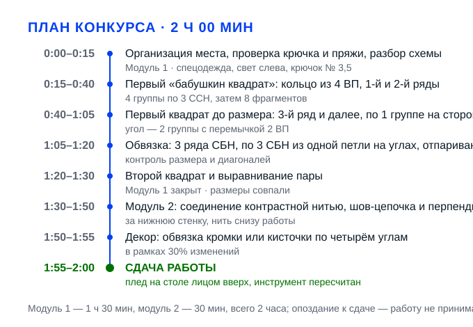
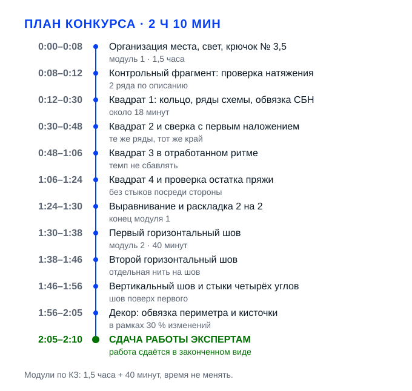
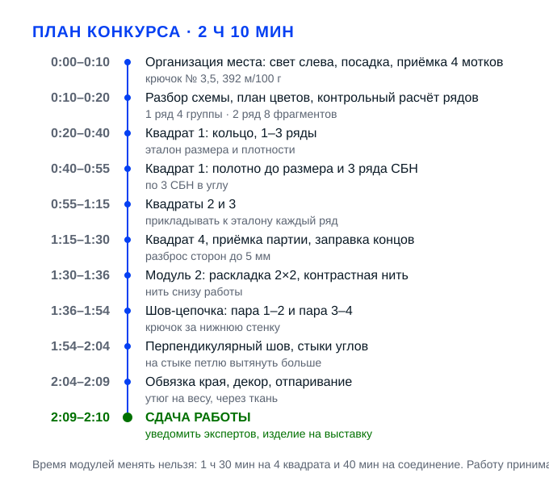

Шелонская вязка (ФВ)
Задания ниже — официальные файлы «Абилимпикс» (источник: abilympics-russia.ru), разложенные по категориям. Решения написаны по тексту задания, регламенту и критериям оценки; в них указано, что именно проверяет эксперт.
Школьник
14–16 лет, базовый уровень заданияВ официальном файле категории не разделены отдельными разделами — приводим задание целиком; различия по категориям смотрите в таблице модулей.
Пошаговое решение
Задание для школьников — связать крючком плед для куклы из двух «бабушкиных квадратов» и уложиться в два часа: полтора часа отведено на модуль 1, где вяжутся сами квадраты, и полчаса на модуль 2, где квадраты соединяются контрастной нитью и украшаются. Материалы выдаются на площадке: пряжа «Семеновская Ольга» (100 г, 392 метра, половина шерсти и половина акрила) четырёх разных цветов, крючок № 3,5 и ножницы; цвета участник выбирает сам, а вот размер и форму изделия менять нельзя. Баллов в этой компетенции не начисляют — результат конкурса это выставка работ, поэтому судят не сумму ошибок, а то, как изделие выглядит и держится в руках. Главное, что определяет впечатление: ровный центр квадрата, одинаковый размер двух квадратов, плоский шов-цепочка с чётким крестом на стыке и аккуратно спрятанные концы нитей. Ниже — весь путь по шагам, от раскладки инструмента до сдачи.

Задача 1. Организовать рабочее место и разобрать заданиеМодуль 1 · подготовка · первые 10–15 минут из 90
Плед для куклы начинается не с пряжи, а со стола: до старта надо надеть спецодежду, поставить свет слева, разложить инструмент в чехол, проверить крючок и пряжу и разобрать описание по рядам. Эти пятнадцать минут вычитаются из модуля 1, но они же экономят двадцать: участник, который сел вязать, не прочитав схему, обязательно распустит первый ряд. Здесь же решается вопрос размера квадрата — его надо уточнить до первого столбика, потому что менять размеры изделия задание запрещает.
Действие 1.1. Привести себя и место в рабочее состояние
Шаг 1.1.1
Надеваем халат или фартук из перечня спецодежды, который приведён в пункте 3 конкурсного задания: застёгиваем на все пуговицы, рукава подворачиваем до локтя или закрепляем манжетой, волосы убираем под резинку так, чтобы ни одна прядь не свисала на лицо. Украшения снимаем заранее, до того как взяли крючок: кольцо на рабочей руке натирает при вывязывании столбиков с накидом, а часы цепляются за нить и оставляют затяжки на уже связанном полотне. Руки моем и вытираем насухо — мокрая кожа цепляет шерсть, и нить начинает пушиться.
Спецодежда в перечне оборудования стоит отдельной строкой, и эксперт проверяет её до старта: халат должен быть чистым и застёгнутым, потому что работа с шерстяной пряжей — это ворс, который осыпается на стол и на одежду. Аккуратный халат и убранные волосы — первое, что видит эксперт на обходе, и дальше он смотрит на работу внимательнее. Баллов здесь не начисляют, но итог конкурса — выставка, а на выставку работу приносят вместе с рабочим местом.
Проверьте себя по трём признакам: волос не видно ни спереди, ни сзади; халат застёгнут и не топорщится на плечах; рукава не спускаются ниже локтя и не мешают кисти двигаться. Руки сухие, ногти коротко подстрижены, кольца и часы сняты. Если халат велик, подвяжите пояс — свободная пола всё равно будет цепляться за рабочую нить.
Чаще всего школьники надевают халат накидкой, не застёгивая нижние пуговицы, и к середине модуля полы расходятся и мешают работать. Вторая ошибка — оставить часы на руке: они цепляют пряжу и оставляют затяжки на лицевой стороне квадрата, а затяжка видна сразу и распусканием уже не убирается.
Эксперт обходит площадку в первые минуты и отмечает, в каком виде участник сел за стол. Если халат забыт дома, об этом надо сказать до старта: запасной обычно есть у организаторов, а молчание превращает мелочь в нарушение.
Шаг 1.1.2
Раскладываем стол так, чтобы всё нужное лежало в пределах вытянутой руки и ничего не приходилось искать. Настольную лампу ставим слева и чуть впереди — свет должен падать на работу с левой стороны, тогда тень от крючка не закрывает петли. Стул придвигаем так, чтобы корпус касался спинки, а расстояние от глаз до полотна было 35–40 сантиметров: ближе начинает тянуть шею, дальше не видно, куда входит крючок. Мусорную корзину ставим справа под столом, чтобы обрезки ниток не лежали на полотне и не путались с рабочей нитью.
Пункт 6 конкурсного задания прямо требует, чтобы рабочее место было хорошо освещено, свет падал слева, а расстояние от глаз до работы было не менее 35–40 сантиметров. Это не формальность: при вязании крючком № 3,5 из пряжи, где в ста граммах 392 метра, петли мелкие, и при плохом свете ошибку в группе столбиков замечаешь только через два ряда, когда распускать уже дорого по времени модуля.
Сядьте, положите руки на стол и посмотрите на кромку полотна: она освещена ровно, без тени от вашей же руки, крючок виден целиком. Проверьте, что за спинкой стула остаётся проход не меньше 1,20 метра — по нормам площадки он должен быть свободным, и если вы отодвинули стул в проход, его придётся вернуть.
Ставят лампу справа или сзади — и половина полотна в тени; тогда кажется, что столбики ровные, а на выставке видно, что один ряд выше другого. Вторая ошибка — сидеть сгорбившись над столом: через сорок минут начинает тянуть шею, темп падает, и второй квадрат вяжется заметно хуже первого.
Эксперт смотрит на организацию места в первые пять минут: освещение, посадку, порядок на столе. Отдельно он отмечает, лежит ли инструмент в чехле или шкатулке, как того требует инструкция по охране труда.
Шаг 1.1.3
Достаём крючок № 3,5, ножницы в футляре, шкатулку или чехол для инструмента и четыре мотка пряжи. Слева от себя кладём пряжу, которая пойдёт в работу, перед собой — описание и схему, справа — ножницы и корзину для обрезков. Крючок и ножницы сразу убираем в шкатулку и запоминаем, сколько их: в конце работы количество должно совпасть, это отдельное требование инструкции. Схему лучше положить в прозрачный файл или прижать так, чтобы она не сдвигалась от движения локтя.
Правило «инструмент живёт в шкатулке» взято из инструкции по охране труда: до начала работы крючок и ножницы должны храниться в чехле, а по окончании участник пересчитывает крючки и убирает их в отведённое место. Порядок на столе экономит время: на поиск ножниц в нужный момент уходит по полминуты, а за два часа таких поисков набегает пять-шесть минут — это почти четверть модуля 2.
На столе должно остаться только то, что участвует в работе: пряжа, крючок, ножницы, схема, булавки. Проверьте, что ножницы лежат сомкнутыми, а не открытыми на столе, и что обрезки не смешались с рабочей нитью. Пересчитайте крючки и запишите число, если их больше одного.
Типичная ошибка — выложить на стол всю пряжу, включая запасные цвета: мотки расползаются, путаются с рабочей нитью, и в какой-то момент вы тянете не тот конец. Ещё одна — держать ножницы открытыми рядом с полотном: ими легко зацепить и рассечь уже связанную кромку.
Эксперт заглядывает в шкатулку при обходе и в конце, когда вы сдаёте работу: расхождение в количестве крючков — повод задать вопрос. Чистый стол и инструмент на своих местах он отмечает как часть культуры работы.
Действие 1.2. Проверить крючок, пряжу и ножницы
Шаг 1.2.1
Берём крючок № 3,5 и проверяем его рукой и на свету: проводим подушечкой большого пальца по головке — она должна быть гладкой, без заусенцев и без острого, как у шила, кончика. Затем вяжем короткую пробу: набираем восемь воздушных петель и провязываем четыре столбика с накидом. Хороший крючок входит в петлю без скрипа и не расслаивает нить, плохой цепляет волокна, и на полотне появляются лохматые петли. Если крючок деревянный, отдельно проверьте, нет ли трещины у головки — она ловит нить намертво.
Инструкция по охране труда отдельно оговаривает, что крючок должен быть хорошо отшлифован и не иметь сильно острых концов, чтобы не поранить пальцы. Но дело не только в безопасности: заусенец на головке рвёт шерстяное волокно, а пряжа «Ольга» состоит из шерсти и акрила пополам, поэтому расслоённая нить ложится неровно и полотно выглядит дешевле, чем связано.
Проведите крючком по тыльной стороне кисти: не должно быть царапин и зацепов. На пробной цепочке все петли одной высоты, нить не разлохмачена, на крючке не осталось волокон. Головка входит в петлю с лёгким щелчком, а не с усилием.
Берут крючок похожего размера, например № 4 или № 3: плотность сразу уходит, квадрат получается либо дырявым, либо каменным, и подогнать его потом нечем. Вторая ошибка — работать крючком с шероховатой головкой и списывать расслоение нити на пряжу: распустить такой ряд почти невозможно, петли свалялись.
Эксперт может попросить показать крючок до старта: в перечне стоит именно № 3,5, и замена на другой номер — изменение перечня инструментов, которое заданием не допускается. Он же смотрит, как участник держит крючок: как карандаш или как нож — оба способа допустимы, лишь бы кисть не зажималась.
Шаг 1.2.2
Разбираем четыре мотка: сверяем номер цвета и номер партии на этикетках, потому что оттенки из разных партий в одном изделии дают заметную границу. Мотки перематываем в клубки или хотя бы находим и вытягиваем рабочую нить так, чтобы она шла снизу, а не сверху: тогда клубок не подпрыгивает по столу. Пряжу перед работой не растягиваем и не сматываем в тугой шар — шерсть после сильного натяжения теряет упругость и вяжется как мочалка.
По инфраструктурному листу на участника выдаётся четыре мотка разных цветов, и цвета участник выбирает свободно — это прямо разрешено в требованиях к участникам. Но метраж и толщина должны совпадать: если один моток тоньше, квадраты выйдут разного размера, а размер изделия менять нельзя. Тонкая нить в одном месте полотна даёт провисшие петли, и выравнивать их потом приходится крючком, растягивая кромку.
Сложите нити двух мотков рядом: толщина на глаз одинаковая, оттенок при дневном свете совпадает. Подёргайте нить — она должна пружинить, а не расползаться на отдельные волокна. На этикетке проверьте 392 метра в 100 граммах: если метраж другой, скажите эксперту до старта, а не после первого квадрата.
Самая частая ошибка — начать с середины мотка, вытянув целую кишку петель: она путается, и половину времени вы распутываете, а не вяжете. Вторая — взять моток из другой партии для второго квадрата: разница в полтона видна на стыке, и шов начинает звенеть.
Эксперт смотрит на пряжу в начале: не принёс ли участник свою, не согласованную с главным экспертом. Свои заготовки и материалы на площадке запрещены, кроме деталей, заранее согласованных с главным экспертом.
Шаг 1.2.3
Проверяем ножницы: лезвия сходятся по всей длине, ход плавный, без заедания, винт не разболтан. Режем нить только ножницами — коротким движением у самых лезвий, оставляя хвост 8–10 сантиметров, чтобы его можно было втянуть в кромку. Ножницы держим справа, лезвиями от себя, а в перерыве кладём на стол сомкнутыми. Тупые ножницы выдают себя сразу: нить не режется, а жуется, и конец получается раздавленным.
Инструкция по охране труда запрещает перекусывать нить зубами и отрывать её руками — от этого рвётся волокно, кончик становится мохнатым и вылезает из полотна после первой же стирки. Ровный срез ножницами даёт аккуратный хвост, который прячется в кромку и не виден с лица. Открытые ножницы на столе — ещё и риск зацепить и вытянуть петлю уже связанного полотна.
Проверьте на обрезке: срез ровный, без лесенки и без раздавленного конца. Ножницы режут нить без усилия; если приходится сжимать двумя руками, инструмент тупой и его надо заменить до старта. В перерыве лезвия сомкнуты и направлены от вас.
Обрывают нить руками, чтобы быстрее: кончик получается рваным, и при втягивании в кромку он выходит наружу мохнатым шариком. Вторая ошибка — обрезать нить под самое основание, без хвоста: закрепить её тогда нечем, узелок расползается, и угол квадрата разъезжается.
Эксперт видит, чем и как обрезана нить, при первом же осмотре изнанки: рваные концы и узелки на лице — заметный дефект. Отдельно он смотрит, лежат ли ножницы сомкнутыми.
Действие 1.3. Разобрать описание, спланировать время и плотность
Шаг 1.3.1
Читаем описание целиком, до конца, и только потом берём крючок. Выписываем на лист условные обозначения из задания: ВП — воздушная петля, СБН — столбик без накида, ПССН — полустолбик с накидом, ССН — столбик с накидом, СС — соединительный столбик. Дальше идём по тексту с карандашом и отмечаем, где начинается каждый ряд, где стоят звёздочки повтора и сколько раз повторять. Схему держим рядом и сверяем с описанием: если что-то расходится, вопрос задаём эксперту до старта.
В требованиях к квалификации сказано, что участник должен знать условные обозначения на схемах и работать по словесному описанию. На конкурсе это проверяется косвенно: тот, кто разобрал описание заранее, вяжет без остановок, а тот, кто читает по ходу, каждые две минуты поднимает глаза и теряет ритм. В описании есть места, где легко ошибиться именно из-за невнимательного чтения: повтор в первом и во втором ряду отличается на один раз.
Перескажите себе порядок работы по рядам, не подглядывая: кольцо из четырёх воздушных петель, первый ряд — четыре группы по три столбика с накидом, второй — восемь фрагментов, третий и дальше — по правилу угла. Если на каком-то ряду вы сбиваетесь, отметьте его на схеме маркером. Условные обозначения выписаны и лежат на столе перед глазами.
Начинают вязать, прочитав только первый ряд, и на втором повторяют группы три раза вместо семи: получается не восемь фрагментов, а пять, квадрат перекашивается, и распускать приходится до кольца. Вторая ошибка — путать столбик с накидом и полустолбик: полустолбик ниже, и сторона квадрата укорачивается на целый ряд.
Эксперт в первые минуты смотрит, читает ли участник описание осмысленно и задаёт ли вопросы до старта. Вопрос, заданный до начала, ничем не грозит; вопрос про схему в середине модуля он отметит как потерянное время.
Шаг 1.3.2
Считаем время честно: на модуль 1 отведено 1 час 30 минут, и это два квадрата, то есть примерно по 35 минут на квадрат с запасом 15–20 минут на разбор описания и первую пробу. На модуль 2 отведено 30 минут, из них 20 на соединение и 10 на декор, обрезку нитей и уборку. Контрольные точки записываем на листке крупно: к 0:40 первый квадрат готов, к 1:20 второй, к 1:30 начало соединения, к 1:55 декор закончен, к 2:00 работа сдана.
Общее время выполнения задания для школьников — 2 часа, и оно не меняется: изменение времени выполнения в списке недопустимых изменений. Раскладка по контрольным точкам нужна потому, что вязание затягивает: пока не дошёл до конца ряда, кажется, что успеешь всё, а на декоре внезапно не остаётся ни одной свободной минуты. С цифрой перед глазами вы вовремя замечаете, что отстаёте на ряд, и успеваете ускориться.
Сверяйтесь с часами на площадке каждый раз, когда закончили ряд, и сравнивайте с контрольной точкой. Если к 0:40 связано меньше половины первого квадрата, план надо менять: сокращать не ряды, а декор — например, отказаться от кисточек в пользу обвязки кромки. Часы поставьте на стол, а не держите в кармане.
Планируют как получится и обнаруживают, что до сдачи двадцать минут, а второй квадрат только начат: в спешке петли идут неровно, обвязка выходит волной, и соединение делается наспех. Вторая ошибка — отдать все полтора часа первому квадрату, доводя его до идеала, и оставить второй на двадцать минут.
Эксперт по ходу модуля видит, сверяется ли участник со временем. На сдаче важно, чтобы изделие было законченным: по требованиям оно должно быть представлено в законченном виде, а не почти готово.
Шаг 1.3.3
Вяжем пробную цепочку из десяти воздушных петель и пяти столбиков с накидом, измеряем линейкой ширину и высоту и запоминаем натяжение руки. Сразу уточняем у эксперта целевой размер квадрата: в описании сказано «до необходимого размера», а менять размеры изделия нельзя, поэтому цифра должна быть известна до старта. Если проба выходит рыхлой, крючок менять нельзя — перечень инструментов фиксирован, значит, работаем плотнее: нить идёт с большим натяжением, крючок вводится глубже.
Плотность определяет, совпадут ли два квадрата по размеру. При одном и том же крючке и одной пряже разница в натяжении даёт до полутора сантиметров на стороне квадрата, а при соединении такая разница вылезает волной по шву. Пробная цепочка занимает две минуты, а экономит целый ряд, который иначе придётся распускать после обвязки.
Пять столбиков с накидом должны дать ровную полосу одинаковой высоты, без провалов и без стянутых петель. Сравните пробу с первым рядом квадрата, когда он будет связан: если квадрат идёт заметно рыхлее, натяжение надо подтянуть. Запишите целевой размер квадрата рядом с контрольными точками времени.
Пропускают пробу и вяжут как рука взяла: первый квадрат выходит двенадцать сантиметров, второй четырнадцать, и на соединении кромки не совпадают по петлям. Тогда либо тянется шов, либо один квадрат приходится перевязывать целиком — а это тридцать пять минут, которых уже нет.
Эксперт называет целевой размер и следит, чтобы участник его держал. Если размеры изделия меняют, это выходит за рамки допустимых 30% изменений, поэтому вопрос размера лучше закрыть до первого столбика.
Задача 2. Связать первый «бабушкин квадрат» от центраМодуль 1 · вязание пледа · 1 час 30 минут на два квадрата
«Бабушкин квадрат» вяжется от центра по кругу, и вся его геометрия держится на двух правилах: на угле две группы по три столбика с накидом с перемычкой из двух воздушных петель, на стороне одна такая группа. Первый ряд даёт четыре группы и четыре арки, второй удваивает их до восьми, и дальше каждый ряд добавляет по одной группе на сторону. Заканчивается квадрат тремя рядами столбиков без накида с тремя столбиками из одной петли на углах. Здесь важно не ускорение, а ритм: квадрат, связанный ровно, соединяется со вторым за пятнадцать минут, а перекошенный приходится перевязывать.
Действие 2.1. Начать от центра: кольцо и первый ряд
Шаг 2.1.1
Кладём нить на левую ладонь, прижимаем большим пальцем, конец идёт от клубка снизу. Делаем начальную петлю: складываем нить петлёй, вводим крючок в петлю, подхватываем рабочую нить и вытягиваем — на крючке одна петля, узел не затянут. Набираем четыре воздушные петли, не считая петли на крючке, и замыкаем цепочку в кольцо соединительным столбиком за обе полупетли первой петли. Кольцо укладываем на стол и проверяем, что цепочка не сделала восьмёрку.
Четыре воздушные петли — это центр квадрата, и от них зависит, будет ли середина ровной. Слишком тугая цепочка не даст провязать двенадцать столбиков с накидом в кольцо, и участник начнёт вязать в петли цепочки, отчего в центре образуется дырка. Перекрученное кольцо исправить потом невозможно: перекос уйдёт в углы, и распускать придётся до самой цепочки.
На крючке одна рабочая петля, за ней ровная цепочка из четырёх петель одной высоты, кольцо лежит плоским кружком, отверстие в середине одинакового размера по всем направлениям. Потяните за конец нити — кольцо не должно разъезжаться. Соединительный столбик не виден как отдельный бугор.
Набирают пять-шесть петель на всякий случай: кольцо больше, центр провисает, и первый ряд ложится овалом. Вторая ошибка — затянуть начальную петлю в узел: крючок в неё не входит, и ряд начинается с протягивания нити сквозь узел, а на лице остаётся твёрдый комок.
Эксперт смотрит на центр готового квадрата первым делом: дырка или стянутый узел видны сразу. По тому, как набрана цепочка, ему понятно и то, вязал ли участник раньше.
Шаг 2.1.2
Первый ряд вяжем в центр кольца, а не в петли цепочки: вводим крючок в отверстие кольца, захватываем нить и вывязываем два столбика с накидом, затем две воздушные петли. Дальше повторяем три раза: три столбика с накидом в центр кольца и две воздушные петли между группами. В итоге получается четыре группы по три столбика и четыре арки — всего двенадцать столбиков с накидом, и все они выходят из одной точки, поэтому центр остаётся плотным.
Столбики вяжутся в центр, потому что так середина квадрата получается плотной и плоской: если вязать в петли цепочки, между столбиками остаются просветы и центр выходит дырявым. Четыре группы с двумя воздушными между ними — это основа углов: каждая арка в следующем ряду станет углом, поэтому их должно быть ровно четыре, ни больше и ни меньше.
Пересчитайте: четыре группы, в каждой по три столбика, всего двенадцать; арок из двух воздушных петель тоже четыре, и они на равных расстояниях друг от друга. Кружок лежит плоско, не сворачивается в чашку и не идёт волной. Крючок проходит в кольцо без усилия.
Вяжут столбики в петли цепочки — в центре остаётся большая дырка, которую потом не закрывает никакая обвязка. Вторая ошибка — сделать три арки вместо четырёх или четыре группы по два столбика: угол не сформируется, и квадрат вырастет треугольником.
Эксперт считает группы в первом ряду, если сомневается в аккуратности: четыре группы по три столбика — признак того, что описание прочитано. Дырку в центре он ищет в первую очередь.
Шаг 2.1.3
Заканчиваем ряд так, как сказано в описании: протаскиваем нить под первый столбик с накидом этого ряда, вытягиваем петлю и закрепляем. Нить не обрезаем под корень — оставляем хвост 8–10 сантиметров, чтобы потом втянуть его крючком в изнаночную сторону. Следим, чтобы закрепление не стянуло кольцо: оно должно остаться плоским, а высота последней группы — такой же, как у первой.
Такой способ закрытия даёт незаметный переход: петля уходит под первый столбик, и на лице нет лишнего бугра, который виден на фоне ровных групп. Если обрезать нить без хвоста, закрепить её будет нечем, и после первой стирки конец вылезет наружу. Крепление без стягивания важно ещё и потому, что стянутый первый ряд не даст квадрату лежать плоско.
Переверните кружок: на изнанке конец нити втянут и не топорщится, на лице переход от последней группы к первой не виден как ступенька. Потяните изделие за противоположные стороны — оно возвращается в исходную форму, значит, ряд не стянут. Число групп осталось прежним.
Обрезают нить, оставив два сантиметра, и потом не могут спрятать кончик: он выходит на лицо. Вторая ошибка — затянуть закрепление так, что первый ряд собирается в гармошку: центр перестаёт быть плоским, и все следующие ряды ложатся с волной, которую уже не убрать отпариванием.
Эксперт осматривает изнанку изделия на выставке: аккуратно спрятанные концы — признак хорошей работы. Торчащие хвосты он отмечает как небрежность. Стянутый центр он тоже видит.
Действие 2.2. Связать второй ряд: восемь фрагментов
Шаг 2.2.1
Начинаем второй ряд с трёх воздушных петель подъёма: они заменяют первый столбик с накидом, поэтому дальше в ту же арку вяжем ещё два столбика — вместе получается группа из трёх. Затем две воздушные петли и переходим к следующей арке. Следите, чтобы подъём не считался отдельной группой: это часть первой, иначе к концу ряда получится лишний фрагмент и ряд пойдёт с перекосом на один элемент.
Описание говорит: три воздушные петли, два столбика с накидом, две воздушные, дальше повтор. Такая запись означает, что подъём входит в первую группу — стандартный приём, который держит высоту ряда одинаковой по всему кругу. Если посчитать подъём отдельно и добавить три столбика, в первом фрагменте окажется четыре столбика, и квадрат начнёт заворачиваться по спирали.
После первого фрагмента на крючке одна петля, в работе одна группа из трёх столбиков и арка из двух петель. Высота группы равна высоте столбика с накидом: подъём не торчит выше остальных. Сравните с первым рядом — новый должен быть выше ровно на один столбик.
Вяжут три воздушные подъёма и три столбика сверху — в первом фрагменте четыре столбика, и весь ряд идёт с перекосом. Вторая ошибка — начать новый ряд без подъёма: ряд получается ниже предыдущего, и квадрат закручивается в чашу.
Эксперт смотрит на боковую кромку: если ряды идут с уступом, значит, подъём считали неправильно. Ровная кромка — видимый признак аккуратной работы. Кромку он смотрит с обеих сторон.
Шаг 2.2.2
Идём по кругу и в каждую арку из двух воздушных петель вяжем группу из трёх столбиков с накидом, а между группами — две воздушные петли. Повторяем ещё семь раз, как сказано в описании: на углах в одну арку попадает по две группы, между ними остаются те же две воздушные петли. Итого во втором ряду должно получиться восемь фрагментов — по два в каждом промежутке между углами.
Правило «на угле две группы, на стороне одна» превращает круг в квадрат: каждый угол получает дополнительную группу, и полотно распрямляется. Восемь фрагментов — не случайное число: четыре угловые пары и четыре промежуточные группы дают ровный квадрат со стороной в две группы. Если сбиться в счёте, квадрат выйдет ромбом или кругом, и исправлять это придётся распусканием.
Пересчитайте группы по кругу: восемь. Между угловыми парами ровно по две воздушные петли, расстояние между углами одинаковое. Положите вязание на стол — оно уже лежит почти квадратом, а не тарелкой. Арки не растянуты и не стянуты.
Повторяют не семь раз, а шесть: групп получается семь, и одна сторона короче — на выставке это заметно, а при соединении со вторым квадратом кромки не совпадут. Вторая ошибка — на углах вязать одну группу: квадрат остаётся круглым, и дальше это уже не исправить.
Эксперт считает фрагменты в готовом квадрате, если видит, что форма плывёт. Восемь групп во втором ряду — контрольная цифра, по которой проверяется, правильно ли прочитано описание.
Шаг 2.2.3
Закрываем второй ряд так же, как первый: протаскиваем нить под первую группу и закрепляем, оставляя хвост. Затем кладём квадрат на стол и выравниваем руками: углы должны смотреть в четыре стороны, стороны быть прямыми. Если один угол вышел больше остальных, значит, в нём случайно провязали лишнюю группу — это видно по числу столбиков, и лучше распустить ряд сейчас, чем после обвязки.
Второй ряд — первый, где форма квадрата уже читается, и именно здесь дешевле всего исправить ошибку: распустить один ряд — две минуты, распустить квадрат после обвязки — двадцать. Контроль формы после каждого ряда входит в требование проверять качество изделия в процессе работы, а не только в конце.
Четыре угла на одинаковом расстоянии от центра, диагонали примерно равны, стороны не выгнуты дугой. Квадрат лежит на столе без груза и не заворачивается по углам. Число групп — восемь, арок — восемь. Углы одинаковые.
Не проверяют форму после второго ряда и замечают перекос только после обвязки, когда распускать приходится три ряда и обвязку. Вторая ошибка — тянуть квадрат руками, чтобы выровнять: полотно растягивается неравномерно и после стирки возвращается в перекошенное состояние.
Эксперт может подойти и посмотреть на полотно в процессе: ровные углы на втором ряду — хороший знак. Он же отмечает, проверяет ли участник изделие по ходу, как того требует квалификационный перечень.
Действие 2.3. Нарастить квадрат до нужного размера
Шаг 2.3.1
Третий ряд вяжем по правилу, которое дальше не меняется: на углах две группы из трёх столбиков с накидом с перемычкой из двух воздушных петель между ними, в остальных промежутках между группами по одной группе из трёх столбиков, и все группы соединяются цепочкой из двух воздушных петель. Начинаем с трёх воздушных подъёма и двух столбиков в ту же арку. Двигаемся по кругу и каждый раз смотрим, угловая это арка или промежуточная.
Это правило и есть «бабушкин квадрат»: углы получают двойную порцию столбиков, стороны одинарную, поэтому квадрат растёт, сохраняя форму. Ошибка на угле стоит дороже всего: если в углу провязать одну группу вместо двух, угол стянется, все следующие ряды пойдут с перекосом, и исправлять придётся с третьего ряда.
В третьем ряду на каждой стороне между углами должна появиться одна новая группа, а всего групп станет двенадцать. Угол должен быть прямым: две группы расходятся из одной арки под девяносто градусов. Перемычки везде по две петли, а не по одной.
Путают угловую арку с промежуточной и вяжут в угол одну группу: угол садится, и квадрат становится похож на звезду с четырьмя лучами. Вторая ошибка — делать перемычку в одну воздушную петлю для плотности: полотно стягивается, и квадрат перестаёт быть плоским.
Эксперт смотрит на углы: они должны быть чёткими, с двумя группами и ровной перемычкой. Разница между углом и стороной — то, по чему сразу видно, понимает ли участник схему.
Шаг 2.3.2
Держим в голове простое правило счёта: в третьем ряду на каждой стороне три группы, в четвёртом четыре, в пятом пять, и так далее — номер ряда и число групп на стороне совпадают. Поэтому, закончив ряд, пересчитывайте группы по одной стороне: если их меньше номера ряда, где-то пропущена группа. Считать удобнее от угла до угла, а не по всему кругу, чтобы не сбиться на середине.
Счёт по сторонам даёт мгновенную проверку без пересчёта всего ряда: ошибка обнаруживается на том ряду, где появилась, а не через три ряда, когда исправление стоит двадцать минут. Именно счёт спасает в середине работы, когда внимание падает: к пятому ряду в круге уже двадцать групп, и пересчитывать их все долго.
Число групп на стороне равно номеру ряда. Все четыре стороны одинаковы — сравните их, повернув квадрат. Углы симметричны: в каждом по две группы и перемычка из двух петель. Число групп на стороне растёт на одну за ряд, и это тоже видно.
Считают на глаз и пропускают группу на одной стороне: квадрат становится трапецией, а при обвязке столбиками без накида разница вылезает ещё сильнее. Вторая ошибка — добавить лишнюю группу, чтобы выровнять: сторона вытягивается, и изделие уже не квадрат.
Эксперт может пересчитать группы по стороне, чтобы проверить ровность. Симметрия квадрата — главный критерий качества для этого изделия. Отдельно он смотрит симметрию углов.
Шаг 2.3.3
Повторяем третий ряд до нужного размера, каждый раз добавляя по одной группе на сторону, пока сторона не дойдёт до целевого размера, который вы уточнили до старта. Счёт рядов ведём на бумаге: ставим точку после каждого законченного ряда, и тогда не приходится гадать, четвёртый это ряд или пятый. Полотно держим на столе, а не на весу: так видно, лежит ли квадрат плоско и не пошёл ли он лодочкой.
Описание говорит «до тех пор, пока не получится квадрат необходимого размера», и это единственное место, где размер определяется вами, но менять размеры изделия задание не разрешает. Значит, размер должен быть согласован заранее, а ряды считаны, чтобы два квадрата совпали. Разница в один ряд даёт около сантиметра на стороне, и на соединении это вылезет волной.
Измерьте сторону линейкой: она равна целевому размеру с точностью до половины сантиметра. Квадрат лежит плоско, диагонали равны, углы прямые. Число рядов записано, и вы сможете повторить его на втором квадрате без пересчёта.
Вяжут пока не надоест и получают квадрат на два ряда больше нужного: второй придётся доводить до того же размера, а время модуля уже израсходовано. Вторая ошибка — не записывать число рядов: второй квадрат вяжется по памяти и выходит на ряд короче.
Эксперт сверяет размеры двух квадратов линейкой при сдаче. Совпадение размеров — обязательное условие ровного шва, и он смотрит на это первым делом. Линейка — его инструмент.
Шаг 2.3.4
Меняем цвет на границе ряда: довязываем ряд до конца, закрепляем нить, оставляя хвост 8–10 сантиметров, и присоединяем новый цвет в ту же арку, откуда начнётся следующий ряд. Нить не обрываем посередине стороны: переход цвета на углу или на границе ряда выглядит аккуратно, а посреди стороны даёт заметную ступеньку. Хвосты обоих цветов сразу втягиваем крючком в изнаночную сторону, не оставляя их висеть.
В перечне расходных материалов четыре мотка разных цветов, и требования к участникам разрешают свободно выражать творческие идеи в использовании цветов. Но чистота перехода — это уже качество: ступенька посреди стороны видна и на выставке, и на фотографии изделия. Втянутые сразу хвосты не путаются с рабочей нитью и не вылезают потом на лицо.
Переход ровный, без пенька и без просвета; нить нового цвета той же толщины, что и прежняя. На изнанке хвосты втянуты и не висят. Полотно в месте перехода не стянуто: сторона квадрата осталась прямой.
Обрывают нить посреди стороны и присоединяют новую там же: на лице видна ступенька и маленький узел. Вторая ошибка — оставить хвосты висеть, чтобы спрятать потом: к концу работы их набирается десяток, они путаются с рабочей нитью, и распутывание съедает время декора.
Эксперт смотрит на переходы цвета и на изнанку: аккуратная изнанка — признак профессиональной работы. Торчащие хвосты он считает небрежностью. Ступеньку на стыке цветов он тоже замечает.
Действие 2.4. Обвязать квадрат и обработать его
Шаг 2.4.1
Последние три ряда вяжем столбиками без накида: один столбик в каждую петлю основания, в арки из двух воздушных петель по два столбика, чтобы кромка не стягивалась. Каждый ряд начинаем с одной воздушной петли подъёма, которая не считается столбиком. Вяжем плотно, но без натяжения: кромка должна быть ровной, а не гофрированной, и высота столбиков по всем четырём сторонам одинаковой.
Обвязка закрепляет край: без неё кромка «бабушкиного квадрата» из одних столбиков с накидом растягивается и закручивается. Три ряда дают плотную рамку, которая держит форму при соединении и не даёт шву проваливаться. В описании есть и вариант с одним рядом столбиков без накида и последним рядом рачьим шагом — оба допустимы, но выбранный вариант надо довести до конца.
Кромка ровная по всем четырём сторонам, высота столбиков одинаковая, нет пропусков и лишних столбиков. Положите квадрат на стол: углы не заворачиваются вверх. Проведите рукой по кромке — она не должна быть волнистой.
Вяжут по одному столбику в арку, а не по два: кромка стягивается, углы поднимаются, и квадрат перестаёт быть плоским. Вторая ошибка — вязать обвязку свободно, чтобы не тянуло: кромка идёт волной, и при соединении волна переходит в шов.
Эксперт смотрит кромку на просвет: ровная плотная рамка — признак того, что участник понимает, зачем нужна обвязка. Волнистая кромка видна сразу. Волну на кромке он видит на просвет.
Шаг 2.4.2
На углах вяжем по три столбика без накида из одной петли предыдущего ряда — это правило из описания, и оно нужно, чтобы край не стянулся. Крючок вводим в угловую петлю три раза подряд, каждый раз вывязывая полный столбик, и только потом идём дальше по стороне. Угол после этого должен развернуться на девяносто градусов, а не собраться в точку, и все четыре угла должны быть одинаковыми.
Угол — место, где кромка поворачивает, и без прибавки там не хватает петель: край садится, и квадрат выгибается лодочкой. Три столбика из одной петли дают ровно тот объём, который нужен для поворота на прямой угол. Это же место эксперт проверяет первым, когда берёт изделие: по углам видно, ровное ли полотно.
Угол развёрнут, кромка на нём не стянута, три столбика видны как веер. Проверьте все четыре угла: они одинаковы по форме. Положите квадрат на стол — углы лежат в плоскости и не поднимаются. На ощупь угол плотный, без бугра.
Делают на угле один столбик или два: угол стягивается, и квадрат становится похож на подушку с поднятыми краями. Вторая ошибка — вязать на угле пять-шесть столбиков, чтобы точно не стянуло: угол разбухает, и кромка идёт волной.
Эксперт проверяет углы на ощупь и на просвет: они должны быть плоскими и одинаковыми. Разнобой в углах — заметный дефект. Если один угол вышел больше, он попросит показать, как участник его вязал.
Шаг 2.4.3
Последний ряд можно провязать рачьим шагом: работу не поворачиваем, начинаем с левого конца последнего ряда и движемся вправо, вводя крючок в петлю основания, лежащую правее, и вывязывая столбик без накида в обратном направлении. Крючок идёт навстречу привычному движению, кисть разворачивается, поэтому вяжем медленнее и не спешим. Петли держим одной высоты, иначе кромка пойдёт зубцами.
Рачий шаг даёт плотный валик по краю, который не даёт кромке растягиваться и выглядит как отделка, а отделка входит в допустимые изменения задания. Описание предлагает его как вариант последнего ряда, и если выбран он, отступать уже нельзя: разница между обычной кромкой и рачьим шагом видна. Медленный темп здесь оправдан: исправить рачий шаг, не распуская, невозможно.
Валик идёт ровной полосой одинаковой толщины по всем четырём сторонам, без пропусков и бугров. Кромка не стянута: сторона квадрата не уменьшилась. На изнанке нет протяжек и узелков. Ширина валика одинаковая по всем сторонам.
Вяжут рачий шаг в обычном направлении, то есть просто столбики без накида: валика нет, и вся отделка теряет смысл. Вторая ошибка — вязать быстро и пропускать петли: в кромке появляются дырки, а исправлять их приходится распусканием всего ряда.
Эксперт отличает рачий шаг от обычной обвязки сразу: валик виден. Ровность валика он проверяет по всей длине кромки. Если валика нет, значит, ряд связан в обычном направлении, и это видно без вопросов.
Шаг 2.4.4
Закрепляем последнюю петлю, обрезаем нить с хвостом 8–10 сантиметров и втягиваем хвост крючком в кромку с изнаночной стороны на длину пять-шесть сантиметров. Дальше выравниваем квадрат: накалываем булавками на полотенце по целевому размеру, накрываем влажной марлей и прижимаем тёплым утюгом при температуре не выше режима шерсть, не растягивая полотно. Даём полностью высохнуть, не снимая булавок.
Влажно-тепловая обработка убирает перекосы, которые появились при вязании, и выравнивает кромку: после неё квадрат держит форму и размер, а шов ложится ровно. Пряжа «Ольга» состоит из шерсти и акрила пополам, поэтому горячий утюг её заплющивает: петли теряют объём и блестят, а вернуть им вид уже нельзя. Сушка на булавках фиксирует нужный размер до того, как полотно остынет.
Квадрат лежит плоско, диагонали равны, стороны прямые, размер совпадает с целевым. Петли не приплюснуты, ворс не блестит. Хвост нити не виден ни с лица, ни с изнанки. Проверьте линейкой сторону и диагонали после сушки: они не должны измениться от влаги.
Гладят горячим утюгом без марли: акрил оплавляется, и на полотне остаются лоснящиеся пятна, которые невозможно убрать. Вторая ошибка — сушить квадрат на весу или без булавок: он садится неравномерно, и размер уходит на сантиметр.
Эксперт смотрит, обработано ли изделие: ровный отпаренный квадрат отличается от только что связанного. Лоснящиеся пятна от утюга он отмечает как дефект.
Задача 3. Связать второй квадрат и выровнять паруМодуль 1 · вторая половина · примерно 35 минут
Второй квадрат вяжется по тому же описанию, но задача у него другая: он должен совпасть с первым по размеру, плотности и ширине обвязки. Опыт уже есть, движения отработаны, и именно здесь появляется главный риск — ускориться и связать плотнее, потеряв сантиметр на стороне. Поэтому число рядов берём из записи, а не из памяти, и после каждых двух рядов прикладываем квадрат к первому. Заканчивается задача измерением диагоналей, выравниванием и подсчётом столбиков кромки — без этого шов не ляжет ровно.
Действие 3.1. Повторить квадрат без расхождений
Шаг 3.1.1
Начинаем второй квадрат так же, как первый: начальная петля, четыре воздушные петли, кольцо, первый ряд из четырёх групп по три столбика с накидом. Дальше идём по записанному числу рядов, а не по памяти: смотрим в листок, где отмечено, сколько рядов было в первом квадрате и сколько групп на стороне в последнем ряду. Цвета можно взять в другом порядке, это допустимо, но ритм и плотность держим те же, что и в первом квадрате.
Два квадрата должны быть одинакового размера и одинаковой плотности, иначе шов пойдёт волной, а изделие перестанет быть прямоугольным. Второй квадрат вяжется быстрее первого, потому что движения отработаны, и именно здесь легко разогнаться и связать плотнее — отсюда разница в сантиметр. Записанные цифры — единственная страховка от такой разницы.
После каждых двух рядов прикладывайте второй квадрат к первому: стороны должны совпадать. Число групп на стороне в последнем ряду то же, что у первого. Плотность на ощупь одинаковая: полотно не тоньше и не толще первого.
Вяжут второй квадрат по памяти и на ряд меньше: при соединении кромки не совпадают по петлям, и шов приходится тянуть. Вторая ошибка — ускориться и связать плотнее: квадрат выходит меньше, и выравнивать его отпариванием уже поздно.
Эксперт сравнивает квадраты линейкой и на ощупь. Одинаковая плотность — то, что отличает работу, связанную осмысленно, от работы на скорость. Разницу в сантиметр он видит линейкой.
Шаг 3.1.2
Перед началом второго квадрата раскладываем на столе первый и решаем, как будут соотноситься цвета: одинаковый рисунок на обоих квадратах или зеркальный. Если рисунок повторяется, отмечаем на листке порядок цветов по рядам, чтобы не сбиться на середине. Обвязка столбиками без накида и последний ряд должны быть одинаковыми на обоих квадратах — это рамка, которая держит изделие целиком.
Плед собирается из двух квадратов в одно полотно, и если рамка обвязки разная, шов будет выглядеть как граница между двумя разными изделиями. Зеркальная или повторяющаяся раскладка — вопрос вкуса, а вот техника обвязки и её ширина — вопрос качества. Плюс симметрия помогает на выставке: изделие читается как целое, а не как две половины.
На листке записан порядок цветов по рядам и число рядов обвязки. Оба квадрата имеют одинаковое число рядов столбиков без накида и одинаковый последний ряд. При складывании пополам квадраты совпадают по кромке.
Делают на втором квадрате обвязку в два ряда вместо трёх: рамка разной ширины, и шов получается с уступом. Вторая ошибка — заменить последний ряд на одном квадрате рачьим шагом, а на другом оставить обычную обвязку: разница видна сразу.
Эксперт смотрит на изделие целиком: одинаковая рамка по периметру — признак того, что участник держал замысел в голове до конца. Рамку он сравнивает по ширине на обоих квадратах, а не на одном.
Шаг 3.1.3
Если по ходу второго квадрата видно, что он идёт не так, как первый, распускаем сразу, ряд за рядом, до места ошибки, а не пытаемся растянуть или подтянуть полотно потом. Распущенную нить не выбрасываем: она идёт обратно в работу, но слегка выпрямляется руками, потому что после распускания она волнистая. Перед провязыванием даём ей отвисеться минуту-две, иначе петли лягут неравномерно.
Растягивание и подтягивание не исправляют плотность: полотно запоминает деформацию и после стирки возвращается в перекошенное состояние. Распустить ряд — это две-три минуты, а перевязать квадрат целиком — тридцать пять. Распущенная пряжа слегка теряет упругость, поэтому ей надо дать отдохнуть, иначе квадрат выйдет рыхлее первого.
После исправления приложите квадрат к первому: размеры и плотность совпадают, полотно лежит плоско без натяжения. Распущенная нить не имеет выраженных завитков. Следов распускания на лице нет. Высота петель одинаковая.
Тянут связанное, чтобы уравнять с первым квадратом: кромка растягивается, петли вытягиваются, и после отпаривания это место выглядит разъезженным. Вторая ошибка — вязать распущенной волнистой нитью: петли ложатся с разной высотой, и полотно идёт рябью.
Эксперт замечает растянутые участки по неровной высоте петель. Аккуратно распущенный и перевязанный участок отличить от остального полотна почти невозможно — это и есть правильный путь.
Действие 3.2. Измерить и выровнять пару
Шаг 3.2.1
Кладём оба квадрата рядом на ровную поверхность и измеряем линейкой все четыре стороны каждого и обе диагонали. Записываем цифры на листке: сторона первого, сторона второго, диагонали. Если диагонали равны между собой, квадрат действительно квадрат, а не ромб; если разница между сторонами больше половины сантиметра, значит, где-то сбит счёт групп и это надо найти до соединения.
Линейка — единственный способ увидеть перекос, который глаз не замечает: полотно на столе кажется ровным, а на шве разница в сантиметр вылезает волной. Измерение диагоналей сразу показывает, квадрат это или ромб, и по нему понятно, в каком месте сбит счёт. Проверка качества изделия в процессе работы прямо входит в требования к квалификации.
Стороны каждого квадрата равны между собой с точностью до половины сантиметра, диагонали совпадают. Стороны двух квадратов совпадают между собой. Цифры записаны, чтобы сравнить их после отпаривания. Записи хватает, чтобы сравнить до и после.
Измеряют только одну сторону: перекос по диагонали не виден, и на соединении углы не сходятся. Вторая ошибка — мерить на весу или на мягкой поверхности: полотно провисает, и цифры врут на сантиметр. Тогда правку делают вслепую.
Эксперт измеряет изделие при сдаче. Если участник измерял по ходу, разница обычно уже устранена, и разговор на сдаче короткий. Перекошенный квадрат он видит по диагоналям раньше, чем по сторонам.
Шаг 3.2.2
Если квадраты разошлись по размеру, выравниваем без насилия: меньший накалываем по целевому размеру и отпариваем через влажную марлю, а у большего распускаем лишний ряд обвязки или последний ряд столбиков без накида. Разница до половины сантиметра уходит при отпаривании, разница в сантиметр — только распусканием. После выравнивания даём обоим полностью высохнуть на булавках.
Шов требует одинаковых кромок: если один квадрат больше, при соединении петли не совпадают, и шов идёт лесенкой. Отпаривание вытягивает полотно на полсантиметра без потери вида, а распускание убирает лишнее честно, сохраняя плотность. Именно этот шаг определяет, будет ли шов ровным, а он в задании описан как главный видимый результат модуля 2.
После сушки стороны квадратов совпадают с точностью до двух-трёх миллиметров, диагонали равны. Кромки обвязки на обоих квадратах одной ширины. Полотно не имеет растянутых участков. Сравните кромки, приложив квадраты друг к другу на столе.
Растягивают меньший квадрат булавками на сантиметр с лишним: полотно истончается, и на шве видна разница в плотности. Вторая ошибка — распустить у большего квадрата ряд основной вязки вместо обвязки: рисунок ломается, и рамка становится уже.
Эксперт смотрит, одинаковы ли квадраты по размеру и по плотности кромки. Разница в плотности на шве видна как полоса. Если один квадрат отпарен сильнее, полотно на нём выглядит более плоским, и это тоже заметно.
Шаг 3.2.3
Проводим пальцем по всей кромке каждого квадрата: она должна быть ровной, без бугров и провалов, высота столбиков без накида одинаковой. Смотрим на углы: в каждом по три столбика из одной петли, углы плоские. Считаем число столбиков по одной стороне на обоих квадратах — оно должно совпасть, иначе при соединении петли не сойдутся и шов пойдёт с посадкой.
Соединение идёт попарно, петля в петлю: если на одной стороне столбиков больше, шов пойдёт с посадкой, и кромка соберётся в мелкую волну. Ровная кромка — это ещё и то, что видно на выставке без линейки: изделие с волнистым краем сразу выглядит небрежным. Подсчёт столбиков занимает минуту и снимает главный риск модуля 2.
Число столбиков по стороне совпадает у обоих квадратов. Кромка прямая, углы плоские и одинаковые. Положите квадраты рядом: их кромки образуют ровную линию, если приставить друг к другу. Углы у обоих квадратов оформлены одинаково.
Не считают столбики и начинают соединять: на середине стороны выясняется, что петли не совпадают, и шов идёт с посадкой. Вторая ошибка — оставить на кромке пропуск столбика: в этом месте образуется дырка, которая при соединении станет заметной впадиной.
Эксперт считает столбики кромки, если видит неровность шва. Совпадение числа петель — техническая основа ровного соединения. Пропуск столбика он находит на кромке пальцем, не разглядывая полотно.
Задача 4. Соединить квадраты контрастной нитьюМодуль 2 · соединение · примерно 20 минут из 30
Модуль 2 — это сборка: два квадрата складываются в одно полотно швом, который в описании назван цепочкой. Шов плоский, но с чётко выраженными вертикальными и горизонтальными линиями, а соединительная нить контрастная, поэтому любая посадка видна как волна. Секрет ровного шва в трёх вещах: крючок вводится за нижнюю стенку кромки, нить всё время лежит снизу работы, а петли вытягиваются одинаково. Второй шов идёт перпендикулярно, и в месте стыка петля вытягивается чуть больше, иначе крест садится.
Действие 4.1. Подготовить квадраты и начать шов
Шаг 4.1.1
Берём нить контрастного цвета — в описании это белая, и она хорошо читается на цветных квадратах. Раскладываем квадраты на столе лицевой стороной вверх, совмещаем кромки и скалываем булавками через каждые три-четыре сантиметра, начиная с углов. Булавки ставим перпендикулярно кромке, чтобы они не мешали вводить крючок, и убираем их по мере продвижения шва. Крючок берём тот же, что и для вязания, — № 3,5.
Контрастная нить — не украшение, а часть замысла: шов в описании должен читаться как чёткая линия, и на цветном полотне белая нить даёт именно такой эффект. Булавки держат кромки совмещёнными: без них квадраты расходятся, и шов идёт с перекосом, а исправить его можно только распусканием. Скалывание с углов гарантирует, что углы сойдутся точно.
Кромки совмещены по всей длине, булавки стоят ровно и не топорщат полотно. Нить для соединения той же толщины, что и основная, и её хватает на весь шов. Квадраты лежат лицевой стороной вверх, изнанка снизу.
Соединяют без булавок: кромки сдвигаются на петлю-две, и на угле образуется ступенька. Вторая ошибка — взять для шва нить тоньше основной: шов получается слабым и рвётся при первой же нагрузке. Шов в таком случае идёт волной.
Эксперт смотрит на цвет и толщину соединительной нити: она должна быть контрастной и той же толщины. Тонкую нить в шве он отмечает как ошибку. Смотрит он и на цвет нити в шве.
Шаг 4.1.2
Определяем лицевую сторону каждого квадрата: у «бабушкиного квадрата» лицо то, где столбики с накидом смотрят галочками наружу, а изнанка более рыхлая и с протяжками. Кладём оба квадрата лицом вверх, совмещаем кромки и вводим крючок за нижнюю стенку кромки — так шов ложится плоско, а на лице остаётся чёткая линия. Направление шва — слева направо или справа налево, но одинаковое по всей длине.
Шов за нижнюю стенку петли — это то, что делает его плоским: если цеплять обе стенки, кромка утолщается, и на лице появляется валик вместо линии. Описание прямо говорит, что шов должен быть плоским, но с чётко выраженными вертикальными и горизонтальными линиями, и именно способ ввода крючка это обеспечивает. Одинаковое направление важно для ритма: развернувшись на середине, легко сбить натяжение.
Проверьте на первом сантиметре шва: с лица видна ровная цепочка, с изнанки плоская дорожка без утолщения. Кромки не разъезжаются, булавки держат. Полотно лежит на столе и не топорщится. Полотно у шва не поднимается валиком.
Вводят крючок за обе стенки: шов получается толстым, кромка поднимается валиком, и вместо линии видно рубец. Вторая ошибка — путать лицо и изнанку: тогда шов оказывается на изнаночной стороне, и изделие выглядит вывернутым.
Эксперт смотрит шов с лица и с изнанки: плоский с лица, аккуратный с изнанки. Рубец вместо линии — заметный дефект, который он отмечает сразу. Смотрит он и толщину шва на ощупь.
Шаг 4.1.3
Начинаем с любого угла: вводим крючок в крайнюю петлю угла за нижнюю стенку, подхватываем соединительную нить и вытягиваем петлю. Затем подхватываем нижний край угла второго квадрата, зацепляем нить и вытягиваем ещё одну петлю, после чего протягиваем её через первую. Соединительная нить всё время должна быть снизу работы, а рабочая петля — на крючке сверху.
Начало шва задаёт натяжение для всей линии: если первая петля затянута, весь шов пойдёт с посадкой, и кромка соберётся. Нить снизу работы — правило из описания, и оно не случайно: при таком положении шов ложится на изнанку плоской дорожкой, а не выворачивается на лицо. Две первые петли дают точку опоры, от которой дальше идёт ровный шаг.
На крючке одна петля, конец нити закреплён и не выскальзывает. Угол соединения ровный: два угла квадратов совпали, дырки между ними нет. Нить лежит снизу и не перекрещивается с полотном. Углы квадратов совпали без смещения.
Затягивают первую петлю: угол садится, и весь шов идёт с натяжением, кромка собирается в гармошку. Вторая ошибка — вытянуть слишком большую петлю: на угле остаётся дырка, которая видна на лице и на выставке.
Эксперт смотрит на углы соединения: они должны быть ровными, без вытянутых петель и дырок — это прямо сказано в описании модуля. Если на угле осталась дырка, он сразу спрашивает, как вытягивали первую петлю.
Действие 4.2. Провести шов-цепочку по всей кромке
Шаг 4.2.1
Дальше вводим крючок одновременно в следующую петлю кромки первого квадрата и в парную петлю второго, подхватываем нить, вытягиваем петлю и протягиваем её через петлю на крючке. Шаг — одна петля кромки за раз, без пропусков. Крючок держим почти параллельно кромке, чтобы не растягивать петли основания, а большим пальцем левой руки придерживаем полотно у самого шва.
Соединение петля в петлю — единственный способ получить ровную линию без посадки: если пропускать петли, одна кромка соберётся, а другая растянется. Такой шов в описании назван цепочкой, и он же выравнивает края квадратов. Ровный шаг важен ещё и потому, что шов виден на лице как декоративная линия, а не как технический стык.
Через пять-шесть сантиметров проверьте: линия шва ровная, петли одинакового размера, кромки совпадают. Полотно не стянуто: сторона квадрата не уменьшилась. Нить идёт снизу, без перекрутов. Кромка не собралась в складки.
Пропускают петли, чтобы идти быстрее: кромка собирается, и на линии шва появляются стяжки. Вторая ошибка — тянуть нить после каждого стежка: шов становится тугим, и полотно идёт волной, которую потом не убрать.
Эксперт проводит рукой по шву: он должен быть ровным и не стянутым. Стянутый шов виден по волне на кромке и по уменьшившемуся размеру изделия. Он смотрит шов на просвет и на ощупь.
Шаг 4.2.2
Держим натяжение одинаковым: после каждого стежка петля на крючке должна быть такой же, как предыдущая, а нить лежать свободно, без рывка. Проверяем это, прикладывая ладонь к полотну: если кромка под ладонью собирается в складки, натяжение слишком сильное. Нить при этом не должна провисать петлями — провис потом превращается в дырку, а дырка на контрастном шве видна особенно резко.
Натяжение — главная причина, по которой одинаковые на вид швы выглядят по-разному: при сильном полотно стягивается и идёт волной, при слабом шов получается рыхлым и не держит кромку. Плед для куклы небольшой, и любая волна на нём заметна целиком, а не в деталях. Ровное натяжение — это и скорость: при нём рука не устаёт к середине шва.
Положите соединённые квадраты на стол: они лежат плоско, кромка не поднимается волной. Шов одинаков по толщине на всём протяжении. Петли шва одного размера, без провалов. Пройдите по шву пальцем: он должен быть одинаковым по толщине на всей длине.
Тянут нить, чтобы крепче: кромка собирается, изделие перестаёт быть прямоугольным, и выпрямить его отпариванием уже не получится. Вторая ошибка — вязать свободно и не проверять: шов провисает и не держит форму.
Эксперт смотрит изделие на столе: волна по шву видна сразу. Он же проверяет, не стянута ли кромка, потянув изделие за углы. Потянув изделие за углы, он видит, возвращается ли оно в форму или остаётся растянутым.
Шаг 4.2.3
Доводим шов до противоположного угла, не ускоряясь на последних сантиметрах: последние три-четыре петли самые заметные, потому что угол виден на выставке. В углу провязываем петли углов обоих квадратов вместе, как и в начале, и закрепляем нить, оставляя хвост. Проверяем линию целиком, прежде чем переходить ко второму, перпендикулярному шву. Хвост оставляем 8–10 сантиметров.
Углы — точки, по которым изделие читается: если один угол соединён с посадкой, а другой свободно, разница видна без линейки. Закрепление в конце шва нужно, чтобы кромка не разошлась при втором шве. Проверка линии до перехода к следующему шву экономит время: исправить один шов дешевле, чем два.
Линия шва идёт ровно от угла до угла, кромки совпадают по всей длине, углы плоские. Хвост нити закреплён и не выскальзывает. Изделие лежит плоско, размеры не изменились. Сравните длину обеих сторон изделия: она должна остаться прежней, как до соединения.
Ускоряются на последних петлях и растягивают их: угол выходит с ушами. Вторая ошибка — не закрепить конец нити: при втором шве кромка расходится, и первый шов приходится переделывать целиком. Кромка при этом садится.
Эксперт осматривает оба угла первого шва: они должны быть одинаковыми и плоскими. Разница между углами — признак спешки. Он смотрит, одинаково ли натянуты начало и конец шва: разница видна по кромке.
Действие 4.3. Провести перпендикулярный шов и закрепить концы
Шаг 4.3.1
Второй шов идёт перпендикулярно первому: начинаем так же, с угла, и доходим до первого стыка. В месте стыка вытягиваем петлю чуть больше обычной, вводим крючок в два угла разных квадратов и вытягиваем рабочую нить наверх, затем протягиваем её через петлю на крючке. Дальше продолжаем в том же ритме, что и первый шов, не меняя натяжения. Крючок при этом идёт сверху вниз.
В месте пересечения швов толщина удваивается, и если не вытянуть петлю чуть больше, стык садится и тянет за собой обе линии. Описание прямо говорит, что шов должен лечь как бы над первым: это и даёт чёткий крест в месте соединения, который виден на лице как элемент рисунка. Ровный стык — то, что отличает аккуратное соединение от просто соединения.
В месте стыка шов ложится поверх первого, без утолщения и без дырки. Углы квадратов соединены ровно, нет вытянутых петель. Оба шва одинаковы по толщине, крест на лице читается чётко. Проверьте стык и с лица, и с изнанки, прежде чем идти дальше.
Не вытягивают петлю в стыке: место пересечения садится, и оба шва идут с натяжением к нему. Вторая ошибка — ввести крючок только в один квадрат: стык получается с перекосом, и на лице видна ступенька.
Эксперт смотрит именно на стык: ровный крест без дырок и натяжения — признак правильного соединения. Это место он проверяет первым после углов. Дырку в стыке он ищет первой.
Шаг 4.3.2
Проверяем второй шов по всей длине: он должен идти перпендикулярно первому, без смещения на петлю-две. Кладём изделие на стол и смотрим на просвет: там, где шов идёт с посадкой, просвет сужается. Если видно смещение, лучше распустить второй шов до стыка и переделать — это две минуты против перекошенного изделия на выставке. Переделка второго шва стоит две минуты, а перекошенное изделие — всей выставки.
Два шва задают геометрию пледа: если второй идёт не под девяносто градусов, изделие становится трапецией, и это видно на столе без всяких измерений. Просвет — быстрый способ увидеть посадку: там, где полотно стянуто, оно плотнее. Смещение на петлю легко исправить в начале шва и почти невозможно в конце.
Оба шва перпендикулярны, изделие лежит прямоугольником, диагонали равны. На просвет плотность одинаковая по всей площади. Углы плоские, стык ровный. Приложите линейку к обоим швам: они должны сойтись под прямым углом, а диагонали изделия быть равными между собой.
Замечают перекос только при сдаче: распускать два шва в конце модуля 2 нечем по времени, и изделие остаётся перекошенным. Вторая ошибка — выровнять перекос, растянув изделие руками: после отпаривания оно вернётся в прежнюю форму.
Эксперт кладёт изделие на стол и смотрит геометрию: прямоугольник или трапеция — вопрос одного взгляда. Диагонали он может измерить линейкой. Он может измерить и диагонали.
Шаг 4.3.3
Закрепляем концы соединительной нити: обрезаем с хвостом 8–10 сантиметров и втягиваем крючком в шов с изнанки на длину пять-шесть сантиметров, распределяя хвост вдоль линии. Узелки не вяжем — они дают бугор на лице и расползаются при стирке. Затем отпариваем изделие через влажную марлю, не растягивая швы и не прижимая утюг сильно. Утюг держим на весу и не прижимаем к шву.
Хвост, втянутый вдоль шва, не виден ни с лица, ни с изнанки и держится крепче узелка: при стирке узел развязывается, а втянутая нить остаётся. Отпаривание окончательно выравнивает кромки и убирает мелкие волны, которые появились при соединении. Это последняя операция, где можно исправить форму без распускания.
На изнанке нет узелков и висящих хвостов, шов плоский. На лице линия шва ровная, без бугров. Изделие после отпаривания лежит плоско, диагонали равны, размеры не изменились. Проведите пальцем по линии шва: она не должна быть толще кромки квадрата.
Завязывают узелки и обрезают коротко: на лице появляются бугры, а после стирки шов расходится. Вторая ошибка — гладят горячим утюгом прямо по шву: акрил оплавляется, и линия шва лоснится на свету. Шов тогда топорщится.
Эксперт смотрит изнанку: аккуратные втянутые концы — признак работы, которую не стыдно показать с любой стороны. Узелки он отмечает как дефект. Смотрит он и толщину шва.
Задача 5. Оформить плед декором и сдать работуМодуль 2 · декор и сдача · последние 10 минут
Декор в этом задании ограничен 30% допустимых изменений: менять способы декорирования и тему декора можно, а размер, форму, оборудование, инструменты и материалы — нельзя. Значит, украшаем той же пряжей и тем же крючком № 3,5, без лент, бусин и клея, и следим, чтобы декор не тянул кромку. Дальше — финальный проход по изделию, уборка места с пересчётом инструмента и обязательное уведомление эксперта об окончании работы: без этого сигнала работа не считается сданной, а результат конкурса — выставка.
Действие 5.1. Выполнить декор в рамках допустимых изменений
Шаг 5.1.1
Выбираем декор, оставаясь в рамках допустимых изменений: задание разрешает менять способы декорирования и тему декора, но запрещает менять размеры и форму изделия, перечень оборудования, инструментов и материалов. Значит, декор делаем из той же пряжи и тем же крючком № 3,5, без бусин, лент и клея. Простой и надёжный вариант — обвязка кромки контрастной нитью или маленькие кисточки по четырём углам.
Граница в 30% изменений — то место, где участники чаще всего теряют работу: добавленная лента или бусина — это новый материал, которого нет в перечне. Декор, сделанный той же нитью, остаётся в рамках задания и при этом показывает замысел. Кроме того, тяжёлый декор тянет кромку, и плед перестаёт лежать плоско, а ровная посадка — главное, что видно на выставке.
Декор выполнен той же пряжей и тем же крючком, размер и форма изделия не изменились. Тема декора читается целиком: например, контрастная обвязка по всему периметру. Ничего лишнего из материалов на столе не появилось.
Пришивают бусины или ленты: это изменение перечня материалов, которое не допускается, и работу могут не принять на выставку в заявленном виде. Вторая ошибка — сделать декор слишком тяжёлым: углы провисают, и плед перестаёт быть прямоугольным.
Эксперт сверяет декор с перечнем материалов и с допустимыми изменениями. Всё, чего нет в перечне, он отмечает как нарушение. Он же проверяет, не изменились ли размер и форма изделия после декора.
Шаг 5.1.2
Выполняем декор симметрично: если это обвязка кромки, идём по всему периметру одним и тем же приёмом и не меняем высоту петель; если кисточки — делаем четыре одинаковые, нарезая нить одной длины, например по шесть сантиметров, и закрепляем в каждом углу. Кисточку формируем так: складываем несколько нитей, продеваем крючком в угол, выравниваем концы, затягиваем петлю, обматываем головку той же нитью в три-четыре витка и закрепляем.
Симметрия — то, что делает декор отделкой, а не случайным добавлением: четыре одинаковые кисточки читаются как замысел, три разных — как недоделка. Длина нитей должна быть одинаковой, иначе на выставке видно разницу в сантиметр. Закрепление обмоткой нужно, чтобы кисточка не распустилась при первой же стирке, а плед для куклы стирают часто.
Все четыре угла оформлены одинаково, кисточки одной длины и толщины, обмотка держится. Обвязка кромки идёт ровной полосой без пропусков. Изделие лежит плоско, декор не тянет кромку. Длина кисточек измеряется линейкой, а не на глаз.
Делают кисточки на глаз, разной длины: на выставке это первое, что бросается в глаза, потому что углы сравнивают между собой. Вторая ошибка — закрепить кисточку одной петлёй без обмотки: она распускается, и угол остаётся с хвостом.
Эксперт сравнивает углы между собой: одинаковые кисточки — признак аккуратности. Разнобой в длине он отмечает как небрежность. Он смотрит и на то, держится ли обмотка: потяните кисточку, она не должна разъезжаться.
Шаг 5.1.3
Кладём готовое изделие на стол и проверяем посадку: плед должен лежать плоско, без волн и заломов, углы прямые, диагонали равны. Переворачиваем и смотрим изнанку: швы плоские, концы нитей втянуты, узелков нет. Если где-то кромка пошла волной, отпариваем этот участок через влажную марлю, прикалывая булавками по размеру, и даём высохнуть. Утюг не прижимаем, держим на весу.
Плед для куклы небольшой, и его видно целиком: любая волна читается как небрежность, а не как особенность. Изнанка на выставке тоже видна — изделие берут в руки и переворачивают. Отпаривание с фиксацией булавками убирает остаточные неровности, не меняя размеров, а размеры менять нельзя.
Изделие лежит плоско, углы прямые, диагонали равны, размеры совпадают с целевыми. На изнанке нет узелков и висящих концов. Декор симметричен и не тянет кромку. Переверните изделие и проверьте, что швы не выступают на лице и не тянут кромку в одну сторону.
Проверяют только лицо: изнанка с узелками и висящими хвостами видна при первом же перевороте. Вторая ошибка — отпаривать изделие, растягивая его руками: размер уходит, а форма возвращается в перекошенную.
Эксперт осматривает изделие с двух сторон. Плоская посадка и чистая изнанка — то, что он ищет в первую очередь. Он обращает внимание на то, лежит ли плед ровно после того, как его подняли и положили обратно.
Действие 5.2. Проверить, убрать место и сдать работу
Шаг 5.2.1
Проходим по изделию по списку, не торопясь: два квадрата, размеры совпадают, швы перпендикулярны и плоские, кромка ровная, декор симметричен, концы нитей обрезаны и втянуты. Проверяем, что изделие закончено целиком, — по требованиям оно должно быть представлено в законченном виде. Если что-то не доделано, доделываем сейчас: после сигнала о сдаче время на доработку не даётся.
Требования к участникам прямо говорят, что изделия должны быть представлены в законченном виде, а результат конкурса — выставка работ. Это значит, что оценивается именно то, что лежит на столе в момент сдачи, а не замысел в голове. Финальный проход по списку занимает три минуты и ловит те мелочи, которые глаз пропускает в процессе.
Все пункты списка отмечены: два квадрата одного размера, шов ровный, декор симметричен, концы убраны. Изделие лежит на столе ровно, без груза. На столе нет обрезков, инструмент в шкатулке. Проверьте и то, что лежит на столе рядом.
Сдают работу с необрезанными нитями: на выставке это видно сразу, и впечатление от аккуратного полотна теряется. Вторая ошибка — оставить на столе обрезки и булавки: это нарушение порядка на рабочем месте, которое эксперт отмечает.
Эксперт осматривает изделие при сдаче целиком, с двух сторон, и сверяет с заданием: два квадрата, плед для куклы, декор. Незаконченные вещи на выставку не идут.
Шаг 5.2.2
Убираем рабочее место: обрезки ниток и булавки в мусорную корзину, ножницы протереть и убрать в футляр, крючок в шкатулку. Пересчитываем крючки — их должно быть столько же, сколько было в начале работы. Пряжу складываем в мотки, схему и листок с расчётами убираем, стол протираем, лампу не трогаем до конца конкурса. Проверьте под столом: обрезки и булавки часто падают туда и остаются до сдачи.
Инструкция по охране труда требует по окончании работы проверить количество крючков в шкатулке, убрать ножницы и крючки в отведённое место и привести в порядок рабочее место. Это не формальность: потерянный крючок или забытая в полотне булавка — это травма и испорченное изделие. Чистое место — часть общей культуры работы, которую эксперт видит при сдаче.
На столе нет обрезков, булавок и инструмента. Крючков столько же, сколько было в начале, ножницы в футляре сомкнуты. Мусор в корзине, а не под столом. Пройдите взглядом по столу с края до края: ни обрезков, ни булавок, ни клубков на нём остаться не должно.
Оставляют булавку в полотне: при сдаче её не видно, а при осмотре она колет руки, и изделие выглядит небрежным. Вторая ошибка — бросить обрезки на столе: эксперт отмечает неубранное место как нарушение инструкции.
Эксперт смотрит рабочее место в момент сдачи: чистота и порядок входят в общее впечатление. Отсутствие инструмента на столе он проверяет вместе с изделием.
Шаг 5.2.3
Поднимаем руку или подходим к эксперту и говорим, что работа закончена: коротко и по делу, например «работа готова, плед для куклы из двух квадратов, можно смотреть». Изделие оставляем на столе, разложив ровно лицевой стороной вверх, и не уносим до разрешения. Если эксперт задаёт вопросы, отвечаем по существу: какая пряжа, какой крючок, как соединяли квадраты.
Требования к участникам прямо обязывают уведомить экспертов об окончании задания, и без этого сигнала работа не считается сданной. Спокойное и точное сообщение — часть оценки коммуникации: эксперт видит, что участник владеет ситуацией и знает, что именно он сделал. Разложенное лицом вверх изделие экономит время осмотра и показывает работу с лучшей стороны.
Эксперт услышал и подтвердил, что работа принята к осмотру. Изделие лежит на столе лицом вверх, ровно, без посторонних предметов. Время сдачи не вышло за границу модуля. Проверьте, что на изделии нет посторонних предметов и бумажек с расчётами.
Молча сидят и ждут, пока подойдут: время идёт, а работа формально не сдана. Вторая ошибка — унести изделие со стола или начать поправлять его в руках: эксперт осматривает работу в том виде, в каком она лежит.
Эксперт подходит по сигналу и осматривает изделие. Он же фиксирует время сдачи: опоздание к сдаче означает, что работу не принимают. Он же отмечает, как участник держится при разговоре.
Студент
учащиеся колледжей и техникумовВ официальном файле категории не разделены отдельными разделами — приводим задание целиком; различия по категориям смотрите в таблице модулей.
Пошаговое решение
Задание категории «Студенты» — плед для куклы из четырёх «бабушкиных квадратов», связанных крючком № 3,5 из пряжи «Ольга» плотностью 100 г на 392 метра, состав 50 % шерсть и 50 % акрил, четыре мотка разных цветов. Работа идёт в два модуля: 1,5 часа на вязание квадратов и 40 минут на соединение и декоративное оформление, всего 2 часа 10 минут, и это время менять нельзя. Оценка в этом конкурсном задании не предусмотрена — результат идёт на выставку работ, поэтому качество читается глазами: ровное натяжение, одинаковые мотивы, плоский шов цепочкой контрастной нитью, спрятанные концы и законченный вид изделия. Ниже разобрано по шагам, что делать в каждую минуту этих двух часов, где чаще всего теряется время и как выглядит работа, которую не стыдно выставить.

Задача 1. Развернуть рабочее место и подготовить пряжуСтарт · время входит в 2 ч 10 мин
До первой петли место должно быть собрано так, чтобы за два часа 10 минут не пришлось вставать за ножницами, лампой или мотком. Плед для куклы из четырёх «бабушкиных квадратов» вяжется на крючок № 3,5 из пряжи «Ольга» плотностью 100 г на 392 метра, и вся эта работа держится на натяжении нити: чуть сбилось натяжение — и квадраты вышли разного размера, а соединение пошло волной. Поэтому подготовка занимает первые десять минут и экономит потом полчаса.
Действие 1.1. Собрать поверхность, свет и инструмент
Шаг 1.1.1
Освобождаем стол полностью: убираем всё, что не относится к вязанию, оставляем настольную лампу, шкатулку или чехол с крючками, ножницы в футляре и четыре мотка. Мусорную корзину ставим справа и чуть ниже уровня стола, чтобы обрезки нити падали в неё, а не на полотно. Рабочая зона участника по инфраструктурному листу — 3 кв. м при ширине прохода 1,20 м, и этого хватает, только если на столе нет ничего лишнего: разложенные веером четыре мотка и полотно 2 на 2 квадрата занимают почти всё поле.
Стол в этом задании — единственное место, где живут и пряжа, и готовые квадраты, и обрезки. КЗ требует привести рабочее место в порядок и до работы, и после неё, а беспорядок в середине прямо влияет на результат: моток, лежащий на связанном квадрате, цепляется за петли и вытягивает их, а обрезок нити, прилипший к полотну, потом уходит в шов и читается как дефект. Десять минут на уборку стола — самая дешёвая страховка в этом задании.
На столе остались лампа, шкатулка с крючком, ножницы в футляре, четыре мотка и место под четыре квадрата. Свободного поля хватает, чтобы разложить квадраты 2 на 2 и не сдвигать их при соединении. Пол под столом сухой, корзина пустая и стоит так, чтобы в неё попадала обрезка с высоты руки.
Оставить на столе телефон, кружку или сумку: через сорок минут моток цепляется за них, полотно стягивается, а на квадрате остаётся вытянутая петля. Вторая ошибка — поставить корзину за спиной: обрезки начинают складывать кучкой на краю стола, и часть из них попадает в вязание.
Эксперт обходит площадку в первые минуты и смотрит на организацию места: свободная поверхность, инструмент в чехле, корзина на месте. Это первое, по чему он составляет мнение о том, насколько участник владеет процессом.
Шаг 1.1.2
Ставим настольную лампу слева и так, чтобы свет падал на работу с левой стороны, а тень от правой руки не ложилась на полотно. Лампу опускаем низко и направляем в точку вязания, а не в лицо. Садимся прямо, корпус касается спинки стула, полотно держим на расстоянии 35–40 см от глаз — это норматив из требований охраны труда, а не пожелание. Ноги ставим на пол всей ступнёй, локти держим у корпуса, а не на весу: так рука не устаёт к третьему квадрату.
Крючок № 3,5 и пряжа 392 метра на 100 граммов дают мелкую, плотную петлю: при косом свете столбики сливаются, и участник перестаёт видеть, попал ли крючок в обе стенки петли. Именно на этом теряется ровность края. Расстояние 35–40 см и прямая спина нужны ещё и потому, что за 2 часа 10 минут без перерыва глаза и шея устают быстрее рук, а усталость сразу видна на натяжении.
Тень от правой руки не падает на то место, где идёт вязание. Крючок и петли видны без наклона головы, читается каждая стенка петли. Лампа не греет руку и не слепит: если приходится щуриться, её надо отодвинуть, а не терпеть.
Поставить лампу справа: тень от рабочей руки закрывает крючок, участник вяжет на ощупь и сбивает ритм. Вторая ошибка — работать при общем свете, считая, что «и так видно»: к третьему квадрату глаза устают, и обвязка выходит с пропущенными петлями.
Эксперт отмечает, пользуется ли участник лампой осознанно. Свет слева — прямой пункт правил техники безопасности и санитарных норм, приведённых в КЗ, и он проверяется на площадке, а не на словах.
Шаг 1.1.3
Надеваем спецодежду — халат или фартук из перечня того, что участник имеет при себе. Волосы убираем полностью, чтобы они не свисали над полотном. Крючок достаём из шкатулки и проводим подушечкой большого пальца по головке: она должна быть отшлифована, без заусенцев и не слишком острой на конце. Ножницы кладём на стол сомкнутыми лезвиями, кольцами к себе.
Крючок с заусенцем рвёт пряжу из шерсти с акрилом: волокно цепляется, нить расслаивается, и на полотне появляется пушистый, неопрятный участок, который нельзя исправить. Требования охраны труда в КЗ говорят об этом прямо — головка должна быть хорошо отшлифована, концы не сильно острые. Халат и убранные волосы относятся к тем же правилам и проверяются до старта.
Провели крючком по тыльной стороне кисти — не царапает и не цепляет. На головке нет шероховатостей, ручка не шатается. Волосы убраны и спереди, и на затылке, халат застёгнут, ножницы лежат сомкнутыми и не на краю стола.
Взять крючок «какой дали», не проверив головку: первые двадцать петель идут нормально, а потом нить начинает лохматиться, и участник ищет причину в пряже. Вторая ошибка — держать ножницы открытыми на столе: движение локтем, и лезвие царапает руку или режет уже связанное полотно.
Эксперт смотрит на крючок в руках участника в первые минуты работы: как он держится, нет ли заусенцев, лежит ли инструмент в чехле. Неисправный инструмент по правилам КЗ подлежит замене, и просить замену нужно сразу.
Действие 1.2. Проверить пряжу и настроить натяжение
Шаг 1.2.1
Разбираем четыре мотка: по перечню это пряжа «Ольга» весом 100 г, длиной 392 м, состав 50 % шерсть и 50 % акрил, четыре разных цвета. Каждый моток разматываем на пасму и проверяем на узлы, утолщения и смену тона внутри мотка. Сразу решаем, какой цвет на какой квадрат: либо четыре разных квадрата, либо два и два, чтобы полотно читалось как шахматка. Пасму не сматываем в тугой клубок, а оставляем свободной петлёй.
Четыре мотка разных цветов — это не только палитра, но и разное поведение нити: у шерсти с акрилом партии одного цвета могут отличаться по толщине на десятые доли миллиметра, и квадрат из «другой» партии выйдет на пару миллиметров шире. На пледе 2 на 2 это видно сразу, потому что рядом лежат четыре плоскости. Разложенные пасмы дают ещё и ровное сматывание: тугой клубок тянет нить с рывками, а рывок — это скачок натяжения.
На пасме нет узлов и утолщений, толщина по всей длине одинаковая, цвет без пятен. Четыре мотка разложены и распределены по квадратам, порядок цветов записан или запомнен. Пасма лежит свободно и не сползает со стола при вытягивании нити.
Вязать прямо из мотка, не размотав: нить идёт с рывками, и на полотне появляются то ослабленные, то перетянутые столбики. Вторая ошибка — не проверить моток на узел: узел попадает в угол квадрата, и там образуется утолщение, которое не даёт шву лечь ровно.
Эксперт смотрит, как участник обращается с материалом: размотанные пасмы, ровная подача нити, отсутствие узлов в работе. Узел в полотне — заметный дефект, и его фиксируют при осмотре изделия.
Шаг 1.2.2
Берём крючок № 3,5 — это номер из перечня расходных материалов, деревянный или металлический. Проверяем, удобно ли он лежит в руке: крючок держим как карандаш, большим и указательным пальцами за ручку, бородка смотрит вниз и чуть к себе. Пробуем два-три способа захвата и оставляем тот, при котором кисть не зажата и запястье не выворачивается. Указательный палец при этом придерживает полотно в сантиметре от крючка и задаёт натяжение рабочей нити.
Крючок № 3,5 под пряжу 392 метра на 100 граммов — это плотная вязка, при которой полотно держит форму и квадрат не растягивается под собственным весом. Менять номер нельзя: перечень инструментов в КЗ входит в список того, что не подлежит изменению даже в рамках 30 % допустимых правок. Значит, подгонять плотность придётся не инструментом, а натяжением нити и посадкой руки, и удобный захват здесь — половина результата.
Крючок лежит в руке без напряжения, кисть не зажата, бородка смотрит вниз. Пальцы свободно двигаются, запястье прямое. Если рука устаёт за минуту пробной вязки — захват неудобный, надо попробовать другой, а не терпеть.
Держать крючок в кулаке: движения становятся размашистыми, петли выходят разного размера, а через полчаса начинает болеть кисть. Вторая ошибка — поменять крючок на другой номер «под свою руку»: это изменение перечня инструментов, которое в КЗ прямо запрещено.
Эксперт смотрит на посадку руки и на то, каким крючком участник работает. Самовольная замена инструмента — нарушение перечня, а неуверенный захват он читает как нехватку практики.
Шаг 1.2.3
Вяжем контрольный фрагмент: набираем 4 воздушные петли, замыкаем в кольцо и провязываем два ряда по описанию из задания — первый с четырьмя группами по три столбика с накидом, второй с восемью фрагментами. Кладём фрагмент на стол, расправляем и смотрим, держит ли он форму: не закручивается ли кольцо, не идёт ли полотно волной, одинаковы ли столбики по высоте. Дальше этот фрагмент распускаем и начинаем квадрат заново, уже с найденным натяжением.
Контрольный фрагмент — единственный способ поймать плотность до того, как связан первый квадрат. КЗ требует проверять качество изделия в процессе работы, а не только в конце, и здесь это особенно важно: если натяжение окажется слабым, все четыре квадрата выйдут крупнее задуманного, а перевязывать их в отведённые 1,5 часа уже не будет времени. Два ряда — это примерно три минуты, а спасают они весь модуль.
Кольцо не закручивается в трубочку, лежит плоско. Столбики одной высоты, между группами видны ровные арки из двух воздушных петель. Полотно не идёт волной и не стягивается в чашу. Натяжение такое, что крючок входит в петлю с небольшим усилием, но без борьбы.
Пропустить контрольный фрагмент и начать сразу квадрат: ошибка в натяжении обнаруживается на третьем ряду, когда распускать уже жалко, и участник тянет полотно дальше. Вторая ошибка — вязать пробу слишком туго, «чтобы ровно»: крючок не проходит в петлю, руки устают, темп падает вдвое.
Эксперт смотрит, проверяет ли участник плотность до начала работы. Контрольный фрагмент в первые минуты — признак того, что человек понимает технологию, а не просто повторяет схему.
Действие 1.3. Распределить время и зафиксировать замысел
Шаг 1.3.1
Считаем бюджет: на вязание квадратов по заданию отведено 1,5 часа, то есть 90 минут, и это четыре квадрата. Первые двенадцать минут уходят на организацию места и контрольный фрагмент, последние шесть — на выравнивание и раскладку, значит, на квадрат остаётся около восемнадцати минут. Записываем окна на листке или отмечаем в голове: первый квадрат — к 30-й минуте, второй — к 48-й, третий — к 66-й, четвёртый — к 84-й, дальше отпаривание и раскладка 2 на 2.
Время в этом задании — самый жёсткий ресурс: 2 часа 10 минут на всё, из них 40 минут на соединение и декор, и изменить это время нельзя, оно входит в список недопустимых изменений. Участник, который вяжет первый квадрат сорок минут «пока не понравится», гарантированно не успевает связать четвёртый, а плед из трёх квадратов — это незаконченное изделие, а по требованиям КЗ работа должна быть представлена в законченном виде.
На бумаге или в голове есть четыре окна по восемнадцать минут и резерв на выравнивание. К 30-й минуте первый квадрат связан вместе с обвязкой края. Если на первом квадрате ушло двадцать пять минут, второе окно сокращается, а не растягивается.
Вязать без счёта времени и спохватиться на четвёртом квадрате за пятнадцать минут до конца модуля: плед остаётся из трёх квадратов, соединение идёт в спешке, шов получается с вытянутыми петлями. Вторая ошибка — отложить обвязку всех квадратов «на потом» и не успеть её сделать.
Эксперт наблюдает темп: сколько времени уходит на квадрат и остаётся ли участник в графике. Ровный темп и связанные в срок четыре квадрата он читает как владение технологией.
Шаг 1.3.2
Выбираем порядок работы: сначала вяжем все четыре квадрата до последнего ряда схемы, а обвязку столбиками без накида делаем подряд, один квадрат за другим, в конце. При этом нить не обрезаем под корень, а оставляем хвост 3–4 см и закрепляем его, чтобы полотно не поплыло. Цвета раскладываем в том порядке, в каком они пойдут в пледе: два верхних, два нижних.
Обвязка — это тот участок, где натяжение особенно заметно: если делать её в разное время и разными руками, край одного квадрата будет плотнее другого, и при соединении шов пойдёт с перекосом. Сделанная подряд, серией, обвязка выходит одинаковой. Кроме того, серийная работа быстрее: рука входит в ритм, и на каждый следующий квадрат уходит меньше времени, чем на первый.
Все четыре квадрата связаны до последнего ряда схемы, обвязка выполнена серией, края одинаковой плотности. Хвосты нити закреплены и не распускаются при растягивании полотна. Порядок цветов разложен на столе и совпадает с замыслом.
Связать и обвязать каждый квадрат отдельно, с перерывом на другие дела: плотность края гуляет, и при соединении один край садится, а другой тянется. Вторая ошибка — обрезать нить под самое полотно: хвост выскальзывает, и угол квадрата распускается прямо во время соединения.
Эксперт сравнивает края квадратов между собой: одинаковая плотность обвязки видна, если положить их рядом. Серийная работа и закреплённые концы — признак того, что участник думает о следующем модуле.
Шаг 1.3.3
Уточняем у наставника или эксперта тему декора и границы допустимых изменений. По заданию менять можно способы декорирования и тему декора, а размер изделия, форму, перечень оборудования, инструментов, расходных материалов и время — нельзя. Проговариваем вслух, что именно будет декором: обвязка края контрастной нитью, кисточки по углам, помпоны или аппликация. Решение записываем одной строкой.
Тридцать процентов допустимых изменений — это ровно та свобода, которая отличает работу на выставке от механического повторения схемы, и одновременно ловушка: под видом декора легко изменить размер или форму, а это уже нарушение. Плед остаётся пледом из четырёх квадратов того же размера; всё, что участник добавляет, должно быть украшением поверх готовой формы, а не её перестройкой. Согласованный заранее декор ещё и не отнимает время у вязания.
Тема декора названа одной фразой и не требует изменения размеров и формы. Все элементы декора выполняются из пряжи и инструментов перечня — четыре мотка, крючок № 3,5, ножницы. Наставник или эксперт в курсе замысла, вопросов к нему нет.
Решить «сделаю по-своему» и добавить по периметру широкую кайму: габарит пледа меняется, и это уже изменение размера изделия, запрещённое заданием. Вторая ошибка — придумать декор, для которого нужны бусины или ленты, которых нет в перечне расходных материалов.
Эксперт спрашивает о замысле до начала работы: тема декора, из чего выполняется, не меняет ли она габариты. Ответ по делу показывает, что участник прочитал раздел о допустимых изменениях.
Задача 2. Связать первый «бабушкин квадрат»Модуль 1 · 1 ч 30 мин на четыре квадрата
Первый квадрат — это образец, по которому пойдут остальные три: сколько рядов, какая плотность, как обвязан край. Вяжется он от центра по описанию из задания: кольцо из четырёх воздушных петель, первый ряд из четырёх групп по три столбика с накидом, второй из восьми фрагментов, дальше по той же логике до нужного размера, и в конце три ряда столбиков без накида по краю. На первый квадрат уходит около двадцати минут, и в эти двадцать минут нужно уложиться целиком, вместе с обвязкой, иначе четыре квадрата не встанут в отведённые 1,5 часа.
Действие 2.1. Замкнуть кольцо и провязать первый ряд
Шаг 2.1.1
Набираем цепочку из четырёх воздушных петель и замыкаем её в кольцо соединительным столбиком: крючок вводим в первую петлю цепочки, подхватываем рабочую нить и протягиваем её сразу через петлю на крючке. Кольцо держим большим и средним пальцами левой руки, чтобы оно не сжималось, когда в него пойдёт крючок. Нить от мотка оставляем свободной, без натяга, но и без слабины.
Кольцо из четырёх петель — это центр квадрата, и от него зависит вся геометрия: четыре угла пойдут ровно только в том случае, если кольцо круглое и не стянуто. Описание в задании начинается именно с четырёх воздушных петель, а не с кольца амигуруми, потому что в такое кольцо удобно вводить крючок при плотной пряже 392 метра на 100 граммов.
Кольцо круглое, в нём ровно четыре петли, отверстие в центре около трёх миллиметров. Кольцо не перекручено восьмёркой и лежит плоско. Соединительный столбик затянут, но не стягивает кольцо в точку. Кольцо держит форму, когда отпускаешь пальцы.
Затянуть соединительный столбик до упора: кольцо превращается в плотный узел, крючок в него не входит, и участник растягивает центр квадрата — оттуда сразу идёт волна. Вторая ошибка — набрать пять или шесть петель вместо четырёх: в центре остаётся заметная дырка.
Эксперт смотрит центр квадрата в первую очередь: по нему видно, умеет ли участник держать натяжение. Дырка или стянутый узел в центре — первое, что он отметит при осмотре изделия.
Шаг 2.1.2
Первый ряд вяжем, вводя крючок в центр кольца, а не в отдельные петли: три воздушные петли подъёма, затем два столбика с накидом, две воздушные петли, потом три раза повторяем группу из трёх столбиков с накидом и двух воздушных петель. Всего получается четыре группы по три столбика и четыре арки по две петли между ними. Каждую группу провязываем до конца, не бросая петлю на крючке.
Четыре группы — это четыре угла будущего квадрата, и их число задано описанием жёстко: именно от четырёх углов дальше строится вся схема, где каждый следующий ряд прибавляет по четыре группы. Если в первом ряду получилось три группы или пять, квадрат уже не квадрат, а пяти- или шестиугольник, и исправлять это придётся распуском до кольца.
Пересчитываем группы, не растягивая полотно: их ровно четыре, в каждой по три столбика с накидом. Между группами видны четыре арки из двух воздушных петель. Столбики одной высоты, крючок входил в центр кольца, а не в петли цепочки.
Вязать столбики в петли цепочки, а не в центр кольца: в середине образуется бугор, а углы встают неравномерно. Вторая ошибка — потерять счёт и провязать группу дважды в одну арку: квадрат с самого начала перекашивается на один угол.
Эксперт пересчитывает группы в первом ряду, если у него есть сомнение в геометрии. Ровные четыре угла с первого ряда — признак того, что участник читает схему, а не вяжет по памяти.
Шаг 2.1.3
Ряд заканчиваем так, как сказано в описании: протаскиваем нить под первый столбик с накидом этого ряда и закрепляем её, то есть выводим рабочую нить на изнаночную сторону и фиксируем петлю. Нить не обрезаем, если следующий ряд вяжется тем же цветом. Полотно кладём на стол и расправляем пальцами, не растягивая. Крючок при закреплении ведём с изнанки, чтобы рабочая нить не легла поверх столбиков.
Закрепление нити под первым столбиком даёт плоский, незаметный переход между рядами — на квадрате, который потом соединяют с тремя другими, лишний бугор на стыке читается как дефект. Кроме того, незакреплённая нить при смене цвета распускается на две-три петли, и участник теряет уже связанное.
Переход между концом и началом ряда плоский, без утолщения. Петля закреплена: при легком подёргивании нити полотно не распускается. Полотно лежит плоско, углы не заворачиваются вверх. Кромка не закручивается внутрь.
Оставить петлю незакреплённой и сразу начать следующий ряд: край распускается на две-три петли, а участник замечает это только через ряд и распускает больше, чем нужно. Вторая ошибка — обрезать нить после каждого ряда: на четырёх квадратах это восемь лишних концов, которые потом надо прятать.
Эксперт смотрит на переход между рядами: ровный, без ступеньки, нить закреплена с изнанки. Ступенька на стыке видна на готовом пледе, особенно на контрастном цвете.
Действие 2.2. Выполнить второй ряд и удвоить число фрагментов
Шаг 2.2.1
Второй ряд начинаем с трёх воздушных петель подъёма, затем вяжем два столбика с накидом в ту же арку, две воздушные петли, и дальше повторяем группу из трёх столбиков с накидом и двух воздушных петель ещё семь раз. Всего должно получиться восемь фрагментов — по два в каждом промежутке из двух петель между группами первого ряда. Ряд замыкаем и закрепляем нить так же, как в первом.
Число фрагментов удваивается потому, что в каждый промежуток первого ряда встают две группы: одна на углу и одна посередине стороны. Именно это превращает круг из четырёх групп в квадрат с четырьмя прямыми сторонами. Ошибка в счёте здесь стоит дороже всего: восемь фрагментов — это уже почти готовый квадрат, и распускать его придётся целиком.
Считаем фрагменты по периметру: восемь, по два в каждом из четырёх промежутков. Стороны намечаются прямые, углы держат девяносто градусов. Полотно лежит плоско и не идёт ни волной, ни чашей. Арки между фрагментами одинакового размера.
Провязать семь фрагментов вместо восьми, потеряв счёт на повторе: одна сторона выходит короче, и квадрат перекашивается ромбом. Вторая ошибка — вязать обе группы в одну и ту же арку, отчего угол стягивается и сторона идёт дугой.
Эксперт проверяет второй ряд на симметрию: восемь фрагментов, прямые стороны, углы без стяжки. По второму ряду он видит, справится ли участник с четырьмя квадратами в срок.
Шаг 2.2.2
Следим за точкой ввода крючка: во втором и во всех следующих рядах он идёт в арку из двух воздушных петель предыдущего ряда, а не в петли столбиков. Крючок вводим под обе полупетли арки, рабочую нить подхватываем и вытягиваем на высоту столбика, потом провязываем накид. Группу из трёх столбиков вяжем так, чтобы все три выходили из одной точки и ложились веером.
Арка — это и есть место прибавки, заложенное в схеме: если вводить крючок в петли столбиков, полотно начнёт расти неравномерно, а на месте угла появится уплотнение. Веер из трёх столбиков из одной точки даёт ровный радиус угла и плоский шов при соединении квадратов — а шов в этом задании должен быть плоским с чётко выраженными линиями.
Крючок входит свободно, под обе полупетли арки, без растягивания полотна. Все три столбика группы выходят из одной точки и лежат веером, не наезжая друг на друга. На изнанке нет протяжек и утолщений. На лицевой стороне группы лежат ровным веером.
Вводить крючок в петли столбиков предыдущего ряда: угол идёт мелкой гармошкой, полотно стягивается, и квадрат перестаёт быть плоским. Вторая ошибка — вытягивать петлю слишком высоко: столбик получается выше остальных, и ряд идёт ступенькой.
Эксперт смотрит на угол квадрата крупно: веер из трёх столбиков, ровный радиус, никакой гармошки. Именно угол он будет проверять и на готовом пледе, после соединения.
Шаг 2.2.3
Если по замыслу квадрат двухцветный, меняем нить в конце второго ряда: рабочую петлю вытягиваем подлиннее, отрезаем нить ножницами, оставив хвост 3–4 сантиметра, и вводим новую нить соединительным столбиком в ту же арку, где закончился ряд. Первые два столбика нового цвета вяжем, придерживая хвост вдоль полотна, чтобы он лёг внутрь столбиков и не торчал.
Смена цвета — самый заметный участок на квадрате: если новая нить введена грубо, на лицевой стороне остаётся петля другого цвета или торчащий кончик. Участнику разрешено свободно выражать творческие идеи в цвете, но аккуратность перехода при этом никто не отменял, а спрятать хвост внутри столбиков — единственный способ, который держится после стирки и растяжения.
На лицевой стороне нет петель предыдущего цвета. Хвост уложен вдоль полотна и закрыт столбиками, с изнанки его не видно. При растягивании полотна в стороны хвост не выходит наружу. Место смены цвета не выделяется утолщением.
Связывать две нити узлом на лицевой стороне: узел виден, а на тонкой пряже ещё и проступает бугорком. Вторая ошибка — обрезать хвост под корень сразу: через ряд он выскальзывает, и в полотне появляется дырка.
Эксперт осматривает квадрат с изнанки: спрятанные концы, отсутствие узлов, ровная смена цвета. Изнанка в этом задании видна, потому что плед для куклы выставляют разложенным, и его переворачивают.
Действие 2.3. Нарастить квадрат до нужного размера
Шаг 2.3.1
Третий ряд вяжем по правилу из описания: на углах провязываем по две группы из трёх столбиков с накидом с перемычкой из двух воздушных петель, а в остальных промежутках между группами — по одной группе, соединяя их цепочкой из двух воздушных петель. То есть угол получает две группы вместо одной, а середина стороны — одну. Все следующие ряды вяжем точно так же, без изменений.
Это правило и есть весь «бабушкин квадрат»: прибавка только на углах сохраняет прямые стороны, а прибавка по стороне превратила бы квадрат в круг. Описание в задании отдельно оговаривает, что все следующие ряды вяжутся как третий — значит, участнику достаточно один раз понять логику, и дальше он работает без схемы, экономя время.
На каждом углу по две группы с перемычкой из двух петель, на каждой стороне между углами по одной группе. Стороны остаются прямыми, углы прямыми. Полотно лежит плоско, без волны и без стяжки. Проверять удобно, положив квадрат на стол и посмотрев на него сверху.
Прибавить группу посреди стороны: сторона выпирает дугой, и квадрат перестаёт быть квадратом — при соединении такой мотив даст волну по всему шву. Вторая ошибка — забыть про вторую группу на углу: угол стягивается, и квадрат идёт ромбом.
Эксперт проверяет именно углы: по две группы с перемычкой. Это ключевая точка схемы, и по ней он сразу видит, разобрался ли участник в описании. Если угол стянут, он видит это на просвет.
Шаг 2.3.2
Держим в голове арифметику ряда: первый ряд — четыре группы, второй — восемь, третий — двенадцать, четвёртый — шестнадцать, пятый — двадцать. Считать удобно по сторонам: на каждой стороне число групп растёт на одну. Каждый ряд проверяем диагонали: складываем квадрат по диагонали — стороны должны совпасть, а не разъехаться на петлю. Если счёт сбился, довязывать ряд не стоит: проще распустить его до угла.
Счёт по сторонам — самый быстрый способ поймать ошибку в тот момент, когда она ещё стоит двух минут распуска, а не двадцати. Диагональ показывает перекос раньше, чем он станет заметен на глаз: квадрат со сторонами, отличающимися на одну группу, на плоскости выглядит почти нормально, а в пледе даёт заметную волну.
Число групп совпадает с расчётным для текущего ряда. При складывании по диагонали стороны совпадают, углы ложатся друг на друга. Полотно плоское, петли одинакового размера по всей площади. Число групп на противоположных сторонах одинаковое.
Вязать «на глаз», не считая групп: ошибка накапливается по ряду, и обнаруживается, когда квадрат уже почти готов. Вторая ошибка — растягивать полотно пальцами, чтобы «выровнять»: после соединения оно всё равно сядет обратно.
Эксперт может пересчитать группы по стороне и сложить квадрат по диагонали. Ровные диагонали — самый быстрый способ убедиться, что мотив вышел квадратным.
Шаг 2.3.3
Вяжем до того размера, который задан описанием и одинаков для всех четырёх квадратов, и на этом останавливаемся. Число рядов запоминаем или записываем: именно оно повторится на остальных трёх квадратах. Если размер не назван числом, ориентируемся на то, чтобы четыре квадрата 2 на 2 дали плед для куклы, и фиксируем выбранное число рядов как своё решение.
Плед собирается из четырёх квадратов одинакового размера — это прямо сказано в описании модуля 2, где перечисляются «связанные бабушкины квадраты одинакового размера». Разница даже в один ряд на квадрате даёт перекос в полсантиметра, и шов при соединении пойдёт с посадкой. Зафиксированное число рядов превращает вязание остальных квадратов в повторение, а не в новое решение.
Все четыре стороны квадрата равны, диагонали совпадают. Число рядов записано. Квадрат можно наложить на будущий второй и сравнить — это и будет проверка на следующих мотивах. Число рядов записано так, чтобы его можно было назвать эксперту.
Связать первый квадрат на ряд больше, чем остальные: при соединении шов придётся сажать, углы не совпадут, и на стыке появятся вытянутые петли и дырки. Вторая ошибка — менять число рядов от квадрата к квадрату «по настроению».
Эксперт сравнивает квадраты наложением друг на друга. Совпадение сторон до петли он отмечает как точность, а расхождение — как потерю геометрии изделия.
Действие 2.4. Обвязать край столбиками без накида
Шаг 2.4.1
Последние три ряда вяжем столбиками без накида по всему периметру: крючок вводим под обе полупетли крайних петель предыдущего ряда, вытягиваем рабочую нить, провязываем обе петли на крючке одной. Вяжем плотно, но без стягивания, по одной петле в каждую петлю основания, а на углах — по три столбика из одной петли. Первый ряд обвязки вяжем по лицевой стороне, чтобы рубчик читался с лица.
Три ряда столбиков без накида — это рамка, которая держит край и не даёт квадрату растянуться при соединении и стирке. Кроме того, обвязка выравнивает край: у «бабушкиного квадрата» стороны слегка волнистые, и именно плотный ряд без накида делает их ровной линией, по которой потом идёт шов цепочкой.
Край ровный, без волн и без стяжки. Высота трёх рядов одинаковая по всему периметру. При растягивании квадрата за углы край не вытягивается в дугу. Петли обвязки лежат ровно, не закручиваются. Обвязка не закручивается на лицевую сторону.
Вязать обвязку свободно, «чтобы не тянуло»: край идёт волной, и шов при соединении ложится по волне, а не по прямой. Вторая ошибка — пропускать петли основания, чтобы ускорить: край стягивается, и квадрат садится по периметру.
Эксперт смотрит на край квадрата против света: ровная линия, одинаковая высота обвязки. Край — то, что при соединении станет видимым швом, поэтому его проверяют отдельно.
Шаг 2.4.2
На каждом углу вывязываем по три столбика без накида из одной петли предыдущего ряда. Крючок вводим в угловую петлю трижды, каждый раз провязывая обе петли на крючке, и только потом двигаемся дальше по стороне. Угол получается скруглённым, но не стянутым. Если угол после трёх столбиков всё равно подворачивается, значит, обвязка вяжется слишком туго: распустите угол и провяжите столбики свободнее, не меняя их число.
Три столбика на углу — прямое указание описания, и оно нужно для того, чтобы края не стянулись: на прямом угле полотно проходит почти девяносто градусов, и без добавочных петель край садится, заворачиваясь внутрь. Стянутый угол невозможно расправить ни отпариванием, ни грузом, а при соединении он даёт дырку на стыке.
На каждом из четырёх углов ровно три столбика из одной петли. Угол развёрнут, не завёрнут внутрь. Квадрат, положенный на стол, лежит плоско всеми четырьмя углами. Проверьте угол пальцем: он должен быть плотным, но не каменным, и разворачиваться без усилия.
Провязать на углу один столбик, как по стороне: угол садится, квадрат заворачивается лодочкой, и расправить его уже нельзя. Вторая ошибка — сделать на углу пять столбиков: угол разбухает, и при соединении там образуется бугор.
Эксперт проверяет углы обвязки на всех четырёх квадратах: три столбика, ровный разворот. Это одна из немногих точек, где ошибка видна сразу и на готовом изделии.
Шаг 2.4.3
По описанию допустим и второй вариант отделки: один ряд столбиков без накида, а последний ряд провязать рачьим шагом, то есть столбиками без накида в обратном направлении, справа налево, вводя крючок за заднюю стенку. Выбираем один вариант и держим его на всех четырёх квадратах. В конце нить закрепляем, обрезаем ножницами, оставив хвост 3–4 сантиметра, и заправляем его крючком в обвязку.
Рачий шаг даёт плотный рубчик по краю — он хорошо читается на выставке и держит форму, но требует ровного шага, иначе рубчик идёт волной. Смешивать два варианта на одном изделии нельзя: на пледе из четырёх квадратов разная отделка края сразу бросается в глаза, и работа выглядит собранной из чужих деталей. Нить обрезаем ножницами, а не отрываем руками и не перекусываем зубами — это прямое требование правил безопасности из КЗ.
Отделка края одинаковая на всех четырёх квадратах. Хвост заправлен в обвязку и не виден ни с лица, ни с изнанки. Рубчик рачьего шага ровный, одной высоты, без пропусков. Хвост держится при потягивании за него в сторону от края.
Сделать на двух квадратах рачий шаг, а на двух — просто столбики без накида: при соединении стык выглядит как ошибка сборки. Вторая ошибка — оторвать нить руками: волокно расщепляется, конец лохматится и вылезает из обвязки.
Эксперт сверяет отделку края у всех квадратов между собой. Единый вариант отделки он считает признаком продуманной работы, а разнобой — небрежностью. Разнобой в отделке он видит, положив квадраты рядом.
Задача 3. Связать ещё три квадрата и выровнять все четыреМодуль 1 · остаток 1 ч 30 мин
Три оставшихся квадрата вяжутся быстрее первого, потому что решение уже принято: число рядов, плотность, вариант обвязки. Задача этого этапа — не изобретать, а повторить, удержав тот же размер и то же натяжение. Здесь же четыре мотива выравнивают между собой: отпаривают, накладывают друг на друга и раскладывают в том порядке, в каком они пойдут в плед, чтобы модуль 2 начался не с разбора квадратов, а сразу со шва.
Действие 3.1. Связать второй квадрат и сверить его с первым
Шаг 3.1.1
Второй квадрат вяжем по тому же описанию и с тем же числом рядов, что и первый, начиная с кольца из четырёх воздушных петель. Схему держим перед глазами или пересчитываем группы по сторонам, как на первом квадрате. Цвет берём из разложенного порядка: если задумана шахматка, второй квадрат идёт другого цвета, чем первый. Схему на первом квадрате участник уже понял, поэтому второй вяжется почти без пауз.
Повторение — единственный способ получить четыре одинаковых мотива: рука уже помнит ритм, и на второй квадрат уходит на три-четыре минуты меньше, чем на первый. Это время и есть резерв, из которого потом оплачивается распуск или выравнивание. Менять число рядов или плотность на втором квадрате нельзя: плед собирается из одинаковых деталей, и любая разница вылезет на шве.
Число рядов совпадает с первым квадратом. Группы по сторонам пересчитаны и совпадают с расчётом. Плотность такая же: квадрат на ощупь не рыхлее и не плотнее первого, петли одного размера. Обвязка края выполнена тем же вариантом, что на первом квадрате.
Ускориться за счёт более свободной вязки: квадрат выходит крупнее первого на полряда, и при соединении его приходится сажать. Вторая ошибка — потерять счёт на повторах и связать на одну группу больше по стороне.
Эксперт кладёт второй квадрат на первый и смотрит на совпадение сторон. Разница в один ряд видна сразу, и он отмечает её как нарушение одинаковости деталей.
Шаг 3.1.2
Связанный второй квадрат накладываем на первый, совместив два угла, и смотрим, совпадают ли стороны и диагонали. Проверяем не на весу, а на столе: полотно кладём плоско, расправляем пальцами от центра к краям, прижимаем ладонью. Если стороны разошлись, откладываем второй квадрат в сторону и разбираемся с причиной до того, как начнём третий. Стороны сравниваем по всей длине, а не только у углов.
Наложение — самая быстрая проверка одинаковости, и она не требует инструментов. Ошибка, пойманная на втором квадрате, стоит распуска одного-двух рядов; та же ошибка, найденная после четвёртого, означает, что перевязывать придётся всё, а времени на это в 1,5 часа модуля уже нет.
При наложении стороны совпадают по всей длине, углы ложатся друг на друга без выступа больше одной петли. Диагонали одинаковые. Плотность обвязки края такая же, как у первого квадрата. Квадраты лежат на одной поверхности, без подложки под одним из них.
Сверить квадраты «на глаз», держа их в руках: полотно провисает, и разница в сантиметр не видна. Вторая ошибка — заметить расхождение и всё равно вязать третий квадрат по памяти, а не по исправленному расчёту.
Эксперт проверяет одинаковость тем же способом — наложением на стол. Ему важно увидеть, что участник сам контролирует размер, а не надеется на удачу. Он делает это на столе, а не на весу.
Шаг 3.1.3
Если стороны разошлись, распускаем у второго квадрата последний ряд целиком и провязываем его плотнее или свободнее — в зависимости от того, в какую сторону ушёл размер. Распускаем до обвязки, а не до середины: обвязка столбиками без накида задаёт край, и её тоже придётся перевязать. Распущенную нить не выбрасываем, а сматываем в свободную петлю и используем снова.
Распуск одного ряда — это две-три минуты, а перекос на шве остаётся навсегда и виден на выставке. Распускать до обвязки нужно потому, что именно обвязка фиксирует размер края: подогнать квадрат, оставив старую обвязку, невозможно. Смотанная нить из шерсти с акрилом сохраняет извитость, но после отпаривания ложится ровно, и выбрасывать её незачем.
После перевязки квадрат при наложении совпадает с первым по сторонам и диагоналям. Обвязка перевязана заново и имеет ту же высоту, что у первого квадрата. Нить после распуска не имеет узлов и перекрутов.
Тянуть и отпаривать слишком крупный квадрат, чтобы «подогнать» под первый: полотно садится неравномерно, а после первой стирки вернётся к своему размеру. Вторая ошибка — оставить старую обвязку и подогнать только средние ряды.
Эксперт смотрит, умеет ли участник вовремя распускать. Способность вернуться на ряд назад и перевязать — признак профессионального отношения, а не потери времени.
Действие 3.2. Выполнить третий и четвёртый квадраты
Шаг 3.2.1
Третий квадрат вяжем по отработанному ритму, не сверяясь со схемой на каждом ряду: правило простое — на углах две группы, на сторонах одна, между ними по две воздушные петли. Держим темп около двадцати минут на квадрат, поглядывая на часы после каждого ряда обвязки. Если на третьем квадрате время ушло больше двадцати пяти минут, четвёртый вяжем быстрее за счёт более уверенных движений, но не за счёт плотности.
Третий квадрат — точка, где обычно и обнаруживается отставание: два квадрата уже связаны, кажется, что времени много, и темп падает. Между тем на четвёртый квадрат и на обвязку должно остаться не меньше сорока минут, иначе модуль 2 начнётся с недоделанной детали, а соединение в спешке даёт вытянутые петли в шве.
К 60-й минуте модуля третий квадрат связан и обвязан. Темп держится ровный: на квадрат уходит не больше двадцати пяти минут. Плотность не поплыла: петли того же размера, что на первых двух. Обвязка третьего квадрата выполнена тем же вариантом, что у первых двух.
Ускоряться за счёт более свободного натяжения: третий квадрат выходит на два-три миллиметра больше, и его приходится перевязывать в самый неудобный момент. Вторая ошибка — отложить обвязку третьего квадрата «на потом» и забыть про неё.
Эксперт отмечает, сколько квадратов готово к середине модуля. Ровный темп он читает как умение планировать, а рывок в конце — как потерю контроля над временем.
Шаг 3.2.2
Четвёртый квадрат вяжем последним и следим за остатком пряжи: на один квадрат с обвязкой уходит примерно четверть мотка, и если к четвёртому квадрату от цвета осталось меньше трети, меняем раскладку цветов, а не начинаем новый моток в середине ряда. Стык пряжи внутри ряда допускается только в незаметном месте — на углу или под обвязкой. Одновременно проверяем, что все четыре цвета смотрятся вместе: раскладываем квадраты 2 на 2 и отходим на шаг.
Пряжа в задании — четыре мотка разных цветов, и заменить нехватку среди модуля нечем: расходные материалы в перечне менять нельзя. Стык двух мотков посреди стороны квадрата даёт утолщение, которое на пледе для куклы читается как брак, потому что изделие маленькое и рассматривают его близко. Раскладка цветов, проверенная с расстояния шага, — это то, что увидит выставка.
На четвёртом квадрате нет стыка пряжи посреди стороны. Все четыре квадрата разложены 2 на 2, сочетание цветов читается, ни один не выбивается. Остатков пряжи хватает на соединение и декор. Мотки разложены так, что видно, сколько пряжи осталось на каждый цвет.
Начать новый моток в середине стороны: на лицевой поверхности видно утолщение и узел, а на маленьком пледе это заметно сразу. Вторая ошибка — истратить цвет на три квадрата и обнаружить, что четвёртый вязать нечем.
Эксперт смотрит на раскладку цветов и на стыки пряжи. Узел в полотне он отмечает отдельно, потому что это дефект, который нельзя исправить отпариванием.
Шаг 3.2.3
Раскладываем четыре квадрата в том порядке, в каком они пойдут в плед: два сверху, два снизу, лицевой стороной вверх. Смотрим, как стыкуются цвета по вертикали и горизонтали, и при необходимости меняем квадраты местами — это ещё не соединение, порядок можно менять свободно. Найденный порядок фиксируем: либо помечаем углы булавкой, либо просто запоминаем расположение и больше квадраты не перекладываем.
Плед из четырёх квадратов читается как единое полотно только тогда, когда цвета работают на общую композицию: например, контрастные квадраты стоят по диагонали, а не рядом. Перестановка на этом этапе ничего не стоит, а после соединения — стоит распуска шва. Фиксация порядка нужна потому, что в модуле 2 квадраты придётся брать по два, и путаница в порядке приводит к тому, что шов идёт не по тем сторонам.
Порядок квадратов определён и зафиксирован. При взгляде на раскладку 2 на 2 композиция читается: нет двух одинаковых цветов, стоящих рядом по диагонали или по стороне против замысла. Квадраты лежат лицевой стороной вверх, ни один не перевёрнут.
Начать соединение, не договорившись с собой о порядке: первый шов стягивает не те квадраты, и разбирать его приходится уже в модуле 2, где на всё 40 минут. Вторая ошибка — перекладывать квадраты во время соединения и потерять, какая сторона уже сшита.
Эксперт смотрит на раскладку до начала соединения: порядок цветов, ориентация квадратов. Продуманная раскладка видна сразу и работает на общее впечатление от изделия.
Действие 3.3. Выровнять квадраты перед соединением
Шаг 3.3.1
Выравниваем квадраты отпариванием: раскладываем каждый на гладильной доске или на махровом полотенце изнанкой вверх, накрываем влажной марлей и держим утюг на весу в двух-трёх сантиметрах, не прижимая подошву. Пар подаём короткими порциями по десять-пятнадцать секунд и сразу расправляем края руками. Утюг не ставим на полотно и не водим им по вязанию.
В пряже «Ольга» половина состава — акрил, а он при прямом контакте с горячей подошвой теряет объём и лоснится: петли сплющиваются, и полотно становится плоским, как фетр. Пар на весу расправляет извитость шерсти и выравнивает край, не убивая рельеф столбиков. Именно после отпаривания видно настоящий размер квадрата, и сравнивать мотивы нужно уже после этой операции.
Квадрат после отпаривания лежит плоско, углы не завёрнуты, край ровный. Петли сохранили объём, на лицевой стороне нет лоснящихся участков. Полотно сухое, без капель воды. Через час полотно должно остаться таким же ровным, как сразу после пара.
Прижать утюг к полотну: акрил сплющивается, и на квадрате остаётся лоснящийся след, который невозможно убрать. Вторая ошибка — отпаривать мокрое полотно и оставить его сохнуть в сложенном виде: край садится с заломами.
Эксперт смотрит на поверхность полотна: сохранился ли рельеф столбиков, нет ли лоснящихся пятен. Сплющенный акрил он читает как нарушение технологии влажно-тепловой обработки.
Шаг 3.3.2
После отпаривания накладываем квадраты друг на друга по очереди и проверяем стороны и диагонали. Если один квадрат вышел на петлю-две больше, распускаем у него обвязку и последний ряд схемы и перевязываем плотнее, а не подрезаем и не подгибаем край. Разницу меньше одной петли оставляем: она уйдёт в шов, потому что соединительная цепочка сама по себе даёт толщину около двух миллиметров.
Соединение контрастной нитью не прощает разницы в размерах: шов идёт по петлям двух квадратов одновременно, и если один край длиннее, лишние петли лягут вытянутыми дугами. Описание модуля 2 отдельно подчёркивает, что углы должны соединяться ровно, без вытянутых петель и дырок — а это возможно только при одинаковых сторонах.
Все четыре квадрата при наложении совпадают по сторонам с точностью до одной петли. Диагонали одинаковые. Края ровные, без волны, углы прямые и развёрнутые. Разницу больше двух петель оставлять нельзя: она уже не уйдёт в шов, а ляжет волной по всей стороне.
Подогнать меньший квадрат растягиванием при отпаривании: он вернётся к своему размеру после первой стирки, и шов пойдёт волной уже на готовом изделии. Вторая ошибка — подрезать край ножницами: обрезанные столбики распускаются, и на пледе появляется дырка.
Эксперт сравнивает квадраты после отпаривания, а не до него: только так видно настоящий размер. Совпадение до петли он считает нормой для этой категории.
Шаг 3.3.3
Раскладываем выровненные квадраты в порядке соединения и оставляем их лежать на столе лицевой стороной вверх, не складывая в стопку. Рядом кладём моток контрастной нити для шва — по описанию она белая, — крючок и ножницы. Проверяем, что до конца модуля 1 осталось не меньше пяти минут: они нужны, чтобы перейти к соединению без спешки, а не чтобы начать его в последнюю минуту.
Стопка квадратов — это заломы и потерянный порядок: чтобы взять нужный, придётся перекладывать все. Разложенные в порядке соединения квадраты позволяют начать модуль 2 с первого движения, а на соединение по заданию отведено всего 40 минут, и каждая минута в начале стоит дороже минуты в середине. Контрастная нить, подготовленная заранее, исключает паузу на поиск цвета.
Квадраты лежат в порядке соединения, лицевой стороной вверх, не смятые. Контрастная нить, крючок и ножницы на месте. До конца модуля 1 остаётся время, достаточное для спокойного перехода. Моток для шва лежит рядом с квадратами, а не в шкатулке.
Сложить готовые квадраты в стопку «чтобы не мешали»: к модулю 2 они помяты, порядок перепутан, а на отпаривание заново времени уже нет. Вторая ошибка — тянуть с последним квадратом до звонка и начинать соединение в спешке.
Эксперт смотрит на стол к концу первого модуля: разложенные квадраты, подготовленная нить, свободное место под полотно. Готовность к следующему модулю он оценивает по этому состоянию.
Задача 4. Соединить четыре квадрата контрастной нитьюМодуль 2 · 40 мин на соединение и декор
Модуль 2 — это сборка: четыре квадрата соединяются нитью контрастного цвета в одно полотно. Шов в этом задании плоский, но с чётко выраженными вертикальными и горизонтальными линиями, и выполняется он цепочкой: крючок входит в петли двух квадратов одновременно, нить всегда идёт снизу работы, а на стыках четырёх углов шов ложится над первым, чтобы не было ни вытянутых петель, ни дырок. На всё отведено 40 минут, из которых часть уйдёт на декор, поэтому порядок швов лучше держать в голове заранее: сначала два горизонтальных, потом один вертикальный.
Действие 4.1. Разложить квадраты и закрепить первый стежок
Шаг 4.1.1
Берём нить контрастного цвета — по описанию белую — и отмеряем хвост длиной около пятнадцати сантиметров, чтобы потом было чем закрепить шов. Раскладываем на столе первые два квадрата рядом, лицевой стороной вверх, совместив стороны, которые будем соединять: между ними не должно быть ни щели, ни нахлёста. Крючок держим как обычно, нить от мотка уходит вниз, под полотно.
Соединительная нить контрастная, и это не украшение, а требование описания: шов должен читаться как линия, отделяющая квадраты. Смысл в том, что при контрастном цвете любая неровность шва сразу видна и участнику, и эксперту, поэтому шов приходится вести ровно. Пятнадцать сантиметров хвоста нужны для закрепления: короткий хвост выскальзывает из шва при первом же растяжении.
Квадраты лежат вплотную, стороны совмещены по всей длине, углы сходятся. Нить от мотка уходит вниз, под полотно, а не лежит поверх. Хвост для закрепления отмерен и не короче десяти сантиметров. Хвост лежит на столе, а не свисает с края.
Оставить между квадратами щель в полсантиметра: шов пойдёт по этой щели, и в полотне останется полоса просвета. Вторая ошибка — отмерить хвост в три сантиметра: закрепить шов в конце будет нечем. В обоих случаях распускать придётся весь шов целиком.
Эксперт смотрит на подготовку к соединению: совмещённые стороны, контрастная нить, направление нити под полотном. По этому видно, читал ли участник описание модуля 2.
Шаг 4.1.2
Начинаем с любого угла, как сказано в описании. Вводим крючок в крайнюю петлю угла первого квадрата за нижнюю стенку, подхватываем рабочую нить и вытягиваем петлю на лицевую сторону. Петлю не затягиваем: она должна быть свободной, чтобы в неё потом прошла вторая. Крючок держим вертикально, бородкой к себе. Первую петлю придерживаем большим пальцем, чтобы она не затянулась, пока вяжем вторую.
За нижнюю стенку крючок входит потому, что верхняя стенка остаётся свободной и край не стягивается: если захватить обе стенки, угол квадрата садится, и на готовом пледе стык идёт ступенькой. Свободная первая петля — это начало цепочки, и её высота задаёт высоту всего шва.
Крючок вошёл под нижнюю стенку крайней петли, петля вытянута на лицевую сторону и свободна. Край квадрата не стянут, угол не завернулся. Рабочая нить идёт снизу, не перекрещивая полотно. Высота петли около трёх миллиметров — такая же, как у петель обвязки.
Захватить обе стенки петли: угол стягивается, и в шве на этом месте появляется уплотнение. Вторая ошибка — затянуть первую петлю до упора: цепочка начинается с крошечной петли, и весь шов идёт с натягом.
Эксперт смотрит именно на первый стежок: под какую стенку вошёл крючок и свободна ли петля. По первому стежку видно, пойдёт ли шов ровно по всей длине.
Шаг 4.1.3
Подхватываем нижний край угла правого квадрата — ту же крайнюю петлю, только второго мотива, — зацепляем соединительную нить и вытягиваем петлю. Теперь на крючке две петли, и мы протягиваем вторую через первую, как при вязании соединительного столбика. Нить при этом остаётся снизу работы: она не должна перекидываться через полотно. Петли не перекручиваем: цепочка должна идти ровной полосой вдоль края.
Две петли на крючке — это и есть весь шов: каждая следующая пара петель даёт одно звено цепочки. Протягивание второй петли через первую делает шов плоским, а не объёмным валиком, и именно поэтому описание называет его красивым швом-цепочкой. Нить снизу работы — обязательное условие: если она пойдёт сверху, звенья лягут с перекосом и шов развернётся.
На крючке после протягивания осталась одна петля. Звено цепочки плоское, лежит вдоль края, не закручивается. Нить уходит вниз, под полотно, и не видна на лицевой стороне между квадратами. При потягивании за нить звено не разворачивается.
Протянуть не ту петлю: цепочка разворачивается и идёт по диагонали, а не вдоль края. Вторая ошибка — держать нить сверху: шов получается выпуклым валиком, и края квадратов не выравниваются. Шов придётся распустить и начать заново от угла.
Эксперт смотрит на первые три-четыре звена: ровная цепочка вдоль края, нить снизу. Если начало положено правильно, дальше шов идёт сам. Если цепочка идёт волной, он ждёт, пока участник сам это заметит.
Действие 4.2. Провести два горизонтальных шва
Шаг 4.2.1
Ведём шов по всей стороне, вводя крючок в петли первого и второго квадратов одновременно: одна петля слева, одна справа, каждый раз обе под крючок, затем захват нити и протягивание. Шаг шва — одна петля обвязки, без пропусков. Продвигаемся слева направо, если удобно, или справа налево — направление значения не имеет, важно не менять его посреди шва.
Одновременный ввод крючка в петли двух квадратов — то, что делает шов плоским и одновременно выравнивает края: описание прямо говорит, что в результате края квадратов выровнялись. Пропуск петли нарушает это выравнивание: на пропущенном участке один край оказывается длиннее, и там появляется вытянутая петля.
Шов идёт ровно по линии стыка, не уходит в сторону. Каждое звено цепочки одинакового размера, без пропусков петель. Края квадратов выровнены: ступеньки на стыке нет. На ощупь шов не толще обвязки края, а звенья лежат в одну линию.
Вводить крючок только в петли одного квадрата, а второй подхватывать «как получится»: шов идёт по краю одного мотива, а второй остаётся свободным, и в полотне появляется щель. Вторая ошибка — пропускать петли, чтобы ускорить: шов стягивает край.
Эксперт ведёт пальцем по шву: он должен быть плоским и одинаковым по всей длине. Пропущенные петли он видит как неровный шаг цепочки. Он смотрит и на изнанку: там не должно быть протяжек через полотно.
Шаг 4.2.2
Держим натяжение соединительной нити ровным: после каждого звена петля на крючке остаётся примерно одной высоты, а нить не провисает и не врезается в полотно. Проверяем натяжение каждые десять-пятнадцать звеньев, слегка оттянув шов пальцами: он должен пружинить, а не тянуть квадраты друг к другу. Если шов начинает стягивать, распускаем два-три звена и повторяем свободнее.
Стянутый шов — самая частая причина того, что плед идёт волной по всей площади: четыре квадрата, стянутые по двум швам, теряют прямоугольную форму, и расправить это отпариванием уже нельзя. Свободный шов тоже плох: он не держит край, и между квадратами появляются просветы. Ровное натяжение — это и есть та самая «плоскость с чётко выраженными линиями», о которой говорит описание.
Шов пружинит при оттягивании, квадраты не сходятся к центру. Полотно лежит плоско, без волны по стыку. Звенья цепочки одной высоты по всей длине шва. Проверять лучше вдоль шва: проведите пальцем по цепочке и почувствуйте, нет ли участка, где звенья мельче или крупнее остальных.
Тянуть нить после каждого звена: шов стягивает края, полотно идёт волной, и на готовом пледе это видно как «собранные» квадраты. Вторая ошибка — вязать совсем свободно, отчего между мотивами остаются просветы в петлю.
Эксперт проверяет шов на растяжение: тянет полотно в стороны и смотрит, возвращается ли оно. Стянутый шов он отмечает как потерю формы изделия. Слабый шов он видит по просвету между квадратами.
Шаг 4.2.3
Дойдя до угла, закрепляем нить: вытягиваем последнюю петлю подлиннее, обрезаем нить ножницами с хвостом в десять сантиметров и протягиваем хвост через петлю. Не обрезаем под корень и не начинаем следующий шов той же нитью, если между ними будет разрыв: второй горизонтальный шов вяжем отдельной нитью от нового угла. Готовый шов расправляем пальцами вдоль линии.
Закрепление через последнюю петлю держит шов без узла: узел на контрастной нити виден как точка и утолщает стык. Отдельная нить на второй шов нужна потому, что протяжка нити по краю между швами создала бы натяжение по диагонали и стянула бы полотно к центру. Хвост в десять сантиметров потом уйдёт внутрь шва при заделке.
Шов закреплён, не распускается при подёргивании. Хвост не короче десяти сантиметров и выведен на изнаночную сторону. Второй горизонтальный шов начат отдельной нитью от своего угла. Второй шов начинается от угла, а не от середины стороны.
Обрезать нить под корень: шов распускается на два-три звена, и участник обнаруживает это уже после соединения. Вторая ошибка — протянуть нить по краю ко второму шву: полотно стягивается по диагонали, и плед перестаёт быть прямоугольным.
Эксперт смотрит на углы швов: закреплено ли, нет ли узлов, ровно ли развёрнут угол. Угол — самая заметная точка соединения, её он проверяет при осмотре изделия.
Действие 4.3. Соединить квадраты перпендикулярно
Шаг 4.3.1
Третий шов идёт поперёк первых двух: он соединяет верхнюю пару квадратов с нижней. Начинаем так же, с угла, ведём цепочку и доходим до первого стыка — места, где уже проходит горизонтальный шов. Здесь вытягиваем петлю чуть больше обычной, на два-три миллиметра, чтобы было куда пройти крючку. Раскладываем верхнюю пару квадратов на нижней лицевой стороной вверх, совместив стороны, и начинаем от левого верхнего угла, чтобы шов шёл сверху вниз.
На стыке швов сходятся четыре угла, и толщина в этой точке вдвое больше, чем на ровном участке. Петля обычного размера не даст пройти крючку, участник начнёт тянуть и стянет полотно. Именно поэтому описание отдельно говорит: дойдя до первого стыка, вытягиваем петлю чуть больше.
Петля на стыке свободнее остальных, крючок проходит в неё без усилия. Полотно в точке стыка не стянуто, квадраты не сходятся. Шов до стыка идёт ровной цепочкой. Расстояние между двумя горизонтальными швами по всей ширине одинаковое — это и есть проверка того, что квадраты равны.
Вести шов с одинаковым натяжением через стык: петля не проходит, участник дёргает крючок, и в этом месте полотно стягивается в узел. Вторая ошибка — пропустить стык и продолжить шов рядом: остаётся дырка в углу.
Эксперт смотрит именно на стыки: там чаще всего образуются дырки и стяжки. Ровный стык четырёх углов он считает главным признаком аккуратного соединения.
Шаг 4.3.2
Вводим крючок в два угла разных квадратов — в угол верхнего мотива и в угол нижнего, — вытягиваем рабочую нить наверх и протягиваем её через петлю, которая уже есть на крючке. Шов в этом месте ложится как бы над первым, горизонтальным: звено цепочки проходит поверх стыка, а не рядом с ним. Дальше продолжаем обычным шагом по стороне. Звено при этом получается чуть крупнее соседних, и это нормально.
Именно так в описании решается задача стыка: новое звено перекрывает первый шов сверху, и в углу не остаётся ни просвета, ни утолщения. Если провести шов рядом, а не поверх, в точке соединения четырёх квадратов откроется дырка — а описание требует, чтобы углы соединялись ровно, без вытянутых петель и дырок.
На стыке видно звено цепочки, лежащее поверх первого шва. Дырки в углу нет: при растягивании полотна в стороны просвет не открывается. Все четыре угла сходятся в одной точке. Пальцем проведите по стыку: он должен быть плоским, без бугра и без ямки.
Провести шов рядом со стыком: в углу остаётся отверстие, которое на выставке видно на просвет. Вторая ошибка — захватить только один угол из двух: звено ложится с перекосом, и стык идёт ступенькой. Исправлять это придётся распуском шва до стыка.
Эксперт раздвигает полотно в месте стыка и смотрит на просвет. Дырка в углу — заметный дефект сборки, и его фиксируют отдельно от общего вида шва. Он делает это до того, как начнёт смотреть декор.
Шаг 4.3.3
Доводим третий шов до конца, закрепляем нить через последнюю петлю с хвостом в десять сантиметров и расправляем полотно на столе. Проверяем линии: две горизонтальные и одна вертикальная должны читаться как чёткая решётка. Если между двумя горизонтальными швами расстояние разное, значит, квадраты были разного размера, и это надо честно зафиксировать для себя, а не вытягивать полотно.
Чёткие вертикальные и горизонтальные линии — то, ради чего в задании взят контрастный цвет нити. Если линии читаются, значит, квадраты одинаковые и швы ровные; если линии плывут, ошибка была допущена раньше, в размерах мотивов, и вытягиванием её не исправить. Лучше увидеть это сейчас, когда ещё есть время на декор, который отвлекает внимание от стыка.
Линии швов читаются как решётка: две горизонтальные параллельны, вертикальная перпендикулярна им. Расстояние между горизонтальными швами одинаковое по всей ширине. Полотно лежит плоско, углы прямые. Третий шов доведён до края и закреплён.
Тянуть полотно за углы, чтобы «выровнять линии»: шов растягивается неравномерно, а после первой стирки всё возвращается. Вторая ошибка — оставить третий шов незакреплённым и перейти к декору: конец шва распускается при первой же примерке.
Эксперт отходит на шаг и смотрит на полотно целиком: читается ли решётка. Именно общий вид соединения он оценивает до того, как начнёт рассматривать детали.
Действие 4.4. Заделать концы и проверить полотно
Шаг 4.4.1
Каждый хвост соединительной нити заправляем крючком в звенья шва: вводим крючок с изнаночной стороны в два-три соседних звена, подхватываем хвост и протягиваем его внутрь, затем обрезаем ножницами, оставив два-три миллиметра. Протягиваем в двух направлениях — сначала в одну сторону, потом обратно, — чтобы хвост держался за счёт трения. Всего хвостов после трёх швов шесть.
Контрастная белая нить на цветном полотне видна мгновенно: непрятанный хвост читается как царапина на изделии. Протяжка в двух направлениях нужна потому, что шов гладкий, и хвост, уложенный в одну сторону, выходит при растяжении. Два-три миллиметра оставляем, чтобы хвост не выскочил из звена, но и не торчал.
Ни одного хвоста не видно ни с лицевой, ни с изнаночной стороны. При растягивании полотна в стороны концы не выходят наружу. Места заделки не утолщены и не выделяются на фоне шва. Заделка не мешает полотну лежать плоско.
Обрезать хвост под самое звено: он выскальзывает при первом растяжении, и на пледе появляется белая нитка. Вторая ошибка — оставить хвосты на потом и забыть про них до сдачи работы. Проверять надо все шесть хвостов, а не те, что видны сразу.
Эксперт осматривает изнанку и торцы швов: спрятанные концы, отсутствие узлов. Торчащая нить — самая обидная потеря, потому что исправляется за минуту, а видна сразу.
Шаг 4.4.2
Проверяем полотно на просвет: поднимаем его к лампе и смотрим, нет ли щелей между квадратами и дырок в углах. Затем тянем полотно в двух направлениях — вдоль швов и поперёк — и смотрим, не открываются ли просветы и не идут ли звенья волной. Отдельно проверяем пальцем каждый стык: он должен быть плоским, без бугра и без впадины. Свет лампы должен проходить сквозь полотно, поэтому смотреть надо снизу вверх.
Плед для куклы рассматривают близко и часто переворачивают, поэтому просвет между квадратами сразу бросается в глаза. Проверка на просвет выявляет и другую ошибку — пропущенную петлю при соединении, которая на плоскости выглядит как ровный шов. Растяжение показывает, держит ли шов: если звенья разъезжаются, значит, натяжение было слабым.
На просвет нет ни щелей между квадратами, ни дырок в углах. При растягивании просветы не открываются. Все четыре стыка плоские, одинаковой толщины, без бугров и впадин. Отдельно проверяем три шва на разрыв: тянем за квадраты в разные стороны и смотрим на звенья.
Проверять только на столе, не поднимая к лампе: щель в петлю на плоскости не видна, а на просвет сразу. Вторая ошибка — не растянуть полотно и не заметить, что шов слабый и разъезжается. Просвет в петлю на пледе для куклы виден сразу, потому что изделие маленькое.
Эксперт поднимает изделие к свету — это стандартный приём осмотра вязаных вещей. Просветы между мотивами он отмечает как дефект соединения. Он смотрит и на то, ровно ли лежат квадраты относительно друг друга.
Шаг 4.4.3
Проверяем геометрию: складываем плед по диагонали — углы должны совпасть, — затем складываем пополам по горизонтали и по вертикали, каждый раз совмещая швы. Кладём полотно на стол и смотрим, лежит ли оно плоско всеми четырьмя углами, не заворачиваются ли края. Если один угол поднимается, значит, где-то стянут шов или квадрат вышел меньше остальных.
Диагональ и складывание по швам — единственный быстрый способ проверить прямоугольность полотна без линейки и без разметки. Плед должен быть прямоугольным, потому что форма изделия входит в перечень того, что менять нельзя: даже если участник считает, что «так интереснее», перекошенный прямоугольник читается как брак, а не как замысел.
При складывании по диагонали углы совпадают. При складывании по горизонтали и вертикали швы ложатся друг на друга. Полотно лежит на столе плоско, все четыре угла касаются поверхности. Диагонали полотна одинаковые на ощупь и на глаз.
Не проверить геометрию и перейти к декору: декоративная обвязка по перекошенному периметру подчёркивает перекос, вместо того чтобы его скрыть. Вторая ошибка — вытягивать углы руками и считать, что форма исправлена.
Эксперт складывает изделие по диагонали так же, как участник. Совпадение углов он считает доказательством того, что квадраты были одинаковыми, а швы ровными.
Задача 5. Оформить декор, проверить изделие и сдать работуМодуль 2 · остаток 40 мин
Последний этап — это декор и сдача. Декор в этом задании — единственное, что разрешено менять: по разделу о тридцати процентах допустимых изменений можно менять способы декорирования и тему декора, а размер, форму, оборудование, инструменты, материалы и время менять нельзя. Поэтому декор выполняется поверх готового полотна и не перестраивает его. Дальше — осмотр по всем четырём квадратам и трём швам, отпаривание, уборка места и уведомление экспертов об окончании работы: изделие должно быть представлено в законченном виде.
Действие 5.1. Выполнить декоративное оформление
Шаг 5.1.1
Берём заявленную в начале работы тему декора и выполняем её из тех же материалов: пряжи четырёх цветов, крючка № 3,5 и ножниц. Вариантов немного и все они плоские: обвязка периметра контрастной нитью, кисточки или помпоны по углам, простая аппликация из связанных кружков. Выбираем один приём и доводим его до конца — сочетание двух-трёх приёмов на пледе размером в четыре квадрата выглядит перегруженным.
Раздел о допустимых изменениях разрешает менять способы декорирования и тему, но не разрешает менять размер, форму, перечень оборудования, инструментов и расходных материалов. Значит, любой декор должен укладываться в те же четыре мотка и тот же крючок: бусины, ленты и тесьма остаются за рамками задания. Один приём, доведённый до конца, читается как замысел, а три недоделанных — как спешка.
Декор соответствует заявленной теме и выполнен одним приёмом. Для него использованы только пряжа из перечня и крючок № 3,5. Габариты пледа не изменились: изделие по-прежнему прямоугольник из четырёх квадратов.
Добавить по периметру широкую кайму в несколько рядов: габарит меняется, и это уже изменение размера изделия, запрещённое заданием. Вторая ошибка — начать три вида декора и не закончить ни один. В обоих случаях работа выходит за рамки задания.
Эксперт сверяет декор с темой, заявленной участником до начала работы, и с перечнем материалов. Декор, для которого понадобились вещи вне перечня, он считает нарушением.
Шаг 5.1.2
Обвязываем периметр пледа столбиками без накида или рачьим шагом, начиная с любого угла и двигаясь по контуру без отрыва нити. На углах провязываем по три столбика из одной петли, как на квадратах, чтобы периметр развернулся и не завернулся внутрь. Шаг держим ровным: одна петля основания — один столбик, без пропусков и без добавочных петель на сторонах.
Обвязка по периметру собирает изделие в одно целое: она закрывает торцы швов и делает край законченным, а по требованиям КЗ изделие должно быть представлено в законченном виде. Ровный шаг важен потому, что периметр — самая длинная линия на изделии, и любая сбивка на нём видна как волна. Три столбика на углах — то же правило, что и на квадратах: без него угол садится.
Обвязка идёт по всему контуру без разрывов и утолщений. На четырёх углах пледа по три столбика из одной петли, углы развёрнуты. Край ровный, не волнится и не заворачивается на лицевую сторону. Обвязка не стягивает полотно к центру.
Обвязать только три стороны, а четвёртую оставить «как есть»: незаконченный край сразу виден и читается как недоделанная работа. Вторая ошибка — вязать обвязку свободнее полотна: периметр идёт волной, и плед перестаёт лежать плоско.
Эксперт ведёт взглядом по периметру, начиная с любого угла: ровность обвязки — первое, что видно на выставке, потому что край всегда на виду. Неровный шаг на периметре он видит сразу, без измерений.
Шаг 5.1.3
Если декором выбраны кисточки или помпоны, закрепляем их по углам пледа той же нитью, которой они связаны: продеваем конец крючком через обвязку с изнанки, выводим на лицевую, завязываем два узла и прячем хвосты внутрь обвязки. Каждый элемент проверяем на отрыв, потянув за него с усилием чуть больше того, которое он испытает при переноске. Симметрию проверяем, сложив плед по диагонали: украшения должны лечь друг на друга.
Кисточки и помпоны держатся на одном узле недолго: плед для куклы берут в руки, переворачивают, и оторванный элемент остаётся на столе, а на изделии появляется пустое место. Два узла с заправленными внутрь хвостами — это тот минимум, который выдерживает переноску и стирку. Проверка симметрии складыванием нужна потому, что глаз на четырёх углах ошибается, а сложенный по диагонали плед показывает расхождение сразу.
Каждый элемент держится на двух узлах, хвосты спрятаны в обвязку. При потягивании элемент не отрывается и не перекашивается. При складывании по диагонали украшения ложатся друг на друга с точностью до сантиметра.
Пришить кисточку одним узлом снаружи: узел виден, а элемент отрывается при первой же переноске. Вторая ошибка — закрепить украшения не на всех углах: несимметричный декор читается как ошибка, а не как замысел.
Эксперт проверяет крепление декора пальцами: потянуть и посмотреть, держится ли. Отрывающийся декор он отмечает как незаконченную работу. Он также смотрит, не перекашивают ли украшения полотно.
Действие 5.2. Проверить изделие целиком и отпарить
Шаг 5.2.1
Осматриваем изделие по порядку, а не «вообще»: сначала лицевая сторона по часовой стрелке от левого верхнего угла, потом изнанка тем же порядком, потом все три шва, потом периметр. Смотрим на пять вещей: ровность петель, спрятанные концы, плоские швы, одинаковость квадратов, отсутствие затяжек и катышков. Найденное отмечаем пальцем или булавкой и исправляем сразу, пока крючок в руке.
Последовательный осмотр находит в три раза больше, чем беглый взгляд: глаз замечает дефект только тогда, когда ищет его целенаправленно в конкретном месте. Требования к квалификации в задании включают умение проверять качество изделия в процессе работы и после её завершения, и именно этот осмотр — последняя точка, где дефект ещё можно исправить. После сдачи работы исправлять будет нечего.
Пройдены все четыре зоны осмотра. На лицевой стороне нет затяжек, вытянутых петель и торчащих концов. Швы плоские, квадраты одинаковые, периметр ровный. Все найденные дефекты исправлены до конца осмотра.
Осмотреть изделие одним взглядом сверху: затяжка на изнанке или непрятанный конец остаются, и именно их увидит эксперт. Вторая ошибка — найти дефект и отложить исправление «на потом», а потом не успеть.
Эксперт осматривает изделие тем же порядком, что и участник: лицевая сторона, изнанка, швы, край. Систематичность осмотра видна по тому, что участник находит дефекты сам.
Шаг 5.2.2
Отпариваем готовое изделие с изнанки, накрыв влажной марлей, утюгом на весу: пар короткими порциями по десять-пятнадцать секунд на участок, сразу расправляя швы и углы пальцами. Особое внимание — трём швам: они должны лечь плоско, а не встать валиком. После отпаривания раскладываем плед на ровной поверхности и оставляем до полного высыхания, не складывая.
После соединения полотно слегка стянуто швами, и именно отпаривание возвращает ему плоскость: шерсть в составе распрямляется, швы укладываются, углы разворачиваются. Акрил требует осторожности, поэтому утюг только на весу и через марлю — при прямом контакте он лоснится и теряет объём, а исправить это невозможно. Сушить сложенным нельзя: на заломах останутся стойкие следы.
Полотно лежит плоско, швы не встают валиком, углы развёрнуты. На лицевой стороне нет лоснящихся участков и заломов. Изделие сухое на ощупь, высохло в разложенном виде. Через десять минут полотно должно остаться таким же ровным, как сразу после пара.
Прижать утюг к лицевой стороне: акрил даёт лоснящееся пятно, которое видно на свету и не убирается. Вторая ошибка — сложить плед тёплым после отпаривания: на сгибах остаются заломы, которые уже не расправить.
Эксперт смотрит на поверхность изделия под углом к свету: лоснящиеся пятна и заломы видны именно так. Аккуратная влажно-тепловая обработка заметно поднимает впечатление от работы.
Шаг 5.2.3
Сверяем готовое изделие с описанием задания по пунктам: плед для куклы, четыре «бабушкиных квадрата», соединение плоским швом цепочкой контрастной нитью, декоративное оформление в рамках заявленной темы, законченный вид. Проверяем, что ничего не добавлено сверх допустимых изменений: габарит не увеличен, форма прямоугольная, из материалов использованы только четыре мотка пряжи, крючок и ножницы.
Раздел о тридцати процентах изменений перечисляет и то, что менять нельзя, и участник, увлёкшийся декором, легко переходит границу: кайма в два ряда уже меняет размер, а подкладка — форму. Сверка по пунктам занимает две минуты и защищает от самой обидной ситуации, когда работа хороша, но не соответствует заданию. Кроме того, выставка предполагает, что участник может назвать, что именно он сделал.
Все пункты описания выполнены: четыре квадрата, плоский шов, контрастная нить, декор по теме, законченный вид. Габарит и форма соответствуют прямоугольнику 2 на 2. Материалы и инструменты — только из перечня.
Увлечься декором и выйти за рамки: работа снимается с выставки как не соответствующая заданию. Вторая ошибка — не смочь объяснить, что именно сделано и почему выбран такой декор. Проверять рамки лучше до того, как декор уже выполнен.
Эксперт сверяет изделие с описанием и задаёт вопросы о декоре. Способность участника объяснить свои решения входит в общее впечатление от работы. Ответы по существу он отмечает как понимание задания.
Действие 5.3. Убрать место и сдать работу
Шаг 5.3.1
Собираем обрезки нити со стола и с пола и выбрасываем в мусорную корзину. Пересчитываем крючки в шкатулке: их должно быть столько же, сколько было в начале работы, — это прямое требование правил безопасности из КЗ. Ножницы протираем и убираем в футляр сомкнутыми лезвиями, мотки сматываем и складываем отдельно от изделия. Шкатулку закрываем и ставим на место, а не оставляем открытой на столе.
Правила техники безопасности в задании отдельным пунктом требуют по окончании работы проверить количество крючков в шкатулке и убрать инструмент в отведённое место. Практическая сторона тоже важна: обрезок нити, оставшийся на столе, прилипает к изделию, а моток, положенный на плед, цепляется за петли. Чистое место — часть общего впечатления, которое остаётся у эксперта.
Крючков в шкатулке столько же, сколько было в начале. Ножницы в футляре, лезвия сомкнуты. На столе и на полу нет обрезков, мотки смотаны и лежат отдельно от пледа. Шкатулка закрыта, мотки смотаны, на столе нет ничего, что может упасть на изделие.
Оставить обрезки на столе: они прилипают к изделию, и на выставке плед приходится чистить при эксперте. Вторая ошибка — убрать крючок в карман или на край стола: по правилам он должен лежать в шкатулке или чехле.
Эксперт проверяет рабочее место после работы и наличие инструмента. Порядок на столе он читает как завершённость работы в целом. Он отмечает и то, убран ли инструмент в чехол или шкатулку.
Шаг 5.3.2
Протираем стол, убираем крошки и пыль, поправляем лампу и стул на место. Плед не убираем в пакет и не складываем в стопку: раскладываем его на освобождённой поверхности лицевой стороной вверх, расправив углы и швы. Если на площадке предусмотрено место для выставки, переносим изделие туда двумя руками, поддерживая с двух сторон, а не за угол. Лампу выключаем, если она больше не нужна.
Работа сдаётся в законченном виде, и её видят в том состоянии, в котором она лежит на столе. Сложенный в стопку плед к моменту осмотра помят, а поднятый за один угол — растянут по диагонали, и это сразу видно по швам. Перенос с поддержкой с двух сторон — привычка, которая сохраняет геометрию изделия, а значит, и впечатление от работы.
Стол чистый и свободный, инструмент на местах. Плед лежит разложенным, углы расправлены, швы не подвёрнуты. При переносе полотно не провисало и не тянулось за один угол. Место для изделия освобождено так, чтобы к нему можно было подойти со всех сторон.
Схватить плед за угол и перенести на выставку: полотно вытягивается по диагонали, и на осмотре видно, что прямоугольник поплыл. Вторая ошибка — оставить изделие в пакете до прихода эксперта. В обоих случаях изделие к осмотру выглядит хуже, чем есть.
Эксперт смотрит на изделие в том виде, в каком оно разложено. Ровно разложенный плед он воспринимает как часть работы, а не как формальность. Он подходит к столу, а не просит принести изделие.
Шаг 5.3.3
Подходим к экспертам и уведомляем об окончании работы — это отдельное требование задания, без него работа считается незавершённой. Говорим коротко и по делу: что связано, из скольких квадратов, каким швом соединено, какая тема декора выбрана и из чего она выполнена. Если эксперт задаёт вопрос, отвечаем по существу и не начинаем оправдываться за мелкие огрехи, а называем то, что сделано.
Требования к участникам в задании прямо говорят: участники должны уведомить экспертов об окончании задания, а изделия должны быть представлены в законченном виде. Уведомление — это граница, после которой работу осматривают, и опоздание с ним означает, что осмотр пройдёт без участника. Короткий и точный рассказ о своей работе показывает, что участник понимает технологию, а не просто выполнил последовательность движений.
Эксперты уведомлены лично, работа названа. В рассказе прозвучали число квадратов, вид шва и тема декора. Изделие к моменту уведомления разложено и находится на своём месте. Время уведомления запомнено: по нему потом считается, успел ли участник в отведённые 2 часа 10 минут.
Молча сидеть и ждать, пока подойдут: время осмотра уходит, а работа стоит не представленной. Вторая ошибка — начать перечислять, что не получилось, вместо того чтобы назвать, что сделано. Вопросы эксперта лучше выслушивать до конца, а не перебивать.
Эксперт фиксирует время уведомления и задаёт два-три вопроса по технологии: чем соединены квадраты, почему выбран такой декор. Уверенные ответы он отмечает как понимание процесса.
Специалист
работающие профессионалыВ официальном файле категории не разделены отдельными разделами — приводим задание целиком; различия по категориям смотрите в таблице модулей.
Пошаговое решение
Задание для специалистов — плед для куклы из четырёх «бабушкиных квадратов», связанных крючком № 3,5 из пряжи «Семеновская Ольга» с метражом 392 метра на 100 граммов. Работа идёт в два модуля: полтора часа на вязание квадратов и сорок минут на соединение и декоративное оформление, всего два часа десять минут. Оценка в баллах этим заданием не предусмотрена — результат конкурса это выставка работ, поэтому качество читается глазами: ровная геометрия четырёх квадратов, плоский шов контрастной нитью с чёткими вертикальными и горизонтальными линиями и законченный, отпаренный край. Решают исход три вещи: квадраты должны быть одинакового размера, шов идёт по лицевой стороне, а размер и форму изделия менять нельзя — из допустимых изменений в задании есть только способы декорирования и тема декора.

Задача 1. Развернуть рабочее место и подготовить материалыМодуль 1 · 1 ч 30 мин · организация работы
До первого столбика должно быть решено всё, что нельзя решить в спешке: свет падает слева, крючок № 3,5 лежит в руке без заусенцев, четыре мотка разобраны по цветам, схема прочитана и понятна, квадраты распланированы по минутам. На эту часть уходит десять — двенадцать минут из девяноста, отведённых на плед, и они возвращаются с прибылью: каждая минута, потраченная на подготовку, экономит три минуты на перевязывании. Ошибки, допущенные здесь, потом не исправляются — они просто повторяются четыре раза, потому что квадратов четыре.
Действие 1.1. Сесть, поставить свет, надеть спецодежду
Шаг 1.1.1
Надеваем халат или фартук и застёгиваем так, чтобы ткань закрывала грудь и колени, а рукава не свисали на запястья. Длинные волосы убираем под резинку или платок: пряжа электризуется, и один выбившийся волосок потом тянется через все четыре квадрата. Часы, кольца и браслеты снимаем — они цепляют рабочую нить и оставляют затяжки на уже связанном полотне, которые не расправляются ни пальцами, ни утюгом. Обувь оставляем закрытую, потому что упавший крючок ищут под столом рукой.
КЗ перечисляет спецодежду в списке того, что участник берёт с собой на площадку, и требует соблюдать санитарно-гигиенические нормы: пряжа постоянно контактирует с руками и одеждой. Балльной оценки задание не предусматривает: результат конкурса — выставка работ, но сопровождающий специалист видит участника целиком, и опрятность читается как первая строка характеристики. Снятые украшения защищают изделие: затяжка на столбике видна на светлой пряже.
Проверьте себя по трём признакам: ворот застёгнут и не отходит, волосы не выглядывают ни спереди, ни сзади, на руках нет ничего, что цепляет нить. Попросите соседа посмотреть со спины — сам участник затылок не контролирует. Рукав не должен доставать до крючка, иначе он будет тереться о пряжу.
Чаще всего халат надевают, но оставляют расстёгнутым «пока не началось», а к началу работы забывают застегнуть. Вторая ошибка — оставить обручальное кольцо, потому что оно «не мешает»: именно оно даёт первую затяжку на третьем ряду, и её видно на готовом квадрате при дневном свете, а перевязать ряд уже нельзя без потери времени.
Специалист, сопровождающий участника, фиксирует внешний вид в первые минуты, до старта, и дальше поглядывает, остаётся ли халат чистым: пятна от пряжи и мела на груди к середине работы тоже заметны.
Шаг 1.1.2
Ставим настольную лампу слева и чуть впереди, абажур направляем на рабочую зону, а не в глаза. Садимся так, чтобы корпус касался спинки стула, стопы стояли на полу полностью, а расстояние от глаз до полотна было 35–40 сантиметров. Стол освобождаем: слева мотки и схема, по центру рабочая зона размером примерно сорок на сорок сантиметров, справа ножницы и корзина для обрезков.
КЗ требует хорошего освещения рабочего места, света с левой стороны и расстояния от глаз до работы не менее 35–40 сантиметров: это санитарная норма, защищающая глаза от волокон пряжи. Свет слева нужен правше, чтобы тень от руки не падала на петли — на «бабушкином квадрате» они мелкие, и в тени легко ввести крючок не в ту перемычку. Свободная рабочая зона защищает от сдвига: полотно не задевает мотки и не цепляется за край стола.
Сядьте и посмотрите на свои руки: тени на полотне нет, крючок и петли видны без наклона головы, лампа не бьёт в глаза. Проверьте расстояние линейкой или на глаз от глаз до стола — если приходится тянуться, придвиньте стул, а не наклоняйтесь. Спина при этом остаётся прямой.
Типичная ошибка — поставить лампу справа или сзади: тень от кисти закрывает место ввода крючка, участник работает на ощупь и сбивает ритм, а на светлой пряже не видит перемычку из двух петель. Вторая — сидеть сгорбившись: через сорок минут болит шея, темп падает, и второй квадрат вяжется на треть медленнее первого.
Сопровождающий специалист смотрит на посадку и на свет в самом начале: это видно за десять секунд и не требует вопросов, а по ходу работы он отмечает, не начал ли участник наклоняться к полотну.
Шаг 1.1.3
Раскладываем инструмент по постоянным местам: крючок — справа от рабочей зоны, головкой вверх, ножницы — там же, но сомкнутыми и не на самом краю стола, шкатулка или чехол — слева, схема — под прозрачным файлом или на подставке перед глазами. Корзину для мусора ставим справа под рукой, чтобы обрезки нити не скапливались на полотне. Всё лишнее — телефон, пакет, сумку — убираем со стола сразу, а не «потом».
КЗ требует хранить инструмент в шкатулке или чехле и держать ножницы во время перерыва на столе с сомкнутыми лезвиями: рядом работают другие участники, и открытые лезвия — это риск травмы. Постоянные места нужны для темпа: когда крючок ищут вслепую, теряются секунды, а на четырёх квадратах они складываются в минуты. Схема перед глазами экономит внимание: её не приходится держать в голове вместе со счётом петель.
Проверьте просто: закройте глаза и протяните руку — крючок должен оказаться под пальцами, а не в другом конце стола. Ножницы лежат сомкнутыми, обрезков на полотне нет, схема не закрыта мотком. Свободного места в рабочей зоне хватает, чтобы положить связанный квадрат целиком.
Обрезки под рабочей зоной — самая частая помеха: они попадают под вязание, путаются в нити и потом торчат из полотна короткими кончиками, которые невозможно спрятать. Вторая ошибка — держать ножницы открытыми возле локтя: при работе крючком локоть ходит широко, и порез случается именно там.
Сопровождающий специалист обращает внимание на порядок в зоне и на положение ножниц: это первое, что видно при подходе к столу, и по этому сразу понятно, работал человек в мастерской или впервые.
Действие 1.2. Проверить крючок, ножницы и шкатулку
Шаг 1.2.1
Берём крючок № 3,5 — по КЗ он деревянный или металлический, размер указан жёстко. Проводим подушечкой большого пальца по головке и по всей длине стержня: она должна быть гладкой, без заусенцев, сколов и шероховатостей. Отдельно смотрим на бородку: она не должна быть сильно острой, иначе будет расщеплять нить и ранить палец. Проверяем, не погнут ли стержень — покатайте крючок по столу, он должен катиться ровно, без рывков.
КЗ прямо требует, чтобы крючок был хорошо отшлифован, а его концы не были сильно острыми, чтобы не поранить пальцы во время работы. Практическая сторона важнее формальной: заусенец на головке рвёт пряжу из шерсти с акрилом, и вместо ровного столбика получается «мохнатый» участок, который на выставке виден как дефект полотна. Погнутый стержень меняет угол ввода, и петли выходят разной высоты — квадрат перестаёт быть квадратом.
Проведите крючком по капроновому чулку или по тыльной стороне кисти: гладкий инструмент скользит, дефектный цепляет и оставляет затяжку. Свяжите пробную цепочку из десяти воздушных петель — нить должна идти ровно, без ворса и без посвистывания. Если крючок цепляет, его меняют до старта, а не в середине ряда.
Работать дефектным крючком «пока тянет» — самая дорогая экономия: заусенец делит нить на волокна, полотно пушится и теряет чёткость столбиков, а перевязать придётся весь квадрат. Вторая ошибка — взять крючок другого размера: перечень инструментов менять нельзя, а другой номер даёт другую плотность, и квадраты перестают совпадать по размеру.
Сопровождающий специалист проверяет инструмент до начала работы вместе с участником и заменяет неисправный: КЗ прямо предусматривает замену инструмента, если он неисправен или имеет дефект.
Шаг 1.2.2
Ножницы проверяем на коротком обрезке: лезвия должны срезать нить одним движением, без разлохмачивания и без «жевания». Режем под острым углом, а не поперёк, чтобы кончик получился тонким — такой легче спрятать в полотне. После каждого обрезания ножницы возвращаем на место сомкнутыми, лезвиями от себя. Класть их на край стола или на полотно нельзя: полотно от этого сбивается, а лезвия уходят вниз при первом же движении локтя.
КЗ требует класть ножницы во время перерыва на стол с сомкнутыми лезвиями, а нить не перекусывать зубами и не отрывать руками, а отрезать ножницами — это требование охраны труда, а не аккуратности. Тонкий срез важен технологически: обрезанный поперёк кончик шерстяной нити распушается, вылезает из-под столбиков и портит вид изнанки, которую на выставке тоже видно, когда плед складывают или переворачивают.
Возьмите обрезок и посмотрите на срез: он должен быть ровным и узким, без белого пуха на конце. Проверьте, что ножницы режут по всей длине лезвия, а не только у основания — если кончики «жуют», инструмент меняют. Ножницы лежат сомкнутыми, ручки направлены к вам.
Обрывать нить руками или перекусывать зубами — нарушение прямого пункта охраны труда и одновременно порча материала: рваный конец даёт «метёлку», которая вылезает в местах смены цвета и на углах. Вторая ошибка — оставить ножницы раскрытыми на полотне: ими легко зацепить связанный ряд и вытянуть петлю, а это уже перевязывание.
Сопровождающий специалист следит за этим по ходу всей работы, а не только в начале: именно привычка резать, а не рвать, отличает того, кто работал в мастерской.
Шаг 1.2.3
Достаём шкатулку или чехол и кладём туда всё, что не нужно в руке прямо сейчас: запасной крючок, если он разрешён, маркеры, штопальную иглу для концов. Пересчитываем крючки и запоминаем число — по КЗ в конце работы их должно быть столько же, сколько в начале. Договоритесь с собой, что каждый инструмент возвращается в шкатулку сразу после использования, а не «когда закончу квадрат».
Пункт охраны труда требует по окончании работы проверить количество крючков в шкатулке и убрать инструмент в отведённое место: на общей площадке потерянный крючок — это чужой порез. Практический смысл тоже есть: инструмент, лежащий в одном месте, не ищут в мотках, а поиск вслепую — потерянные минуты, которых в модуле всего девяносто. И отдельно: инструмент не берут у соседей и не дают свой.
Сосчитайте вслух: крючков столько же, сколько было, ножницы на месте, иглы в чехле. Проверьте, что шкатулка стоит слева, не мешает локтю и не падает при движении. В конце работы этот же счёт повторяется, и совпадение — единственный признак, что ничего не потеряно.
Разложить инструмент по столу «для удобства» — потом половина уходит под полотно и в мотки, а на сдаче обнаруживается нехватка. Вторая ошибка — взять чужой крючок, потому что свой «не тот»: КЗ прямо запрещает одалживать и брать какие-либо инструменты или материалы во время конкурса.
Сопровождающий специалист проверяет счёт инструмента в начале и в конце: это простой и объективный контроль, который не зависит от впечатления. Он же напоминает правило: чужой крючок не берут и свой не дают, поэтому счёт ведётся по своей шкатулке.
Действие 1.3. Принять пряжу и разобрать её по цветам
Шаг 1.3.1
Берём выданные четыре мотка и сверяем с перечнем: пряжа Семеновская «Ольга», моток 100 граммов, длина нити 392 метра, состав 50 процентов шерсть и 50 процентов акрил, четыре мотка разных цветов. Проверяем целостность этикеток и одинаковость партии: номер партии и оттенок на всех мотках должны читаться, потому что два мотка из разных партий одного цвета дают заметную разницу в тоне. Сразу откладываем один моток отдельно — он пойдёт на соединение и обвязку, и его цвет не должен совпасть с цветом квадратов.
Приёмка — единственный момент, когда нехватку или брак ещё можно предъявить: после старта замена идёт только через главного эксперта. КЗ допускает замену пряжи на похожую с аналогичным весом и метражом, но перечень расходных материалов по своему усмотрению менять нельзя, поэтому расхождение фиксируется словами. Разница в партиях коварна: под лампой она почти не видна, а на выставке при дневном свете квадраты выглядят разноцветными.
Все четыре позиции совпадают с перечнем по весу, метражу и составу, этикетки целые, номера партий одинаковые. Если номер партии не читается или отличается — скажите об этом сразу, до первого столбика. Отложенный моток лежит отдельно от рабочих.
Начать вязать, не посмотрев на партии: к четвёртому квадрату выясняется, что он «другого оттенка», и это уже не исправить — перевязывать некогда, а на выставке четыре квадрата сравнивают между собой вплотную. Вторая ошибка — взять на соединение цвет из тех же мотков, что и квадраты: шов тогда не читается, а по КЗ он должен быть чётко выражен.
Сопровождающий специалист присутствует при приёмке и подтверждает комплектность: это его зона ответственности, но участник, который сам проверил партии, начинает работу без сюрпризов.
Шаг 1.3.2
Разматываем мотки в клубки или оставляем как есть, но обязательно находим рабочую нить: у «Ольги» моток скручен так, что нить удобнее тянуть изнутри, тогда клубок не катается по столу и не собирает обрезки. Пропускаем нить между пальцами по всей длине первого метра и проверяем на узлы, утолщения и ссученные участки — их лучше вырезать сразу. Складываем подготовленные мотки слева в порядке использования: первый цвет сверху, следующий под ним.
Узел, попавший в полотно, — это не только некрасиво: он даёт утолщение, из-за которого столбик выходит выше соседних, и ряд идёт волной. На «бабушкином квадрате» волна сразу ломает геометрию, а геометрия — главное, что смотрят на выставке. Вытягивание нити изнутри мотка ещё и сохраняет ровное натяжение: клубок, который прыгает по столу, дёргает нить рывками, и плотность полотна получается неравномерной.
Проведите нить между большим и указательным пальцем по всей длине смотанного клубка: пальцы должны идти гладко, без «щёлкостей» и утолщений. Клубок лежит устойчиво и не катится при вытягивании. Первый цвет лежит сверху, порядок цветов совпадает с планом квадратов.
Тянуть нить снаружи мотка, не закрепив: клубок катается, цепляется за схему и обрезки, натяжение скачет, и полотно идёт «полосами» по плотности. Вторая ошибка — оставить узел «он маленький»: на светлой пряже узел виден как точка, и убрать его потом можно только перевязав участок.
Сопровождающий специалист смотрит, как подготовлена пряжа: аккуратный клубок и проверенная нить — признак того, что человек вязал много и знает, где теряется время.
Шаг 1.3.3
Распределяем цвета по четырём квадратам: решаем, какие два цвета чередуются в рядах и какой идёт на обвязку, а какой — на соединительный шов. Раскладываем мотки в том порядке, в котором они будут браться, и записываем план цветов на листке рядом со схемой. Если по описанию цвет меняется на определённом ряду, отмечаем этот ряд маркером на схеме, чтобы не считать в уме во время работы.
КЗ допускает изменение способов декорирования и темы декора, но не допускает изменения размеров, формы и перечня материалов — значит цветовая композиция это ровно та часть задания, где участник показывает собственное решение. Плед для куклы небольшой, четыре квадрата лежат рядом, и любая случайность в цвете читается как небрежность. Записанный план цветов освобождает голову для счёта петель.
План записан и лежит перед глазами: на нём видно, какой ряд каким цветом, где начинается обвязка и какого цвета шов. Разложите мотки в этом порядке и проверьте, что контрастная нить для шва действительно контрастна — приложите её к каждому квадрату и отойдите на шаг.
Держать план цветов в голове: на третьем квадрате участник путает порядок, и один квадрат получается с другим чередованием — на выставке это видно сразу, а перевязать его уже нет времени. Вторая ошибка — взять на шов нить того же тона, что и квадраты: по КЗ шов должен быть плоским, но с чётко выраженными линиями, и в тон он просто исчезает.
Сопровождающий специалист смотрит на цветовое решение в целом: оно допустимо к изменению, поэтому оценивается не «правильность», а цельность — сочетаются ли цвета и читается ли шов.
Действие 1.4. Прочитать схему и расписать квадрат по рядам
Шаг 1.4.1
Разбираем условные обозначения, которые даны в КЗ: ВП — воздушная петля, СБН — столбик без накида, ПССН — полустолбик с накидом, ССН — столбик с накидом, СС — соединительный столбик. Проходим по схеме пальцем и называем вслух каждый значок в первом и втором ряду, пока не начнёте узнавать их без сверки с легендой. Отдельно находим на схеме место, где заканчивается ряд и начинается следующий, — обычно это стрелка или точка соединения.
КЗ требует знания условных обозначений на схемах и умения читать схемы: без этого невозможно выполнить изделие согласно выданному описанию, а это прямо прописано в последовательности задания. Специалисты вяжут четыре квадрата, и цена ошибки учетверяется: неверно понятый угол повторяется в каждом ряду и в каждом квадрате. Разбор обозначений до старта занимает две минуты, разбор по ходу — двадцать.
Закройте легенду и назовите пять обозначений по памяти: ВП, СБН, ПССН, ССН, СС. Найдите на схеме первый ряд и покажите пальцем, где вяжется первая группа из трёх ССН. Если хотя бы один значок вызывает сомнение — уточните у сопровождающего специалиста до начала работы.
Начать вязать, разбираясь в схеме по ходу: первый ряд ещё получится, а на втором участник сбивается на восьмом фрагменте из восьми, потому что не понял принцип прибавки. Вторая ошибка — путать ПССН и ССН: разница в высоте столбика ломает ровность ряда, и квадрат выходит не квадратным, а трапецией.
Сопровождающий специалист проверяет понимание схемы до старта, задав два-три вопроса по обозначениям: это быстрее, чем исправлять ряд. Он же просит показать пальцем, где на схеме вяжется первая группа из трёх ССН, — по жесту видно, читает участник схему или догадывается.
Шаг 1.4.2
Расписываем квадрат по рядам, как он дан в КЗ. Начало — цепочка из четырёх воздушных петель, замкнутая в кольцо. Первый ряд: вводя крючок в центр кольца, два ССН, две ВП, затем три ССН и две ВП ещё три раза, всего четыре группы по три ССН, ряд заканчиваем, протащив нить под первый ССН, и закрепляем. Второй ряд: три ВП, два ССН, две ВП, затем по три ССН с двумя ВП между ними ещё семь раз, всего восемь фрагментов. Третий ряд: на углах по две группы из трёх ССН с перемычкой из двух ВП, в остальных промежутках по одной группе из трёх ССН, соединённых цепочкой из двух ВП.
Здесь заложена вся арифметика «бабушкиного квадрата»: каждый следующий ряд прибавляет по одной группе на каждой стороне, поэтому квадрат растёт равномерно и углы остаются прямыми. Понимание арифметики важнее заучивания: на четвёртом и пятом ряду участник не сверяется со схемой на каждом фрагменте, и темп вырастает примерно в полтора раза. В КЗ сказано, что все следующие ряды вяжутся так же, как третий, — то есть третий ряд это шаблон.
Пересчитайте группы по рядам на бумаге: первый ряд четыре группы, второй восемь фрагментов, третий двенадцать групп плюс четыре угловых прибавки. Если ваши цифры не совпадают с этими, вы поняли ряд неверно — перечитайте описание до старта, а не в процессе.
Считать «на глазок» и не проверять число групп: недобор одной группы на стороне даёт квадрат со срезанным углом, и заметно это только на третьем-четвёртом ряду, когда распускать уже жалко. Вторая ошибка — забыть про две воздушные петли между группами: полотно стягивается, и квадрат получается меньше запланированного.
Сопровождающий специалист смотрит, считает ли участник фрагменты или вяжет наугад: на четырёх квадратах дисциплина счёта видна по одинаковости результата.
Шаг 1.4.3
Считаем время и расход. На плед отведено полтора часа, то есть девяносто минут, из них десять — двенадцать уходит на подготовку, значит на четыре квадрата остаётся около восьмидесяти минут, по восемнадцать — двадцать минут на квадрат. Расход прикидываем по площади: квадрат со стороной около пятнадцати сантиметров с тремя рядами обвязки СБН забирает примерно пятнадцать — двадцать граммов пряжи, на четыре квадрата уходит шестьдесят — восемьдесят граммов, то есть один моток почти целиком. Записываем контрольные точки: к сороковой минуте должны быть готовы два квадрата.
Размер изделия менять нельзя, а КЗ задаёт его описанием, а не цифрой, поэтому целевой размер квадрата уточняется у главного эксперта на брифинге и держится неизменным для всех четырёх. Расчёт времени нужен, чтобы не оказаться в положении, когда три квадрата готовы, а на четвёртый осталось двадцать минут: модуль кончается по часам. Расход считается заранее: нехватка нити в конце четвёртого квадрата — это смена оттенка, что на выставке не скрыть.
Контрольные точки записаны и понятны: два квадрата к сороковой минуте, четыре к восьмидесяти. Взвесьте моток, если есть весы, или оцените остаток на глаз после первого квадрата — если ушло больше четверти мотка, темп расхода не сходится, и обвязку надо делать тоньше.
Планировать «как пойдёт»: вязание затягивает, и участник спохватывается на шестидесятой минуте, имея полтора квадрата. Вторая ошибка — не заложить время на обвязку и соединение внутри модуля 1: три ряда СБН по периметру занимают пять — семь минут, и они не берутся из воздуха.
Сопровождающий специалист отмечает, сверяется ли участник со временем: на площадке это видно по тому, смотрит ли он на часы и на схему, или работает, не поднимая головы.
Задача 2. Связать первый «бабушкин квадрат» от центраМодуль 1 · 1 ч 30 мин · первый квадрат как эталон
Первый квадрат — это не просто четверть пледа, а образец, по которому будут вязаться остальные три: по нему вы сверяете размер, плотность, цветовые переходы и расход пряжи. Поэтому его вяжут внимательнее всех остальных, не глядя на часы, и именно на нём отрабатывают ритм движения крючком. Если первый квадрат вышел ровным и нужного размера, остальные три идут почти механически, и на них уходит меньше времени, чем на первый.
Действие 2.1. Начать от центра: кольцо и первый ряд
Шаг 2.1.1
Делаем начальную петлю: складываем нить петлёй, вводим крючок в петлю, подхватываем рабочую нить и вытягиваем её, затем затягиваем узелок. На крючке одна петля, и в цепочку она не считается. Вяжем четыре воздушные петли и замыкаем их в кольцо соединительным столбиком, вводя крючок в обе полупетли первой воздушной петли. Кольцо сразу подтягиваем за короткий конец, чтобы в центре не осталось отверстия.
КЗ начинает «бабушкин квадрат» именно так: цепочка из четырёх воздушных петель, замкнутая в кольцо, и все столбики первого ряда вяжутся в центр этого кольца, а не в петли цепочки. Отсюда ровный центр без дырки: четыре петли дают место, чтобы ввести крючок внутрь, и кольцо стягивается почти в точку. Плотное кольцо важно и потому, что от него зависит геометрия квадрата: при свободном кольце центр расползается и углы уходят от прямого.
Кольцо лежит на столе и не разъезжается, отверстие в центре не больше диаметра крючка, все четыре петли цепочки видны и не перекручены. Потяните за короткий конец — кольцо должно затянуться, а не развязаться. Соединительный столбик стоит ровно в первой петле, а не между петлями.
Замыкать кольцо, перекрутив цепочку: тогда первый ряд ложится восьмёркой, и квадрат с самого начала идёт косым. Вторая ошибка — оставить кольцо свободным: в центре образуется отверстие, которое на светлом полотне читается как дефект, а стянуть его потом невозможно без перевязывания первого ряда.
Сопровождающий специалист смотрит на центр квадрата в первую очередь: по нему видно, умеет ли участник держать натяжение нити. Второй его взгляд — на высоту столбиков первого ряда: они должны быть одинаковыми по всему кругу.
Шаг 2.1.2
Первый ряд вяжем, вводя крючок в центр кольца: два ССН, две воздушные петли, затем три ССН и снова две воздушные петли, и так ещё три раза. Всего должно получиться четыре группы по три столбика с накидом и четыре угловые перемычки из двух воздушных петель. Ряд заканчиваем, протащив нить под первый ССН, и закрепляем: подъёмных петель в начале по описанию не делаем, поэтому первый столбик группы оказывается на месте, а стык получается незаметным.
Такая последовательность даёт сразу и центр, и четыре угла: каждая перемычка из двух воздушных петель — заготовка угла, в которую на следующем ряду лягут две группы столбиков. КЗ задаёт именно четыре группы по три ССН, и число не случайно: четыре угла дают квадрат, а три столбика в группе — плотность, при которой полотно не просвечивает. Закрепление через протяжку под первый столбик убирает «ступеньку» в месте соединения ряда.
Считаем группы вслух: их ровно четыре, между ними четыре перемычки по две петли. Полотно лежит на столе кругом, а не спиралью, все столбики одной высоты, накиды не перекрещены. Проверьте центр: отверстия нет, крючок в него уже не проходит.
Сбиться на счёте групп — самая частая ошибка первого ряда: третья группа вяжется дважды, и вместо квадрата получается пятиугольник, который потом невозможно выправить. Вторая ошибка — сделать перемычку из одной воздушной петли вместо двух: угол получается острым, и квадрат стягивается по диагонали.
Сопровождающий специалист пересчитывает группы вместе с участником сразу после первого ряда: исправить это сейчас — минута, после третьего ряда — перевязывать всё.
Шаг 2.1.3
Разглаживаем первый ряд пальцами на столе и смотрим на форму: должен получиться ровный круг диаметром примерно четыре — пять сантиметров, без волн и без стянутости. Проверяем высоту столбиков: все накиды провязаны до конца, нигде не осталось непровязанной петли, из-за которой столбик ниже соседних. Короткий конец нити оставляем длиной восемь — десять сантиметров, он пойдёт в заправку.
Первый ряд задаёт плотность всему квадрату: если здесь полотно стянуто, дальше его будет вести волной, и никакие прибавки это не исправят. Ровный круг — единственный признак, что натяжение нити в норме и крючок подобран правильно; по нему же проверяют себя, когда переходят на второй квадрат. Оставленный длинный конец нужен для заправки: короткий обрезанный кончик потом вылезает из полотна при первой же стирке или отпаривании.
Круг лежит плоско, волн по краю нет, все четыре перемычки одинаковой длины. Поднесите полотно к свету: если между столбиками видны широкие просветы, натяжение слишком слабое, если полотно стоит жёстким блином — слишком сильное. Концы нити не короче восьми сантиметров.
Тянуть нить изо всех сил «чтобы плотнее»: полотно становится деревянным, крючок идёт с усилием, кисть устаёт уже на втором ряду, и темп падает вдвое. Вторая ошибка — обрезать конец под самый узел: заправить его будет нечем, и на изнанке останется торчащий хвостик.
Сопровождающий специалист оценивает плоскостность первого ряда: по нему он понимает, какой плотности ждать в готовом изделии. Если круг пошёл волной, он предлагает перевязать сразу, пока работа не ушла дальше.
Действие 2.2. Второй и третий ряды: рост квадрата
Шаг 2.2.1
Второй ряд начинаем с трёх воздушных петель подъёма, которые заменяют первый столбик с накидом первой группы. Дальше вяжем два ССН в ту же перемычку, две воздушные петли, затем по три ССН в каждую следующую перемычку и по две воздушные петли между группами, повторяя ещё семь раз. Всего во втором ряду получается восемь фрагментов — по два в каждом промежутке из двух воздушных петель предыдущего ряда.
Восемь фрагментов вместо четырёх — это прибавка, за счёт которой квадрат растёт: в каждый угол предыдущего ряда ложатся две группы, и между ними снова остаются две петли для следующего угла. КЗ фиксирует это число, и оно служит проверкой: если фрагментов семь или девять, группа потеряна или добавлена лишняя. Подъём из трёх петель нужен потому, что первый столбик группы оказывается на углу, и без него угол был бы ниже остальных.
Пересчитайте группы по кругу: их восемь, и они распределены по четыре стороны по две. Полотно уже читается как квадрат со скруглёнными углами. Проверьте, что подъём не стягивает первый угол: он должен быть такой же высоты, как противоположный.
Забыть про прибавку на одном из углов: квадрат получается с тремя прямыми углами и одним скошенным, и это видно невооружённым глазом, когда четыре квадрата кладут рядом. Вторая ошибка — вязать две группы в одну перемычку без двух воздушных петель между ними: угол схлопывается, и сторона короче остальных.
Сопровождающий специалист считает фрагменты второго ряда: это ключевая контрольная точка, после которой ошибку дешевле исправить, чем не заметить. Он же смотрит, не стянут ли угол подъёма.
Шаг 2.2.2
Третий ряд вяжем по правилу, которое дальше повторяется до конца: на углах по две группы из трёх ССН с перемычкой из двух воздушных петель между ними, в остальных промежутках между группами столбиков по одной группе из трёх ССН, и все группы соединяем цепочкой из двух воздушных петель. В третьем ряду получается двенадцать групп: восемь угловых и четыре по одной на каждой стороне.
КЗ говорит, что все следующие ряды вяжутся так же, как третий, до тех пор, пока не получится квадрат нужного размера — то есть третий ряд это шаблон роста, а не отдельный случай. Поняв его один раз, участник вяжет четвёртый и пятый ряды без схемы, только считая промежутки, и экономит по две-три минуты на ряд. Две воздушные петли между группами нужны для ровной поверхности: без них полотно идёт волной и теряет квадратную форму.
Проверьте по стороне: между двумя углами должно лежать ровно четыре промежутка, и в каждом по одной группе. Угол — это две группы, разделённые двумя петлями. Приложите линейку по стороне: линия должна быть прямой, а не дугой.
Вязать на углах по одной группе «как на стороне»: квадрат перестаёт расти и превращается в круг, а на четвёртом ряду становится ясно, что перевязывать нужно всё. Вторая ошибка — делать по три воздушные петли в перемычке вместо двух: полотно получается рыхлым, углы разъезжаются, и при соединении квадраты не стыкуются по размеру.
Сопровождающий специалист смотрит на углы третьего ряда: именно они определяют, будет ли плед квадратным. Он же проверяет, одинаковы ли углы по всем четырём сторонам, а не только на той, что вязалась первой.
Шаг 2.2.3
Меняем цвет в конце ряда, а не в середине: довязываем последнюю группу, соединительным столбиком замыкаем ряд уже новой нитью, а старую оставляем на изнанке с концом восемь — десять сантиметров. Новую нить прикладываем к работе с изнаночной стороны, подхватываем крючком и протягиваем через петлю на крючке. Концы не натягиваем и не обрезаем коротко, а аккуратно укладываем вдоль изнанки, чтобы потом заправить.
КЗ даёт свободу в использовании цветов, и смена цвета — самая заметная часть этой свободы: от перехода зависит, читается ли квадрат как цельный или как случайный набор полос. Смена на замыкании ряда прячет узел в углу, где он теряется между столбиками, а смена посреди стороны оставляет на лицевой стороне точку другого цвета. Длинные концы нужны потому, что заправка идёт после сборки, и обрезанная под корень нить к тому времени вылезет.
Переход не виден на лицевой стороне: новая нить выходит из угла, старая не выглядывает между столбиками. Потяните за оба конца в разные стороны — узел должен держаться, а петля не распускаться. Изнанка в месте перехода не стянута в комок.
Соединять нити узлом прямо на лицевой стороне: узел виден как тёмная точка и на выставке читается сразу. Вторая ошибка — обрезать концы под корень, чтобы «не мешали»: заправить их будет нечем, и через несколько рядов они выйдут из полотна петельками.
Сопровождающий специалист смотрит на изнанку: по ней видно, как участник обращается с нитью, а на выставке плед переворачивают. Особенно его интересуют места смены цвета — там чаще всего остаются узелки.
Действие 2.3. Довести квадрат до размера и обвязать край
Шаг 2.3.1
Вяжем четвёртый и следующие ряды по правилу третьего, пока сторона квадрата не достигнет размера, согласованного на брифинге: при пряже 392 метра на 100 граммов и крючке № 3,5 это обычно четыре-пять рядов группами, что даёт сторону около двенадцати — пятнадцати сантиметров. После каждого ряда расправляем квадрат на столе и промеряем сторону линейкой, а не на глаз. Угол проверяем угольником или просто складыванием по диагонали: диагонали должны совпасть.
КЗ не фиксирует размер цифрой, а требует вязать до квадрата необходимого размера, поэтому размер берётся из описания, выданного на площадке, и держится неизменным: изменение размеров изделия в списке недопустимых. Промер после каждого ряда нужен потому, что прибавки дают рост неравномерно: одна сторона может уйти на сантиметр вперёд, и квадрат станет прямоугольником. Складывание по диагонали — самый быстрый способ проверить прямой угол.
Стороны равны с точностью до пяти миллиметров, диагонали совпадают при складывании, полотно лежит плоско и не закручивается по углам. Положите квадрат на лист бумаги и обведите — получившийся контур должен быть квадратом, а не ромбом.
Вязать «до похожего вида» без промера: к четвёртому квадрату размеры расходятся на полтора-два сантиметра, и при соединении один квадрат натягивают, а другой сажают на сборку, из-за чего шов идёт волной. Вторая ошибка — добрать размер лишним рядом: по описанию последние три ряда вяжутся СБН, и лишний ряд группами ломает эту часть.
Сопровождающий специалист промеряет квадрат вместе с участником: это единственный объективный критерий, по которому потом сверяют все четыре. Он же показывает, как складывать полотно по диагонали, если участник не знает этого приёма.
Шаг 2.3.2
Последние три ряда вяжем столбиками без накида, а на углах вывязываем по три СБН из одной петли предыдущего ряда. Вяжем по кругу, без подъёмных петель в привычном смысле: начинаем с одной воздушной петли и первого СБН в ту же точку, а ряд замыкаем соединительным столбиком. Можно вместо трёх рядов СБН связать один ряд СБН и последний ряд провязать рачьим шагом — КЗ допускает оба варианта.
Три СБН в угловую петлю — это прибавка, которая не даёт краям стянуться: без неё обвязка садится внутрь, квадрат становится выпуклым, и при соединении края не совпадают. КЗ оговаривает это прямо, потому что стянутый край — самая частая причина перекоса пледа. Обвязка СБН выравнивает край: после рядов группами кромка ступенчатая, а ряд СБН даёт ровную линию, по которой потом идёт шов.
Край ровный по всем четырём сторонам, углы не затянуты и не загнуты вверх, полотно лежит плоско. Положите квадрат на стол и нажмите ладонью: он не должен качаться на углах, как тарелка. Сторона после обвязки прибавила около сантиметра — это нормально и одинаково для всех четырёх квадратов.
Вязать обвязку без прибавок на углах: край стягивается, квадрат выгибается лодочкой, и при соединении углы соседних квадратов не сходятся, оставляя дырки. Вторая ошибка — сделать по пять СБН в углу: угол расплющивается в блин, и на выставке это видно как «уши» по периметру.
Сопровождающий специалист проверяет плоскостность после обвязки: квадрат кладут на стол и смотрят, прилегают ли все четыре угла. Он же считает ряды обвязки, чтобы на всех квадратах их было одинаково.
Задача 3. Связать ещё три квадрата и принять партиюМодуль 1 · 1 ч 30 мин · тираж и контроль одинаковости
Три оставшихся квадрата — это работа на повторение, и здесь выигрывает не тот, кто вяжет быстрее, а тот, кто вяжет одинаково. Плед для куклы собирается из четырёх квадратов, и они ложатся вплотную друг к другу, поэтому любая разница в размере, плотности или оттенке видна сразу. К концу модуля на столе должны лежать четыре квадрата, которые можно перепутать местами без последствий.
Действие 3.1. Второй квадрат по образцу первого
Шаг 3.1.1
Начинаем второй квадрат так же, как первый: начальная петля, четыре воздушные петли, кольцо, первый ряд из четырёх групп. Кладём его рядом с готовым первым квадратом и после каждого ряда прикладываем край к краю, а не сверяем на глаз. Первый квадрат при этом не трогаем: он эталон, его не распускают и не правят, даже если кажется, что можно улучшить.
Второй квадрат вяжется примерно на треть быстрее первого, потому что ритм уже найден, и именно здесь возникает главная опасность — ускорение за счёт плотности. Прикладывание край к краю после каждого ряда даёт немедленную обратную связь: расхождение в ряд заметно сразу, а расхождение в сантиметр на готовом квадрате уже не исправить. Эталон нужен как физическая мера: по нему видно размер, переходы цвета и высоту столбиков.
После третьего ряда приложите второй квадрат к первому: стороны должны совпасть по длине, углы — по высоте, плотность — на просвет. Если второй квадрат уже больше на сантиметр, значит вы вяжете свободнее, и до конца работы это расхождение удвоится.
Вязать второй квадрат «по памяти» и не прикладывать к первому: к четвёртому квадрату разброс достигает двух сантиметров, и плед собирается с посадкой, отчего углы идут волной. Вторая ошибка — начать править первый квадрат под второй: эталон должен остаться неизменным, иначе сверять будет не с чем.
Сопровождающий специалист сравнивает квадраты между собой по ходу работы: ему видно то, что участнику кажется нормальным. Он же следит, чтобы эталонный квадрат не начали «улучшать» по ходу дела.
Шаг 3.1.2
Доводим второй квадрат до того же числа рядов, что и первый, и обвязываем тремя рядами СБН с тремя столбиками в каждом углу. Считаем ряды по первому квадрату, а не по памяти: на глаз разница в один ряд почти не видна, а по длине она даёт полсантиметра и больше. Концы нитей оставляем длинными, по восемь — десять сантиметров, и сразу укладываем их на изнанку, чтобы не мешали.
Одинаковое число рядов — единственный способ получить одинаковый размер при разной плотности вязания: если плотность у вас «поплыла», выравнивать придётся именно рядами, и лучше сделать это осознанно на втором квадрате, чем обнаружить на четвёртом. Три ряда СБН по описанию — обязательная часть, а не украшение: они дают ровный край для шва и одинаковую толщину по периметру, без которой соединение идёт с перекосом.
Второй квадрат совпадает с первым по стороне с точностью до пяти миллиметров и по числу рядов обвязки. Положите их рядом и проведите ладонью: переход с одного на другой не должен ощущаться как ступенька.
Недовязать один ряд обвязки, потому что «и так похоже»: край получается тоньше, и в шве он садится, образуя волну на лицевой стороне. Вторая ошибка — оставить концы короткими, и тогда на изнанке к моменту сборки торчат хвостики, которые уже не заправить.
Сопровождающий специалист пересчитывает ряды обвязки на первом и втором квадратах: расхождение — самый частый дефект партии. Он же проверяет, что концы нитей оставлены длинными, а не обрезаны сразу.
Действие 3.2. Третий и четвёртый квадраты: темп и время
Шаг 3.2.1
Третий квадрат вяжем уже без сверки со схемой на каждом фрагменте: правило третьего ряда отработано, прибавки идут на углах, стороны набираются сами. Держим темп около пятнадцати минут на квадрат и после каждого ряда бросаем взгляд на часы, а не на схему. Цветовые переходы делаем в тех же рядах, что и на первых двух квадратах, и сверяемся с эталоном.
К третьему квадрату движение отработано до автоматизма, и именно здесь появляется запас времени, который понадобится в модуле 2: соединение и оформление — это сорок минут, и они не растягиваются. Отказ от постоянной сверки со схемой не означает вязание наугад: контроль остаётся, но он смещается с «прочитать» на «посчитать». Совпадение рядов смены цвета обязательно, потому что четыре квадрата лежат рядом и любой сдвиг перехода читается как ошибка.
К третьему квадрату вы укладываетесь в пятнадцать минут, и на часах остаётся не меньше сорока минут до конца модуля 1. Число рядов и переходы цвета совпадают с первым квадратом. Если темп не держится — сокращайте не ряды, а лишние движения: не перекладывайте клубок, не поправляйте каждую петлю пальцами.
Ускоряться за счёт пропуска рядов: квадрат выходит меньше, и при сборке его приходится растягивать, отчего шов идёт сборками. Вторая ошибка — сменить цвет на другом ряду, чтобы «быстрее разобраться с остатками»: на выставке четыре квадрата сравнивают, и сдвинутый переход виден.
Сопровождающий специалист следит за временем и за одинаковостью цветовых переходов: на площадке это самые заметные отклонения. Он же напоминает про контрольную точку, если темп начал падать.
Шаг 3.2.2
Четвёртый квадрат — последний и самый рискованный по времени: на него отводим не больше пятнадцати минут и держим контрольную точку на семидесятой минуте модуля, когда квадрат должен быть довязан до обвязки. Обвязку делаем сразу, не откладывая: три ряда СБН занимают пять — семь минут и не терпят спешки, потому что именно они выравнивают край. Если к контрольной точке не успеваете, вяжите проще.
Модуль 1 длится полтора часа и заканчивается по часам, а не по готовности: недоделанный четвёртый квадрат означает, что пледа из четырёх квадратов не будет, а изделие представляют в законченном виде. Контрольная точка на семидесятой минуте оставляет двадцать минут на обвязку и на спокойную укладку квадратов. Обвязка сразу нужна ещё и потому, что квадрат с необработанным краем заминается и потом плохо ложится.
На семидесятой минуте четвёртый квадрат довязан до последнего ряда группами, и до конца модуля остаётся время на обвязку и на раскладку. Если к этому моменту готовы только два квадрата, дальше идёт работа в ущерб качеству — и это надо признать сразу, а не на последней минуте.
Отложить обвязку «на потом, когда все четыре будут готовы»: потом времени не будет, и плед пойдёт на сборку с необработанным краем, а по описанию обвязка входит в изделие. Вторая ошибка — начать четвёртый квадрат за двадцать минут до конца модуля: он будет недовязан, и три готовых квадрата уже не сложатся в плед нужного размера.
Сопровождающий специалист сверяет готовность по часам: это его способ вовремя предупредить участника. За десять минут до конца модуля он напоминает про обвязку, если участник ещё вяжет полотно.
Шаг 3.2.3
Если время поджимает, сокращаем не изделие, а лишние операции: убираем промежуточные промеры, вяжем без перерывов, заранее готовим следующий цвет и не распускаем мелкие огрехи, которые не видны на расстоянии вытянутой руки. Размер, форма, перечень материалов и время выполнения остаются неизменными — это прямо прописано в КЗ как недопустимые изменения.
В КЗ есть перечень допустимых и недопустимых изменений: менять можно способы декорирования и тему декора, а размер, форму, оборудование, инструменты, материалы и время — нельзя. «Ускорение» за счёт уменьшения квадратов или их числа выводит работу за рамки задания, и на выставке изделие сравнивают с заданием. Зато отказ от лишних движений — законный резерв: на четырёх квадратах он даёт пять — семь минут без потери качества.
Изделие соответствует заданию по числу квадратов, размеру и форме, а сэкономленное время ушло на операции, а не на материал. Проверьте по перечню: четыре квадрата, обвязка СБН, контрастная нить на соединение — всё на месте.
Сокращать изделие: связать три квадрата вместо четырёх или уменьшить сторону, чтобы уложиться в часы. Это изменение размера и формы, то есть выход за задание, и работа на выставке будет читаться как незаконченная.
Сопровождающий специалист сверяет изделие с заданием по числу квадратов и по описанию — это первое, что проверяется при сдаче. Он же фиксирует, что материалы из перечня не заменены самовольно.
Действие 3.3. Принять партию: размер, цвет, концы нитей
Шаг 3.3.1
Раскладываем четыре квадрата на столе в том порядке, в котором они будут собираться: два сверху, два снизу. Промеряем стороны линейкой по каждому квадрату и записываем или запоминаем разброс. Проверяем углы складыванием и общий вид: квадраты должны быть одного размера, одной плотности и с одинаковыми цветовыми переходами. Если разброс больше сантиметра, решение принимается сейчас, пока есть время.
Приёмка партии — то, чего нет в задании для школьников: у них квадратов два, и разница почти не читается, а четыре квадрата лежат сеткой, где расхождение видно по двум направлениям сразу. Раскладка в порядке сборки нужна и для того, чтобы заранее увидеть композицию: два одинаковых квадрата рядом или шов в тон полотну заметны именно на разложенном виде. Разброс в сантиметр — уже перекос, который при соединении превращается в волну.
Стороны всех четырёх квадратов отличаются не больше чем на пять миллиметров, плотность на просвет одинаковая, цветовые переходы на одних и тех же рядах. Положите линейку по линии стыка двух квадратов — линия должна быть прямой без уступа.
Собирать плед из квадратов разного размера, надеясь, что шов «всё стянет»: шов действительно стянет, но полотно пойдёт сборками, и на выставке это первое, что видно. Вторая ошибка — заметить расхождение и не решить ничего, оставив вопрос на момент соединения, когда исправлять уже нечем.
Сопровождающий специалист участвует в приёмке партии: четыре квадрата на столе — тот момент, когда недостатки видны целиком. Он же предлагает поменять квадраты местами, если цветовая раскладка читается плохо.
Шаг 3.3.2
Заправляем концы нитей: вдеваем конец в крючок или в штопальную иглу и протягиваем его в полотно по изнанке на три — четыре сантиметра, меняя направление, чтобы он не вытянулся при растяжении. Заправляем все концы от смены цвета и от начала вязания, а не только те, что видны. Обрезаем ножницами под острым углом, оставляя не больше двух миллиметров, и только после того, как конец прошёл по полотну в двух направлениях.
КЗ требует выполнять отделку изделия, включая сшивание и декорирование, и проверять качество в процессе работы и после завершения: заправка концов — часть этой отделки. Квадраты будут соединяться и отпариваться, и незаправленный конец под воздействием пара выйдет на лицевую сторону петелькой. Протяжка в двух направлениях нужна потому, что при отпаривании полотно растягивается, и конец, идущий в одну сторону, вытягивается вместе с ним.
На изнанке не осталось торчащих концов, при растягивании квадрата в стороны ни один кончик не выходит на лицо. Проведите ладонью по изнанке: она должна быть гладкой, без утолщений и узелков. Обрезанные концы не длиннее двух миллиметров и утоплены в полотно.
Обрезать концы под корень, не заправив: через несколько рядов или после отпаривания они выходят наружу, и убрать их без следов уже нельзя. Вторая ошибка — стянуть полотно при заправке: изнанка собирается в мелкие складки, и квадрат перестаёт быть плоским.
Сопровождающий специалист смотрит на изнанку при сдаче: именно там видно, доведена ли работа до конца. Он же проверяет, что концы утоплены, а не просто подрезаны и прижаты.
Задача 4. Соединить четыре квадрата контрастной нитьюМодуль 2 · 40 мин · соединение
Второй модуль начинается сразу после первого, без паузы, и на всё про всё сорок минут: разложить, соединить двумя швами, оформить, отпарить и сдать. Шов здесь не техническая необходимость, а приём: он плоский, но линии вертикалей и горизонталей выражены чётко, и именно он превращает четыре отдельных квадрата в один плед. Соединительная нить контрастная, поэтому каждая петля шва видна — и любая небрежность тоже.
Действие 4.1. Разложить квадраты и подготовить шов
Шаг 4.1.1
Раскладываем четыре квадрата на столе лицевой стороной вверх в сетку два на два и определяем, какой стороной они будут соединяться: шов идёт по лицевой стороне, поэтому квадраты не складывают лицом к лицу, а кладут рядом кромка к кромке. Проверяем раскладку по цвету: два одинаковых квадрата не должны стоять рядом, а линии будущих швов должны приходиться на самые светлые или самые тёмные участки — так шов читается. Фиксируем положение: сдвигать квадраты после начала шва нельзя, иначе петли разойдутся.
КЗ описывает шов как плоский, с чётко выраженными вертикальными и горизонтальными линиями, и это означает, что квадраты соединяются по лицевой стороне: шов ложится сверху и работает как графическая рамка. Раскладка до начала работы нужна потому, что шов необратим: цепочку распустить можно, но растянутые петли по краю останутся. Цветовая проверка раскладки — единственный момент, когда композицию ещё можно изменить.
Квадраты лежат вплотную, кромки соприкасаются по всей длине, углы совпадают. Проверьте раскладку, отойдя на два шага и прищурившись: линии швов должны читаться как сетка, а не как случайные полосы. Между квадратами не должно оставаться щелей и нахлёстов.
Начинать шов, не зафиксировав раскладку: квадраты сдвигаются на сантиметр, и в конце ряда выясняется, что до угла не хватает трёх петель, а лишние уже провязаны. Вторая ошибка — сложить квадраты лицевой стороной внутрь, как при обычном шитье: шов уйдёт на изнанку, и полотно получится гладким, без выраженных линий, чего КЗ не допускает.
Сопровождающий специалист смотрит на раскладку до начала шва: это последняя точка, где можно что-то поменять без потерь. Он же проверяет, что квадраты лежат кромка к кромке, а не с нахлёстом.
Шаг 4.1.2
Готовим соединительную нить: берём контрастный цвет, по описанию он белый, и отрезаем кусок длиной примерно в три с половиной — четыре длины будущего шва, чтобы хватило на весь проход без соединения. Кладём нить снизу работы — КЗ отдельно оговаривает, что соединительная нить всегда должна быть снизу. Крючок берём тот же, № 3,5, и проверяем, что он не цепляет кромку квадратов.
Длина нити рассчитывается из практики: шов-цепочка расходует примерно втрое больше длины, чем сама линия, потому что каждая петля вытягивается и протягивается. Если нити не хватит на середине шва, придётся присоединять новую, и в этом месте будет виден узел или утолщение прямо на лицевой стороне. Положение нити снизу работы — не формальность: при вязании сверху она перекрывает кромку и шов ложится на полотно, а не встык.
Нить отмерена с запасом, лежит снизу, не перекручена. Крючок проходит под кромку квадрата без усилия и не расщепляет петли обвязки. Проверьте на первом же соединении: если нить приходится тянуть с натягом, она коротка — лучше отрезать новую сразу.
Отрезать нить «на глаз» примерно в длину шва: на середине выясняется, что не хватает, и приходится вводить новую, оставляя на лицевой стороне два кончика. Вторая ошибка — держать нить сверху: шов получается толстым и ложится на полотно валиком, а линии теряют чёткость.
Сопровождающий специалист проверяет подготовку нити: по ней видно, вязал ли участник соединительные швы раньше. Отдельно он смотрит, лежит ли нить снизу работы.
Действие 4.2. Проложить шов-цепочку по двум парам
Шаг 4.2.1
Начинаем с любого угла, как указано в КЗ: вводим крючок в крайнюю петлю угла за нижнюю стенку и вытягиваем петлю соединительной нити. Затем подхватываем нижний край угла правого квадрата, зацепляем соединительную нить и вытягиваем ещё одну петлю. Протягиваем вторую петлю через первую — на крючке снова одна петля, и первое звено цепочки готово. Нить при этом остаётся снизу работы.
Ввод крючка именно за нижнюю стенку петли даёт ровный, не стянутый край: если захватывать обе полупетли, кромка садится и квадраты сходятся с наплывом. Протягивание одной петли через другую — это соединительный столбик, и именно он образует плоскую цепочку, которая не добавляет высоты. КЗ описывает этот приём пошагово, потому что от первого звена зависит весь шов: если первый угол соединён с перекосом, дальше кромки идут волной.
Первое звено лежит плоско, обе кромки на одном уровне, углы квадратов совпали. Петля на крючке не затянута в узел и не растянута. Потяните квадраты в стороны: соединение должно держать, не расходясь в месте стыка.
Захватить крючком только одну кромку, забыв второй квадрат: шов идёт по краю одного квадрата, и второй остаётся свободным — обнаруживается это через десять петель, когда приходится распускать всё. Вторая ошибка — затягивать петли: шов собирает кромки, и плед получается уже запланированного.
Сопровождающий специалист смотрит на первый угол: по нему он понимает, будет ли шов ровным. Если первое звено легло с перекосом, он предлагает распустить сразу — дальше перекос только усилится.
Шаг 4.2.2
Дальше повторяем тот же приём по всей длине: вводим крючок в следующую петлю кромки первого квадрата и в парную петлю кромки второго, зацепляем нить и протягиваем через обе петли на крючке. Двигаемся от угла к углу, не пропуская петель и не добавляя лишних, и держим соединительную нить снизу работы. КЗ отмечает результат: края квадратов выравниваются по ходу шва.
Главный эффект этого шва — выравнивание: кромки, которые после обвязки могли разойтись на несколько миллиметров, встают в одну линию, потому что каждая петля цепляет обе кромки и стягивает их к общей оси. Именно поэтому в КЗ сказано, что шов плоский, но линии выражены чётко: петли идут одна за другой, образуя ровную цепочку-графику. Пропуск петли ломает ритм, и на линии появляется удлинённое звено, которое сразу бросается в глаза.
К концу стороны цепочка ровная, звенья одинакового размера, кромки соприкасаются без щели. Проверьте по линейке: линия шва прямая, без изгибов. Число звеньев совпадает с числом петель кромки — посчитайте на коротком участке и сравните.
Тянуть шов «чтобы ровнее»: цепочка собирает кромки, и квадрат идёт складками, которые уже не расправить. Вторая ошибка — вязать шов свободно, не подтягивая: между квадратами остаются дыры, и на выставке видно полотно с просветами.
Сопровождающий специалист ведёт взглядом по линии шва: ровность цепочки проверяется без инструментов. Он же считает звенья на коротком участке и сверяет с числом петель кромки.
Шаг 4.2.3
Доводим шов до угла и соединяем пары: сначала первый и второй квадраты верхнего ряда, затем третий и четвёртый нижнего. Углы двух квадратов соединяем так, чтобы петли последнего звена захватили обе угловые петли — иначе в стыке останется дырка. После каждой пары откладываем полотно на стол и проверяем, что линия ровная, а квадраты не сдвинулись друг относительно друга.
Соединение парами, а не сразу всех четырёх, — это единственный способ удержать геометрию: два квадрата управляемы, четыре уже нет. КЗ описывает именно такую последовательность: сначала пара, потом вторая пара, и только затем перпендикулярное соединение. Угловые петли требуют отдельного внимания потому, что в них сходятся четыре направления, и недозахват даёт характерную дырку в центре пледа.
Две пары соединены, каждая линия прямая, углы сходятся без просветов. Сложите пару пополам по шву и посмотрите на просвет: щели быть не должно. Проверьте, что квадраты в паре не перекошены один относительно другого.
Соединять сразу все четыре квадрата одним проходом: полотно тянет, кромки расходятся, и шов идёт косой линией. Вторая ошибка — не захватить угловые петли: в центре пледа остаётся отверстие размером с петлю, которое потом невозможно закрыть незаметно.
Сопровождающий специалист проверяет стыки углов: именно там чаще всего остаются дыры. Он же смотрит, не сдвинулись ли квадраты друг относительно друга после первого шва.
Действие 4.3. Соединить перпендикулярно и закрыть стыки
Шаг 4.3.1
Укладываем две соединённые пары одна над другой и начинаем третий шов перпендикулярно первым, тем же приёмом, от угла. Доходим до первого стыка, где встречаются уже соединённые квадраты, и здесь вытягиваем петлю чуть больше обычного. Вводим крючок сразу в два угла разных квадратов, вытягиваем рабочую нить наверх и протягиваем её через петлю на крючке — шов получается как бы над первым.
Перпендикулярный шов проходит по уже готовой линии, и в точке пересечения толщина удваивается: если петлю не вытянуть свободнее, стык стянет полотно в центре пледа, и там образуется ямка. КЗ специально оговаривает, что петлю на стыке вытягивают чуть больше, а крючок вводят в два угла сразу — так соединение перекрывает первый шов и ложится сверху, не разрывая его. В результате на пересечении получается ровный крест, а не узел.
В месте пересечения швов нет ямки и нет бугра, крест читается как пересечение двух линий. Положите полотно на стол: центр не должен приподниматься. Петля на стыке такой же высоты, как соседние звенья цепочки.
Затянуть петлю на стыке как обычную: полотно в центре собирается, и плед перестаёт лежать плоско, а углы четырёх квадратов сходятся с наплывом. Вторая ошибка — пропустить стык и просто продолжить шов поверх: на пересечении остаётся разрыв, который видно на светлом фоне.
Сопровождающий специалист смотрит на центр пледа: пересечение швов — самая заметная точка изделия. Ямка или бугор на кресте видны сразу, даже если остальное сделано ровно.
Шаг 4.3.2
Продолжаем шов до конца стороны, повторяя тот же приём на каждом стыке, и заканчиваем у угла. Затем проверяем всю сетку: линии должны быть прямыми, квадраты — одинаковыми, стыки — без вытянутых петель и без дырок, как требует КЗ. Если на линии обнаружено удлинённое звено или пропуск, распускаем этот участок до предыдущего стыка и провязываем заново, пока полотно ещё не отпарено.
КЗ формулирует требование к результату прямо: углы квадратов соединяются ровно, нет вытянутых петель и дырок. Это единственный измеримый критерий качества шва, и проверяется он визуально, поэтому участник может и должен проверить себя сам до сдачи. Исправлять шов до отпаривания дешево: нить ещё держит форму. После пара петли садятся, и распущенный участок не совпадёт по плотности с соседними.
Линии швов прямые, все четыре квадрата одинакового размера в собранном виде, стыки без дырок. Проведите пальцем по каждой линии: она должна быть ровной на ощупь, без бугров и провалов. Посмотрите на плед на просвет — свет не должен проходить через стыки.
Оставить вытянутую петлю «она почти не видна»: на контрастной нити такое звено читается как узел, и именно его находят глазами первым. Вторая ошибка — распускать шов после отпаривания: петли уже сели, и новый участок будет плотнее соседних.
Сопровождающий специалист проходит по линиям шва пальцем и глазами: это стандартная проверка соединительных работ. Он же смотрит плед на просвет — через стыки свет проходить не должен.
Действие 4.4. Закрепить нить и убрать концы
Шаг 4.4.1
Заканчиваем шов закреплением: провязываем одну воздушную петлю, обрезаем нить ножницами под острым углом, оставляя восемь — десять сантиметров, и протягиваем конец крючком на изнаночную сторону через ближайшие петли обвязки. Конец укладываем вдоль изнанки и заправляем на три — четыре сантиметра, меняя направление, как делали на квадратах. Обрезаем только после второй протяжки.
Закрепление через воздушную петлю и протяжку на изнанку — это то, что удерживает шов от распускания при растяжении пледа: узел на лицевой стороне контрастной нити был бы виден как точка. Протяжка в двух направлениях нужна потому, что плед для куклы будут брать в руки, складывать и, возможно, стирать: конец, идущий в одну сторону, вытягивается вместе с растяжением полотна. Восемь — десять сантиметров — это длина, которой хватает на две протяжки.
На лицевой стороне нет узлов и кончиков, на изнанке конец утоплен в полотно и не выходит при растяжении. Потяните шов вдоль линии: он не должен расходиться. Проверьте все четыре конца от швов — их ровно столько, сколько швов плюс начало.
Обрезать нить под корень и не заправлять: конец выйдет наружу при первой же носке, и на контрастном шве это заметно сразу. Вторая ошибка — завязать узел на лицевой стороне: он виден как утолщение и на выставке читается как небрежность.
Сопровождающий специалист смотрит на изнанку и на концы нитей при сдаче: незаправленный конец — типичная причина замечания. Он же проверяет, что конец протянут в двух направлениях.
Шаг 4.4.2
Разглаживаем полотно ладонями от центра к краям, расправляем углы и смотрим на плед целиком: линии швов должны образовывать ровный крест, квадраты — одинаковые по размеру, кромки — совпадать по периметру. Если по периметру образовались неровности, их выправляют пальцами, а не растягиванием за углы. После этого переходим к оформлению края, не откладывая: до сдачи остаётся около двадцати минут.
Собранное полотно — это первый момент, когда видно изделие целиком, и именно сейчас обнаруживаются перекосы, которые по отдельным квадратам не читались. Правка пальцами работает потому, что полотно ещё не отпарено: петли подвижны, и форму можно скорректировать. Растягивание за углы, наоборот, вытягивает кромку и портит геометрию окончательно. Оформление края делается сразу, потому что оно занимает время, а его в модуле 2 всего сорок минут.
Плед лежит плоско, линии швов образуют крест, все четыре угла прямые, периметр ровный. Сложите плед пополам по шву и по диагонали: края должны совпасть. Проверьте размер по стороне — он должен совпадать с расчётным.
Отложить правку формы «на потом»: после обвязки края перекосы фиксируются, и исправить их можно только отпариванием, которое не всегда есть на площадке. Вторая ошибка — тянуть плед за углы, чтобы «расправить»: кромка вытягивается, и обвязка идёт по неровной линии.
Сопровождающий специалист смотрит на собранное полотно целиком: перекос виден на расстоянии двух шагов. Он же проверяет, что плед лежит плоско и не качается на углах.
Задача 5. Оформить край, отпарить и сдать изделиеМодуль 2 · 40 мин · декор и сдача
Последние двадцать минут модуля 2 решают, каким плед увидят на выставке: ровный край, отпаренное полотно и спрятанные концы дают то впечатление законченной вещи, которое не создаётся ничем другим. Здесь же участник уведомляет экспертов об окончании работы — КЗ требует этого прямо, и изделие должно быть представлено в законченном виде. Декор допускается менять, размер и форма — нет.
Действие 5.1. Обвязать периметр и выполнить декор
Шаг 5.1.1
Присоединяем нить в углу и обвязываем периметр пледа столбиками без накида по всему контуру, провязывая по одному СБН в каждую петлю кромки и по три СБН в каждом углу. Если по описанию предусмотрен рачий шаг, первый ряд вяжем СБН, а второй — рачьим шагом, то есть СБН слева направо, против обычного направления. Нить для обвязки берём того цвета, который выбран по плану цветов.
Обвязка закрывает кромку, которая после шва остаётся слегка ступенчатой, и превращает четыре соединённых квадрата в одно изделие с чёткой рамкой. Три СБН в углу — та же прибавка, что и на квадратах: без неё угол затягивается, и плед идёт лодочкой. Рачий шаг даёт плотный валик и фиксирует последний ряд, поэтому КЗ предлагает его как вариант. Направление обязательно слева направо: иначе валик ложится внутрь.
Край ровный по всему периметру, углы не затянуты, валик рачьего шага лежит снаружи. Положите плед на стол: он не качается на углах. Проверьте, что обвязка не стянула периметр: сторона не уменьшилась по сравнению с промером до обвязки.
Обвязывать без прибавок на углах: периметр стягивается, и плед становится выпуклым, как тарелка. Вторая ошибка — вязать рачий шаг в обычном направлении: валик уходит на изнанку, и край выглядит подвёрнутым, а работа — незаконченной.
Сопровождающий специалист проверяет периметр: ровность края видна на расстоянии и определяет первое впечатление от работы. Он же смотрит, не стянулась ли сторона после обвязки.
Шаг 5.1.2
Выполняем декоративную часть по выбранной теме: это может быть второй контрастный ряд обвязки, небольшие кисточки по углам, обвязка «пико» или другой приём, который не меняет размер и форму изделия. Декор распределяем симметрично: одинаково по всем четырём сторонам или по всем четырём углам, чтобы композиция читалась как задуманная, а не как случайная.
КЗ относит к допустимым изменениям способы декорирования и тему декора — это тридцать процентов вариативности, заложенные в задание, и единственная часть, где участник проявляет собственное решение. При этом недопустимы изменения размеров и формы изделия, поэтому декор оценивается по тому, не изменил ли он габариты. Симметрия важна потому, что плед лежит на выставке развёрнутым: несимметричный декор читается как недоделанность.
Декор на всех четырёх сторонах одинаковый по ритму, размер изделия не изменился, тема читается. Отойдите на два шага и посмотрите: композиция должна выглядеть цельной. Проверьте, что декор не мешает полотну лежать плоско.
Увлечься декором в ущерб времени: до сдачи остаётся десять минут, а кисточки ещё не закреплены, и плед сдаётся недоделанным. Вторая ошибка — добавить объёмный декор, изменив габариты изделия: это уже изменение формы, которое КЗ не допускает.
Сопровождающий специалист смотрит на декор с точки зрения цельности: допустимые изменения не должны разрушать геометрию. Он же проверяет, что декор одинаков по всем четырём сторонам.
Шаг 5.1.3
Проверяем изнанку после декора: все концы от обвязки и декора заправлены в полотно на три — четыре сантиметра, узлов на лицевой стороне нет, кисточки или пико закреплены так, чтобы не распустились. Обрезаем оставшиеся кончики ножницами под острым углом. Если декор крепился ниткой, проверяем каждый узел на разрыв, потянув за деталь, но не за полотно.
Отделка изделия, включая сшивание и декорирование, прямо входит в требования КЗ к умениям участника, а проверка качества в процессе работы и после завершения — отдельное требование. Практический смысл простой: плед берут в руки и переворачивают, и плохо закреплённый декор отрывается первым, оставляя след от прокола. Узел на изнанке, а не на лицевой стороне, — правило для всей работы без исключений.
Изнанка гладкая, концов не видно, все элементы декора держатся при лёгком потягивании. Проведите ладонью по изнанке: утолщений и узелков быть не должно. Обрезанные концы не длиннее двух миллиметров, а сами кончики утоплены в полотно.
Закрепить декор одним узлом на лицевой стороне: узел виден и развязывается при растяжении. Вторая ошибка — обрезать концы, не заправив их: после отпаривания они выходят наружу петельками, и убрать их без следов уже нельзя.
Сопровождающий специалист переворачивает изделие и смотрит на изнанку: это стандартная часть приёмки. Он же проверяет прочность крепления декора лёгким потягиванием.
Действие 5.2. Отпарить и выправить форму
Шаг 5.2.1
Отпариваем плед через влажную марлю или тонкую хлопковую ткань: раскладываем изделие на мягкой подложке лицевой стороной вниз, накрываем тканью и держим утюг на весу в двух — трёх сантиметрах, не прижимая подошву. Идём по полотну от центра к краям, а по швам — вдоль линии, не поперёк. Каждый участок обрабатываем по несколько секунд, пока полотно не станет ровным.
Пар расправляет петли и снимает напряжение, которое всегда остаётся в вязаном полотне: после отпаривания квадраты выравниваются по размеру, шов ложится плоско, а линии становятся чёткими. Прижимать утюг нельзя: шерсть с акрилом от прямого контакта сплющивается, столбики теряют объём, а акрил при перегреве даёт блеск, который невозможно убрать. Движение вдоль шва, а не поперёк, нужно потому, что поперёк цепочка растягивается и шов идёт волной.
Полотно ровное, квадраты одинакового размера, шов лежит плоско и не топорщится. Проверьте, не появилось ли блеска на пряже — если да, утюг был слишком горячим. Плед должен остыть и высохнуть в расправленном виде, а не быть убранным тёплым.
Прижимать утюг к полотну: столбики сплющиваются, и полотно теряет рельеф, а на акриле остаются ласы. Вторая ошибка — отпаривать, не расправив изделие: петли фиксируются в перекошенном положении, и исправить это уже нельзя.
Сопровождающий специалист смотрит на полотно после отпаривания: по нему видно, знаком ли участник с влажно-тепловой обработкой вязаных вещей. Отдельно он проверяет, не появилось ли на акриле блеска от горячего утюга.
Шаг 5.2.2
Раскладываем плед на ровной поверхности, выправляем углы и стороны, при необходимости фиксируем углы булавками по периметру и оставляем остывать и досыхать. Промеряем стороны после остывания: они должны совпадать с расчётными и между собой. Булавки вкалываем в край, а не в полотно, чтобы не осталось проколов. Только после этого изделие готово к представлению.
Остывание в расправленном виде — это часть обработки, а не ожидание: пока полотно тёплое, петли подвижны, и если его поднять или сложить, форма зафиксируется так, как легло. Промер после остывания даёт настоящий размер, потому что тёплое полотно всегда чуть растянуто. Фиксация булавками по углам помогает удержать прямые углы, которые у вязаного полотна стремятся скруглиться.
Стороны равны между собой и совпадают с расчётными, углы прямые, полотно сухое. Проверьте, что плед не пахнет сыростью и не имеет заломов от булавок. Снимите булавки и посмотрите, держит ли полотно форму.
Складывать тёплый плед: на сгибах остаются заломы, которые потом не расправляются. Вторая ошибка — снимать булавки до остывания: углы скругляются обратно, и работа теряет квадратную форму. Третья — сушить изделие на весу: под собственным весом оно вытягивается по диагонали.
Сопровождающий специалист промеряет изделие после обработки: это единственный момент, когда размер фиксируется окончательно. Он же смотрит, остыло ли полотно до того, как его начали складывать.
Действие 5.3. Финальный контроль, выставка и сдача
Шаг 5.3.1
Проходим по изделию по перечню: четыре квадрата, соединены контрастной нитью, шов плоский с выраженными линиями, край обвязан, декор на месте, концы заправлены, полотно отпарено. Проверяем размер и форму: они не изменились относительно задания. Смотрим изделие с расстояния двух шагов и вблизи: на расстоянии читается композиция, вблизи — аккуратность петель.
КЗ требует, чтобы изделие было представлено в законченном виде, а результат конкурса — это выставка работ, поэтому законченность — условие участия. Финальный проход по перечню нужен потому, что отдельные дефекты не видны, пока смотришь на один участок: глаз привыкает, и пропущенная дырка в стыке видна только при систематическом осмотре. Два расстояния для осмотра — приём из практики мастерских: общий вид и деталь проверяются по-разному.
Все пункты перечня выполнены, размер и форма соответствуют заданию. Проверьте стыки, углы, изнанку и периметр по очереди, а не всё сразу. Если нашли дефект — исправляйте сейчас, пока изделие не сдано.
Ограничиться взглядом сверху: дефекты на изнанке, в стыках и на кромке так не видны. Вторая ошибка — исправлять что-то после того, как эксперт приступил к осмотру: работу уже фиксируют в том виде, в каком она представлена.
Сопровождающий специалист осматривает изделие вместе с участником по перечню — это последняя возможность что-то поправить. Он же отходит на два шага и смотрит общий вид.
Шаг 5.3.2
Раскладываем изделие на выставке так, как требует организатор: лицевой стороной вверх, ровно, без заломов, с расправленными углами. Если предусмотрена табличка с названием работы, ставим её так, чтобы она не закрывала изделие. Рядом оставляем только то, что разрешено, а инструменты и обрезки убираем со стола до того, как эксперты подойдут. Плед не накрываем и не прижимаем ничем.
Выставка работ — это и есть форма оценки результата по КЗ, поэтому подача изделия входит в результат наравне с качеством вязания. Плед для куклы небольшой, и на общем столе он читается только тогда, когда разложен ровно и не смят: залом на светлом полотне выглядит как дефект. Убранные инструменты нужны и по требованиям охраны труда, и по впечатлению: стол с обрезками рядом с готовой работой снижает её восприятие.
Изделие лежит ровно, углы расправлены, лицевая сторона сверху, посторонних предметов рядом нет. Отойдите и посмотрите на своё место со стороны входа — так его увидят эксперты. Проверьте, что табличка не заслоняет край пледа.
Положить плед сложенным или не расправить углы: на выставке видно только фрагмент, и работа проигрывает даже при хорошем исполнении. Вторая ошибка — оставить на столе обрезки и крючок: это нарушение порядка, которое фиксируется при осмотре.
Сопровождающий специалист помогает с раскладкой: представление работы — часть задания, а не формальность. Он же проверяет, что рядом с изделием не осталось инструментов и обрезков.
Шаг 5.3.3
Уведомляем экспертов об окончании работы — это прямое требование КЗ, и делаем это до того, как начнём уборку. Затем приводим рабочее место в порядок: обрезки в корзину, инструмент в шкатулку, пересчитываем крючки — их должно быть столько же, сколько в начале. Ножницы кладём сомкнутыми, стол протираем, стул задвигаем. Спецодежду снимаем только после сдачи места.
КЗ требует уведомить экспертов об окончании задания и привести рабочее место в порядок, а пункт охраны труда — проверить количество крючков в шкатулке. Уведомление делается первым потому, что время работы фиксируется по нему: если сначала убирать, работа может считаться незаконченной в момент оценки. Счёт инструмента — не формальность: потерянный крючок на общей площадке остаётся там, где работают другие.
Эксперт уведомлён, рабочее место чистое, инструмент на месте и пересчитан, обрезков на столе и на полу нет. Проверьте под столом: обрезки пряжи падают вниз и остаются там. Крючок лежит в шкатулке, а не на полотне.
Начать убирать до уведомления: работа считается незавершённой в момент фиксации, и это замечание остаётся за участником. Вторая ошибка — уйти, не пересчитав инструмент: нехватка обнаруживается при сдаче площадки, и вопрос адресуют участнику.
Сопровождающий специалист принимает рабочее место и подтверждает, что всё убрано и инструмент на месте. Он же сверяет число крючков с тем, что было в начале работы.